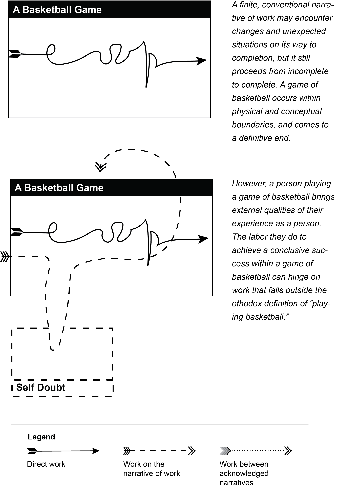
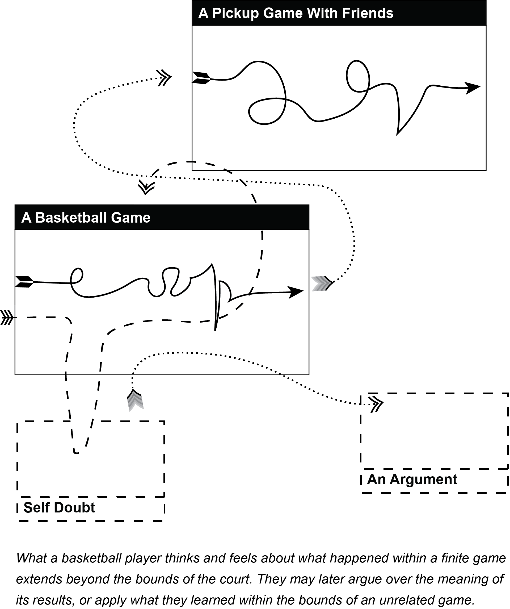
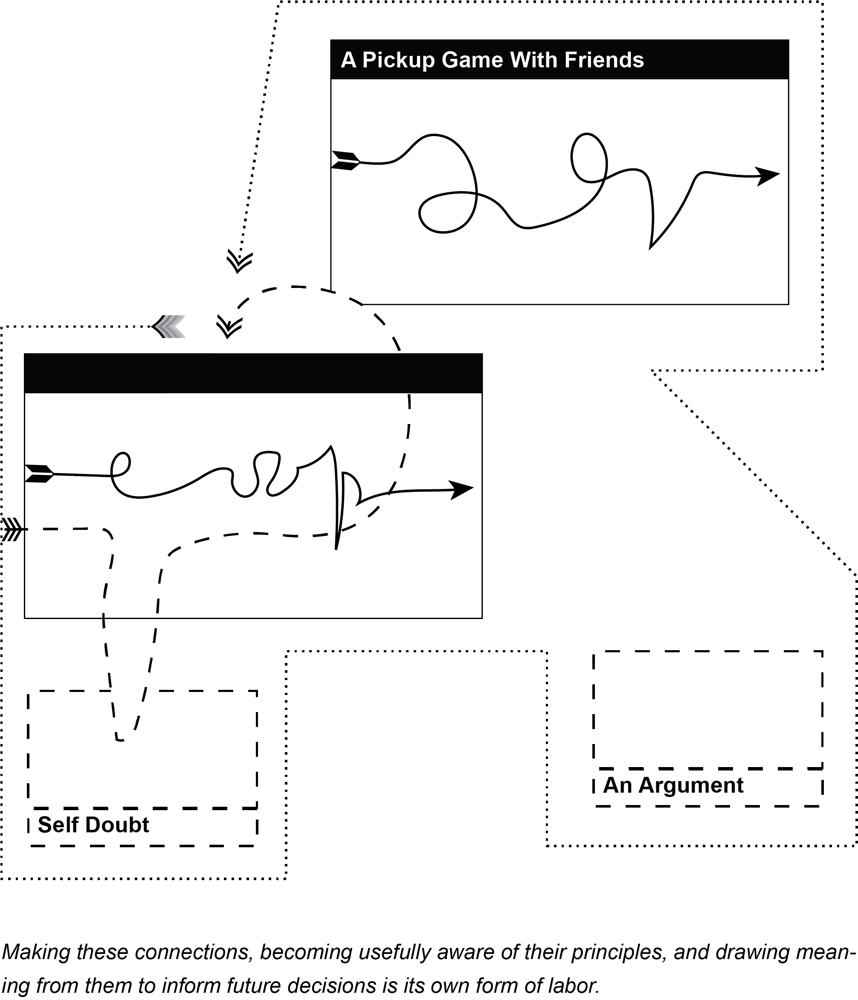
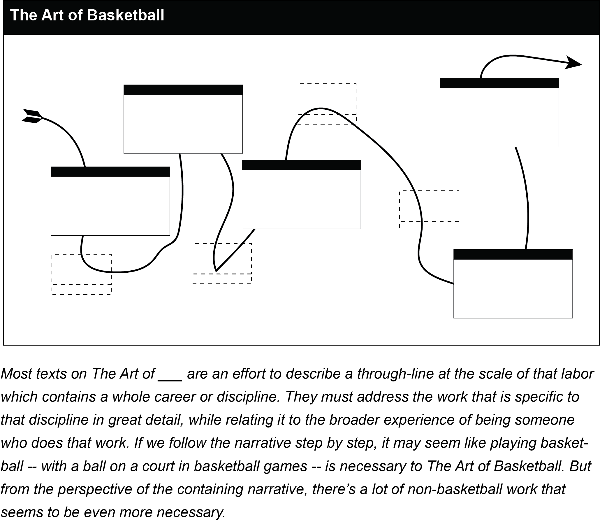
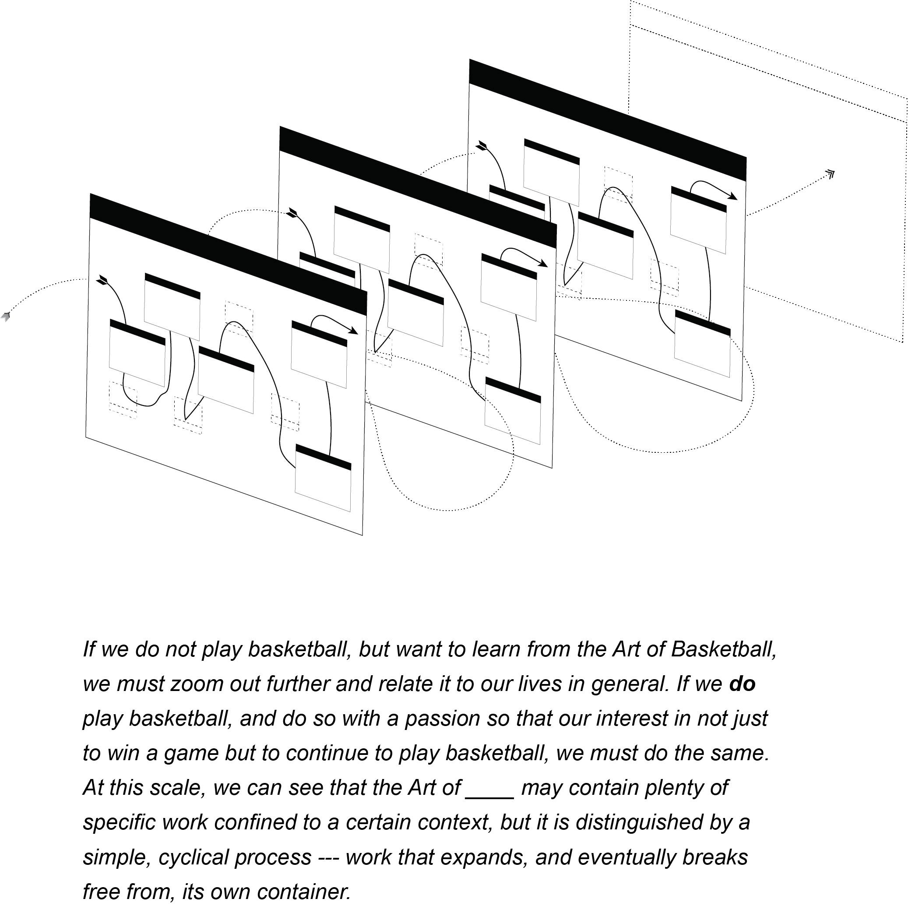
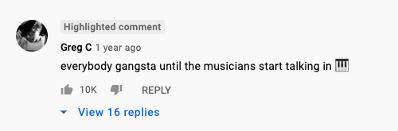

All labor follows a story. Consciously or not, we work according to a narrative that describes what we do, why we do it, and what it accomplishes. In a conventional narrative, there are two different kinds of labor — direct actions that must be done, and the effort to figure out which direct actions to take.
In this narrative, actions that apply directly to the stated goal are the only legitimate form of labor. If a task takes longer to understand than to accomplish, we will often lament how much time we wasted getting to the “real work.” If our labor were a maze, “real work” is the path that takes you to the exit — the actions that move the plot forward.
Of course, we don’t always encounter mazes knowing which path is the right one. There is tension between the “real work” and whatever it is we have to do when we don’t know what we have to do. Walking the right path to the exit is certainly different work than figuring out which path is the right one, but we need to do both at once to succeed.
However real or fraudulent our labor may feel, we define it by what we can understand of it. A maze looks very different once we’ve made it through. When we look back on a task that took surprising turns, we can see how our idea of the right path or the real work changed as we labored and learned. We cannot describe this whole process of doing and understanding work with a conventional narrative in which real work leads to a desired outcome. The experience of finding our way through a maze for the first time requires a distinct type of labor. We will call this conceptual labor.
Conceptual labor is labor that integrates direct work with the efforts to define the narrative of work and how it should be done.
Conceptual labor is too complex to follow step-by-step instructions to a known outcome, so we cannot approach it with a single narrative in mind. It is better understood through a model. A narrative describes what happened or will happen by combining nouns (people, ideas, materials) with verbs (actions, decisions, transformations) in a setting (a place, an assignment, a mechanism). A model is a dynamic representation of everything we know about the nouns, verbs, and settings that concern us. We say it is dynamic because all the possible properties and effects of these components are significant within a model, and so are the relationships between them. A model captures what could happen, what something appears to be, or what conditions might matter. In this way, we can produce multiple narratives from a model by suggesting or deciding on definitions of the nouns, verbs, and settings that are significant to our labor. So when we have to model our work in the absence of a reliable narrative, the idea of real work loses its usefulness and meaning.
By simulating the interactions between ideas, material reality, and social conditions, models can quickly become so complex we cannot predict their behavior. The mental effort to construct these models, usefully manipulate them, and understand their behavior is fundamentally different than simply trying to figure out the right thing to do. This type of labor cannot be fully separated from the direct work being done, yet it maintains so many potential approaches that it cannot be described within a single narrative, let alone the conventional narrative.
In these terms, conceptual labor is defined as:
The process of working when the fundamental components of a model of labor can change themselves and each other.
To talk usefully about the potential paths and results of this conceptual labor, we must be able to talk in detail about models and their fundamental components. Whatever specific circumstance in which conceptual labor is done, it is always done through a model. A meaningfully thorough description of the fundamental processes of working through models would offer a general theory of conceptual labor, separate from the language or conventions of any particular discipline. This is what the Theory of Conceptual Labor intends to present.
To this end, The Theory identifies seven related Tenets that reflect essential conditions of conceptual labor, regardless of how it is done or what form it takes. The Tenets imply core concepts that fall into four different groups based on the qualities of conceptual labor that they address. The concepts of Tenets 1 and 2 describe the nature of modeling work. Tenets 3 and 4 address the way in which the conventional narrative competes with the process of conceptual labor. Tenets 5 and 6 address the transient nature of work. Tenet 7 describes how conceptual labor produces and follows patterns of working.
A short summary of the Theory follows this introduction, preceding the core text of the Theory. The glossary contains all the special terms used here and in the Theory.
The section Why We Need a Theory of Conceptual Labor presents various arguments for why a general theory of conceptual labor is necessary and relevant, providing more examples based in real-world experience. In addition, it briefly surveys the existing language from various disciplines to describe what we are calling conceptual labor.
The section How To Use The Theory of Conceptual Labor outlines basic methods by which this theory can provide abstract mental tools to support the many ways in which specific conceptual labor is done in the mind and the physical world. It contains a demonstration of how to use the special terms of the Theory to represent and analyze a simple, real-world example of conceptual labor.
The final section, The Expanded Theory explains the Tenets and Core Concepts in detail, first in abstract terms and then again through case studies for each of the four groups.
To do conceptual labor, one must be able to conceive of and manipulate a dynamic mental model of work. These models can be described by three fundamental components: actors, work, and context. Individuals attempting to work on a project do so through their models, whether or not those models accurately represent real world conditions. The whole, subjective experience of attempting to do work on a project, including nonwork activities and the management of models, is called labor.
Conceptual labor begins at any point in a given project when actor, work, and context components all have the capacity to change themselves and each other. Conventional labor may resume when every instance of at least one component can be treated as a fixed quantity. By definition, conceptual labor is a continuous process that occurs as long as one of each type of fundamental component in an actor’s model can change itself and at least one of each other type.
In this process, actors represent and compare models and their components within the scope of a project to align them with the changing requirements of their labor. The decision to keep changing or to stick with what is known is a self-reflective process that must critique and defend its own rules and progress. This process generates meta-methods that apply to labor in general. These methods extract abstract principles from direct encounters with specific kinds of work. In this way, conceptual labor proceeds from direct experience to abstraction and returns to direct experience, without regard to conventional definitions of work.
Tenet 1 is the core proposition of the Theory — that we can imagine a useful and dynamic representation of labor — a model — and that we can place the fundamental parts of that representation into three distinct categories. Tenet 2 acknowledges that individuals are the ones doing the imagining, each operating with models of their own conception.
Given any description of a project, we cannot assume that everyone who does the work it demands will understand it in the terms and structure used by that description. Nor can we assume that the description is exhaustive for all circumstances. Even when labor is thought to be “brainless” and routine, we review the conditions of a project and load them into our own mental model. Though this model may refer to external instructions or materials, our models are what we directly engage with.
“What am I trying to do here?” is a classic statement to initiate a new model. We ask this question of ourselves and our circumstances, and then work according to the best answer we can get.
Though work involves change by definition, it can still be systematized, described, and planned in effective ways if at least one of its fundamental components can be treated as a known quantity. This is conventional labor — the work we do when we think we know what to do. In this narrative of work, being confused about the project is not part of the project.
However, work behaves much differently when all significant components are dynamic. When the actor, labor, and context are all able to change on their own accord, and able to change the other types of components, the work takes on another dimension. In this type of work, solving one’s confusion, coming up with new instructions, and executing them are all considered part of the same project.
There is work involved in understanding why conventional labor fails or why a narrative of how one should work is wrong. When the conditions of work meet Tenet 3, conventional labor is no longer effective, but it is the mode we will employ by default (Tenet 4). Therefor, attentiveness and sensitivity to the changing requirements of a project can be considered skills in their own right.
Models, by nature, are abstractions. They may abstract detailed qualities of external, real-world conditions or specific ideas as they are understood by an actor. To some degree these specific qualities of work need to be encoded as a mental model, personalized to the actor imagining it. In this way, they are always a translation from one context to another. Any conscious actor can model their own mental state enough to create self-referential models, further abstracted from the original context. So while conceptual labor may be rooted in specific conditions and real-world problems, it tends towards abstraction. This implies that conceptual labor that we call by one name can share the same mental context as conceptual labor that falls under an entirely different label. Though the abstract similarities between methods and types of conceptual labor may not translate fully, fundamental and useful patterns can emerge. This means one can consciously practice these patterns to develop them as skills of conceptual labor that can be applied across disciplines.
TODO ADD SUMMARY – Like, a new one? from the website? somethin. this is the last task for you
Labor refers to the overall state of acting to produce results.
Work refers to the effort one makes during labor
Project refers to a defined scope of work — the thing you are trying to do. It is the nature of our attention that we subdivide our labor into smaller projects, so whatever conditions that guide our work at any given stage of labor define the project being done
Models
A model is a dynamic representation of the labor required by a project as understood by an observer. This observer is typically a self-aware party that situates themselves as part of the model. The model is comprised of concepts that have the capacity to describe all the conditions that are relevant to the project as understood by this party. One can engage these concepts to produce multiple, hypothetical narratives of how they should go about their labor and what the expected outcomes will be.
However complex these models are, their significant components can be categorized as one of following three fundamental components of labor.
The Fundamental Components of Labor
Actors are anything performing work or work-equivalent actions. An individual at work is the typical actor within a project.
Work is any action taken by an actor that contributes to their labor, designated either before it begins by the actor’s intentions or after it has started by its observed results.
Context is the total set of all conditions that the actors believe to be relevant to the execution of work as part of a project.
In this theory, then, labor is when an actor does work within a context to complete a project, following their model to do so.
Other Terminology
The conventional narrative is the progression of labor from incomplete to complete in which work that does not directly advance the process towards completion is considered illegitimate, non-canonical or not “real work.”
Medium is the material, physical or otherwise, with which we do conceptual labor. Unlike context, the medium of our conceptual labor is not defined by our understanding of it. Medium refers to the total set of conditions, known or unknown, relevant or not, of anything with which we do conceptual labor.
We know how to follow a complete, accurate map — it is mainly conventional labor. We may still face a challenging journey moving through unfamiliar territory, but the obstacles lie within known boundaries — to get from point A to point B, that river needs to be forded, that hill must be climbed, etc.
It is very different work if the map is wrong. When faced with an inaccurate map, filled with unseen errors, we must do conceptual labor. Even the most skilled explorer cannot predict that the trail ahead will be blocked by a landslide if they are the first traveler to encounter it.
Of course, if our traveler knows the land so well, they could discover, through their observant bushwhacking, that they cannot trust the map. The moment they realize this, their labor takes on a new dimension. The map must enter into a dialogue with the changing conditions of the journey, to be updated as our adventurer deepens their understanding of the landscape. Before, their labor proceeded as they did — as directly as possible from their starting point to their destination. But when they turned back to re-consider their route, their labor became a cycle too.
The land an explorer moves through is incontrovertibly real, but with or without a map they travel primarily through their own hypothesis of the land. They stay on path only as much as their conception of the land aligns with the earthly facts around them. When the landscape rebukes their expectations, they must proceed in cycles through perception, experiment, and re-conception. The conventional labor of hiking along a known path is still necessary, but it is no longer the sole task. It becomes a proposition rather than a description, and must be observed as athletically as is done.
A bad map will still get you lost no matter how carefully you follow it. A type of folktale to this point has circulated for hundreds of years, one of the earliest examples being a classic misadventure of Mulla Nasreddin
Mulla had lost his ring in the living room. He searched for it for a while, but since he could not find it, he went out into the yard and began to look there. His wife, who saw what he was doing, asked: “Mulla, you lost your ring in the room, why are you looking for it in the yard?”
Mulla stroked his beard and said: “The room is too dark and I can’t see very well. I came out to the courtyard to look for my ring because there is much more light out here.”1
Everyone has done work which felt productive at the time only to discover that it had actually accomplished nothing. The illusion of productivity came from following a narrative about how to work well, not from meeting the actual requirements of the task. (Having good light where you’re looking isn’t a bad idea, after all.) When this happens, it is easy to believe that we had the wrong instructions, and the right ones are out there somewhere. If we could just find them, we’d be able to follow them faithfully to the solution.
It is much harder to consider that some work has no straightforward story — that it must be done in the dark. Some work can only be understood as one does it, some work continuously changes so it will never be fully described, and some work must be invented as it occurs. Such work frequently involves other people, learning something new, or understanding the behavior of a complex system. When we attempt to apply conventional narratives to this kind of work, we create new problems and fail at our original task.
One of the most important circumstances where conventional labor falls short is when there is no map in the first place. It is through conceptual labor that we create new ideas, shift paradigms, and learn.
In his explanation of the difference between advanced degrees, computer science professor Matt Might provides a clear, charming way to picture the difference between working within a frame of reference and working on the frame itself. In The Illustrated Guide to the PhD2 , Might pictures all of human knowledge as a circle. Primary education fills a smaller circle at the center. Bachelors and masters degrees extend a specialty like a spoke from the center, and professional research brings you to the “edge of human knowledge.”
See Figure 1 next page
Note that not only do the different stages of learning take distinct shapes, but work that expands the frame is accompanied by a profound shift in perspective.
The unique value of the work done by experts comes from their ability to navigate, understand, and describe this kind of work, let alone execute it.
Painter James McNeil Whistler became famous not just for his portrait of his mother, but also for a statement on the nature of the conceptual labor of painting. Though quite influential on the development of modern painting, his work was once ridiculed for its simplicity by more conservative critics. One such review led to a famous libel trial, where he defied the idea that the value of a painting was tied to the time spent painting it. When pressed if he asked market prices for “the labour of two days”, he responded: “No, I ask it for the knowledge I have gained in the work of a lifetime.”3
A much more recent anecdote from economist Dan Ariely4 shows that the difficulty of putting a price on experiential wisdom isn’t just a problem for professional artists. He spoke to a locksmith who lamented that he lost wages as he gained mastery. When the locksmith was still a novice, he would struggle with locks for hours at a time, sometimes breaking them. His customers waited and watched the whole process, and tipped him well for all of his hard work, even if they had to replace their lock. Once he became an expert, however, he could open locks in a fraction of the time, with apparent ease and without damaging them. Not only did this cause his customers to tip him less, but they started complaining about his base fee, even though they were getting a more valuable service. This locksmith had encountered his profession’s version of a refrain that painters have been hearing since at least Whistler’s time: “Well I could do that.”
The point here is that simply knowing what to do can be deceptively difficult. Conceiving of work is work5.
When we encounter work that lies beyond our imagination, we still judge it within the limits of our current understanding. Novices only see the work once it has been conceived, and without the domain knowledge, experience, and judgement of an expert, they fail to see how the work must be continuously re-conceived as it is performed. They don’t appreciate the work it took to produce what’s in front of them at any given moment because, in part, they can’t see it without doing at least some of the work itself6. Conceptual labor creates the very ground on which it is performed.
We have all been confronted by a complex task that, when prepared and executed by an expert, looks like child’s play. Yet everyone is an expert in something, even if it is only where to find things in their kitchen. At some point we have all struggled to explain, to ourselves or to others, why the real, tricky thing we are trying to accomplish is much more complex than it appears from the outside. We have no guarantee that the conceptual labor we have done to make our expert work possible will be visible to observers, and it is difficult to remember how a novice sees the task. To paraphrase Burton Rascoe,7 the spouses of writers will never understand that they are hard at work when staring out the window.
We have all been the writer, and we have all been the spouse, (or the locksmith or the customer, or the critic or the painter). Often we are both during the same project. As we produce and examine narratives of our own work, we are trying to see more than we can see. We will never fully appreciate the work we are trying to invent before we have invented it.
It is useful to recall the root of the word “expert” and forget its authoritative connotations; it reminds us that experience is a special kind of knowledge. Seeing the narrative of work for what it is rather than what we imagine it to be is the true difference between expert and novice. Novices may think experts work beyond the boundary of confusing work, where all the work makes sense to those that know enough about it. The expert, however, knows that they will continually lose sight of the work as it evolves, and they cultivate the skills and attitudes that let them freely move back and forth across that boundary of understanding.
The disagreement between an objecting, impatient novice and an expert trying to explain the transformative nature of their work plays out in our own heads as we do difficult, conceptual labor that continuously pushes us into new territory. Conventional narratives of work and the strategies that go with them assume that this disagreement will be an argument, and emphasize determination, persistence, and confidence in foreknowledge. These are fine qualities in the abstract, but also how you break a lock. A general theory of conceptual labor should provide rules of order to this argument so that it can become a lively conversation, full of productive debate and transformative surprises.
Argument or revelation, this dialogue is shaped by our worldview, and the biases and ethics that come with it. What we consider to be work reflects our values.
If a brilliant scientist struggles and fails all day to solve a problem, takes a defeated nap, and then wakes up with the solution in mind, was the nap work? Was the struggle?
If we count that nap as work without extending the dignity to all naps, we can begin to expose a deep problem in the way that we talk about work. Would that nap, pregnant with insight, still appear worthwhile if it occurred at the end of the day — or after a week of fruitless work? Did any work actually take place during the nap, or did the scientist simply look at the problem differently after the nap? If so, does that mean looking is work? Photographers would say it is.
By convention, work is what we do that is not a waste of time. To be worthwhile is for our efforts have value justifying the time spent. The problem is, of course, that our notions of value are themselves contingent, biased, and subjective. It is not always clear how much of our time was “productive” and how much was “wasted.” To the locksmith’s customers, struggling with a lock looked more like work than delicately finessing it open.
The importance of hindsight exposes the uncomfortable fact that when we understand the value of our work has an enormous influence over the planning and doing of work. Hindsight may show us the full process of work, but even then we are liable to discount certain activities or thoughts if they don’t fit our existing notions of worth. A select few offices are willing to schedule naps into the workday when needed, but they remain outliers.
The conventional narrative of work cuts the worthy work away from the rest of the experience like a butcher slicing a cut of meat from the connective tissues that once held the muscle in place. How might we talk about the whole, live animal of work, without reducing it to “useful” parts, as it roams under its own power?
To do so, we have to regard the worker’s internal sense and narrative of their effort before any external measure of its results. When we say that caring for an ailing loved one is “hard work,” we come closer to the meaning of the term than anything having to do with commutes, offices, or paychecks. It is work because we do it, not because it produces value, follows instructions, or “looks like work”.
To talk about conceptual labor is to talk about behavior that we do not automatically or officially recognize as work. Of course, the danger in calling parts of our internal lives “work” is that we might start to expect them to reliably produce economic rather than experiential value. Common usage of the word “labor,” however, points in the other direction — that some of our behaviors are worthy just in the doing.
“Labor” and “work” are roughly synonymous when we define them by the doing of challenging, intentional activities, but there is a useful, though inconsistent, distinction in how they are used in practice in conversational English. “Work” tends to be what we say when we talk about this activity within the structure of employment — jobs, the people and institutions that seek them, do them, give them and take them away. We tend to use “labor” when we need to talk about the larger frame in which we experience work.
“Labor” is often what we say when we talk about about this whole system of work in a social context — if we dispute the the terms under which people may go to to work, we have a labor dispute. Taking care of another person is only work if we are paid to do it, or if we would rather not do it — otherwise it is a labor of love. What similar distinction can we draw between the implication of referring to a group of people doing something as laborers rather than workers? A prison worker is probably a non-incarcerated person working for the prison itself. Yet prison labor, a term nearly a euphemism for slavery, is done by the inmates. Labor, it seems, is something we must live with.
The Theory makes this distinction between these terms explicit — work refers to action taken within the full experience of labor.
The central proposition of the Labor Theory of Value8 is that the exchange value of anything should be directly tied to the amount of labor that went into producing it. We don’t have to debate Marxist theory to recognize that, despite its appealing logic, this is still an alternative economic system, and not the existing, financialized global economy in which we pay rent and short stocks. At the very least, it shows the many ways in which an economic measure of one’s labor will leave out many qualities of the experience of work that are important to the individuals doing it. Whistler’s trial, after all, hinged on the difficulty of measuring the actual work represented by a single painting.
The term “knowledge work9” also reinforces the separation between “work” and an individual’s full experience of it. It recognizes that “non-routine” work is increasingly necessary in a workplace where employees are expected to “produce” new “knowledge,” manipulate symbols, come up with new ideas, etc. Depictions of Knowledge Work can verge on what one might expect to see in a montage in a movie about a genius. It is still wholly oriented towards the workplace, and relates discussion of “non-work” strategies like our scientist’s nap to the requirements of employed work. Its overriding concern with managing the manifestation of conceptual labor in a workplace ultimately reinforces a definition of work by its outcome and external qualities. It does not tell us why fundamentally different strategies of knowledge work might arise under the same roof, applied to the same materials, nor how to organize and interpret those fundamental distinctions that can be reliably used by the knowledge workers themselves. In his essay “The Planning of Science,” Lewis Thomas summarizes this discrepancy in the knowledge work within the medical sciences:
We may as well face up to it: there is a highly visible difference between the pace of basic science and the application of new knowledge to human problems. It needs explaining.10
As a term meant to assist such an explaining, “conceptual labor” owes a debt to Arlie Hochschild’s term emotional labor.
In The Managed Heart,11 Hochschild studied the performative emotions required by the jobs of bank tellers and bill collectors. Coining “emotional labor,” she named a crucial, required component of many jobs that lay in plain view yet remained systemically overlooked because it did not fit into the conventional narrative of what constitutes valuable work. To name “emotional labor” is to recognize that the hidden nature of work extends to the social conditions of the workers themselves.
Many readers may have first encountered this term in the popular usage it has since acquired. Its non-academic definition is closer to “effortful emotional processing required in social circumstances by etiquette or the expectations of others,” such as the work behind composing a text message so that it will be well-received by the recipient. Hochschild has gone on record12 to argue for the importance of the term’s original context within paid work — that it exposes the otherwise tacit expectation that employees use their emotional, personal selves in a professional capacity.
In naming emotional labor, Hochschild looked at all the activities that were required of individuals working within a defined profession, whether or not those activities were included in that definition. This is what we must do whenever we are doing conceptual labor — critically assess our consciously held idea of work and change it to better reflect our experience and observed reality. If we drew one of Professor Might’s circles around what we call work, Hochschild put such a dent in it that the entire circle got bigger.
It makes sense that individuals would use this term whenever they feel like they are doing work, whether or not it is paid. Hochschild’s original use of the term distinguishes work from labor. The Real Work of being a bank teller excludes the personal conditions of the worker, such as their genuine emotions, but the teller’s full experience of their job — that is their labor — demands those parts of their experience. In social circumstances, we are still asked to do work with fixed definitions that don’t line up with our experience of doing it. “Just answer the question” is a sentence that defines its own parameters of Real Work, deliberately excluding all the other effort it might take someone to speak the answer — effort that could easily fit the popular definition of “emotional labor” if the question is a fraught one. So, while the popular usage can be problematic13 at times, it is consistent with the Theory that actors would argue, in any circumstance that requires effort from them, that what they are actually doing is different from what it looks like they are doing or what they are supposed to be doing, and that the effort has intrinsic value.
Our napping scientist reminds us that just because something doesn’t look like work doesn’t mean it’s not. Naps, by nature, do not create products. They are, however, valuable to individuals, and individual naps have certainly been vital, through contingent circumstance, to the creation of many valuable things. It is only within the conventional narrative of labor, in which we judge work by available knowledge and prioritize direct results, that a nap can never be work.
When we equate work with economic value we forget that it is also part of our behavior — our labor. If we are to describe the entire picture of our labor, full of learning, experiencing, and feeling, we must make a radical departure from the conventional narrative surrounding work.
Over and over, experts beseech us to reimagine their labor in this way. From psychology to education to martial arts to mathematics, initiates of countless fields frequently advocate for alternative theories of labor from their perspective at the edge of Professor Might’s circle of knowledge. Though they address their profession’s concerns in the specific language of their field, most direct the reader towards deeper lessons that reflect both their training and their values.
We can find plenty of examples of this genre by looking for titles that start with “The Art of.14” “Art,” of course, is a loaded, imprecise term, but unpacking its uses by non-artists can provide insight into the dialog about doing conceptual labor that already exists.
In The Art of Computer Programming,15 when Donald Knuth appeals to the “aesthetic experience” of programming, he can do so from a distance that arts professionals must cross. In The Creative Habit16, choreographer and dancer Twyla Tharp cannot cover new ground by urging her readers to think of dance as an art. Instead, she compares art methods laterally, invoking design and sculpture. The challenge faced by practicing artists to explain how they do what they do reminds us that we lack a general vocabulary with which to navigate these shifting landscapes of methodology.
When considering all the many attempts to describe how to do the art of something that is not already called art, we should not ignore James Elkins’s classic study of art education, Why Art Cannot Be Taught.17
In the section, If Art Cannot Be Taught, What Can be Taught?, Elkins presents a list of four categories of subjects, skills, and resources that could be taught as part of a formalized art education. His brief summary ends without a solid answer.
Each of these four answers to the question of what art classes teach is partly right, but none is a good definitions of what happens in college-level art instruction… The problem with saying that art classes instill visual acuity or technique is that teachers and students do not behave as if those were their principal goals… Teaching at the graduate level is directed towards complicated questions of expression, control, self-knowledge, and meaning — subjects that have little to do with technique or sensitivity or even visual theory, and everything to do with the reasons we value art.
I am not denying that art classes can teach these four things, nor am I saying that they aren’t reasonable goals. But their marginal positions reveal how deeply we must believe that we are doing something else, whether or not we can say what it is. The other goal is nebulous, and it has to remain that way: otherwise teachers and students would be impelled to think about the contradiction between their claim that we can’t teach art, and the reality that we behave as if we might be trying to do just that.
Elkins sees the classical philosophical roots of the modern concept of art as a root cause of this “conundrum”. The Greeks distinguished between techne (technique) and emperia, the subjects that Aristotle said couldn’t be taught, only “absorbed, or learned by example18.”
What we think of as art is more like empeiria: it does not depend on rules so much as on nonverbal learning, things that can’t be put into words.
When reading treatises on the “The Art of ___”, if we factor out references to artiness — the implication that there is something inherently elevated about art making — we are usually left with a discussion of the empeiria of their subject. They present evidence of valuable processes and concepts that cannot be directly learned or even inferred by beginners from the available curricula. Recognizing that this material can’t simply be explained, they combine specific domain knowledge with various indirect strategies meant to cultivate insight in the readers.
In general, you can find this material presented as:
The Lost Art of Reading Nature’s Signs employs most of these approaches when describing its particular art:
Most guidebooks for walkers give the reader information about a particular location. This one does not; instead it lays out techniques that can be applied on any walk in almost any area, and demonstrates how these techniques can be combined to make the walk more interesting than the sum of its parts19.
The art its title refers to is not just the skill of identifying different plants and animals, it is “the art of making predictions and deduction.”
The Art of something is a way — a process. So, while our bulleted list may be a handy start, we find that its qualities must be discussed in an integrated way. Talking about one leads us to another. This is the effect of presenting “a distinct way of working that remains aware of the big picture.”
We don’t need a precise definition of whatever “art” refers to in these cases to realize that experts of all types propose alternate maps based on their experience, and that they often point in the same direction when doing so. Perhaps the routes on these maps remain evasive because they concern evasive qualities, and perhaps they are constantly being redrawn because they concern change and conceptual progression. Perhaps we keep publishing treatises on the art of this hard topic or the science of that squishy topic because there exists a parallel episteme that asks and answers questions using tools from both the artistic and scientific traditions without regard to the boundaries of disciplines.
These methods don’t simply contradict conventional wisdom. Rather, they diverge or overlap with available knowledge according to an exhaustively argued methodology that addresses fundamental concerns at all levels. They attempt to present a systemic understanding of the material, and in doing so must acknowledge that their topic is often taught mainly by focusing instead on what can be explained or tested.
Often the first map that we are given is one that sticks to paved roads, and there are many careers in which you can make tremendous progress by developing a well-outfitted off-road vehicle. But if we are to truly know the territory, we must also hike by foot, listen to the flora and fauna, sometimes swim, or even go up in a hot-air balloon.
No map will prepare a novice for every territory, or even every eventuality in their chosen field. However, across disciplines we see experts lead with advice about how to critique available maps and draw your own according to fundamental principles about the material and the labor it takes to engage it.
In The Art of Doing Science and Engineering,20 engineer Richard Hamming also draws on a classical distinction between the teachable and empeiria, urging his science-minded students to appreciate the importance of style in their work. Rather than just teaching them science knowledge, he aspires to provide a “meta-education” that will guide a lifelong career. Chris Argyris’s Teaching Smart People How To Learn21 makes a similar case in the language of corporate management.
Educator William Ayers directly engages this tricky process of learning and teaching in To Teach. He begins with a list of myths perpetuated by education degree programs, reorienting their concerns to the full context of real-world classrooms. He defines teaching as the “vocation of vocations, because choosing to teach is to choose to enable the choices of others.”22 This kind of teaching is a way of engaging individual students, not a program of transmitting information. Writer Zadie Smith’s concerns about the pervasive importance of style in her work leads her to describe writing as the “craft that defies craftsmanship” in her essay, Fail Better.23 A writer’s style is their “manner of being in the world.”
When you understand style in these terms, you don’t think of it as merely a matter of fanciful syntax, or as the flamboyant icing atop a plain literary cake, nor as the uncontrollable result of some mysterious velocity coiled within language itself. Rather, you see style as a personal necessity, as the only possible expression of a particular human consciousness. Style is a writer’s way of telling the truth. Literary success or failure, by this measure, depends not only on the refinement of words on a page, but in the refinement of a consciousness, what Aristotle called the education of the emotions.
The appeal to style is a practical consideration of how to develop rote skill into method. When experts make a map-of-maps, they know you will not just read the maps it contains, but situate it among other maps and maps-of-maps. So they present a style — a methodology that can be coherently abstracted and applied to unknown contexts. Mathematician Eugenia Chang, author of The Art of Logic,24 considers the abstractness of category theory to be one of its most important qualities, which “means that we can apply it much more broadly to the whole of life in ways that might be surprising.” Technologist Brett Victor’s talk Designing On Principle25 makes a similar appeal to coders and designers, that the abstract methodology behind their specific work should have integrity with the broader social context that frames it.
Of course, the problem indicated by the recurring appeals to something like emperia is the impossibility of fully abstracting style. The instructions are simple while the doing is not. This problem has garnered its own, continuously-re-attributed anecdote: someone asks a sculptor, maybe Michelangelo, if their work is hard. The sculptor says no, all you have to do is remove all the marble that isn’t part of the sculpture.
The deceptively simple instructions for doing conceptual labor have been annotated, expanded, and encoded in the literature and practices of countless disciplines. Many robust and well-researched conceptual frameworks exist to consciously steward the expected conceptual labor of their adherents. These include, but certainly are not limited to, studio practice, critical theory, pedagogy, andragogy, job crafting and non-canonical work, agile methodology, improvisation theory, metacognition, social framing theory, and design thinking. If experts create maps-of-maps, such frameworks are like libraries of maps. This metaphor suits the fact that experts in so many different fields say many of the same things about the “art” of their work. Dig deep enough in one section of a library and you’re likely to find yourself in subject you previously thought unrelated. How to use a library is also its own skill to develop, whatever you’re looking for.
The Theory does not mean to replace or unseat any of these existing frameworks. Rather it aims to provide a mental cataloging system, useful in libraries familiar or strange.
We need such a theory, because every field’s own Pricipia Mathematica26 can be met by a matching ad-hoc incompleteness theorem.27 However successful our work to order and rationalize the world may be within its goals, our actions and their results become a part of the world that we encounter and must relate to our other labor as conscious actors. We situate these frameworks along chronological, conceptual, personal, or completely novel measures. Whatever frame we may build in which to work, it is our nature as frame-builders that allows us to always step out of one frame and consider it in a broader context.
In his essay The Role of Theory in Aesthetics, Philosopher Morris Weitz attends to the problem of defining “Art” when new theories and new art continue to develop.
Because work N + 1 (the brand new work) is like A, B, C … N in certain respects … the concept is extended and a new phase of the novel engendered. “Is N+1 a novel?,” then, is no factual, but rather a decision problem, where the verdict turns on whether or not we enlarge our set of conditions for applying the concept. What is true of the novel is, I think, true of every sub-concept of art: “tragedy,” “comedy,” “painting,” “opera,” etc. of “art” itself28.
In seeking a consistent, general theory of aesthetics, Weitz’s work has to follow this same pattern, which, he says, is the pattern of an artist making art. He considers all the theories that comprise the frame in which he works, and seeks a theory that can continually create — and then escape — new, expanded contexts. The subject of his Art of ___ happens to be “art,” but that doesn’t make it special. As we have seen, it is the pattern of work, not the subject, that matters. The art of figuring out the art of art seems to be the same thing as whatever “art” is.
Half a century later, Weitz’s theories contributed significantly to Nigel Warburton’s The Art Question29, a sort of guide to asking “what is art?” Proceeding from Weitz’s position that it was “a logical mistake to look for the essence of art,” Warburton developed his hypothesis “that ‘art’ is indefinable on the grounds that this is the most plausible position given the evidence.” His conclusion, which he calls “even more tentative” than Weitz’s:
Those philosophers seeking a watertight yet general answer to the question “What is art?” should be left to their own devices. For most of us, the rewarding questions in this area will be the questions that touch real works of art. This is nothing to be embarrassed about. The whole point of the art question is that it is asked by people interested in works of art, not simply in the idea of art. Ultimately, we must turn back to the works themselves.
Like the artists Weitz imagines, and like Weitz himself, the viewer does not get a guidebook to art. They must look, consider the context, consider the new thing and its new context, and look again next time. All these treatises on the “art of” a topic ultimately concern themselves with this process — how to work attentively within a specific and declared set of rules and ideas, while continuously relating to contexts outside that set. These may be big, encompassing concepts (like “art”), parallel disciplines, or hazy yet compelling personal experiences. For whatever work you do here, there is the unknown work out there that reveals itself to a curious mind at work.
The work we do to step out of a frame is different than the work that stays only within the frame because it is unbounded. It is what philosopher Eric P Carse calls an infinite game.
Infinite players cannot say when their game began, nor do they care. They do not care for the reason that their game is not bounded by time. Indeed, the only purpose of the game is to prevent it from coming to an end, to keep everyone in play.30
There are no spatial or numerical boundaries to an infinite game. No world is marked with the barriers of infinite play, and there is no question of eligibility since anyone who wishes may play an infinite game.
Generally, Art of __ texts can be read as a way of relating the finite games of the author’s discipline to the infinite game of their pursuit and experience of that discipline.
Finite games can be played within an infinite game, but an infinite game cannot be played within a finite game. Infinite players regard their wins and losses in whatever finite games they play as but moments in continuing play.
However, as readers of these texts, we are in the same situation as a viewer in front of a painting — looking for the concept of an art in the practical expression of it. The work we do cycles back and forth between bounded and unbounded contexts, open and closed concepts, finite and infinite games.
This work is the +1 in N+1. There can be no one guide to it, so we write countless guides. One particularly profound and surprising entry is Rebecca Solnit’s A Field Guide to Getting Lost. In it, she meditates on a challenge posed by Meno to Socrates: “How will you go about finding that thing the nature of which is totally unknown to you31?” Whether we answer that we will do “conceptual labor” or use another term, we must at least recognize that the answer falls within a special category of labor, one which is always changing.


  
There is a polemical quality to The Art of ___. It says, while this work may look like the exclusive province of this discipline and those who have the specialized training to do it, the soul of this work can be understood in the abstract and carried to other parts of life. The thing we call, say, windsurfing, is not the Art of Windsurfing. That is a practice of decision making and living that must be continuously refreshed as you walk through life, and there is a way encounter that practice using a windsurf board.
Enough specialists in enough disciplines have made an argument like this that it should be clear that this pattern of working has no originating discipline. If it is transferrable to the “rest of life,” then it actually belongs there as much as it belongs in the lab or the field.
A general theory of conceptual labor, whether it is this Theory or another, must not be confined by external measures or terms. It must apply equally to conceptual labor done at any scale, by any person, for any reason. This proceeds from defining work by the pattern of labor we follow to do it rather than by the contents of the action.
When our actions, experience, and environment can change and change each other simultaneously, we must continuously negotiate the value and meaning of all these things. During conceptual labor, by definition, who we are, why we do what we do, and what qualities of the world at large matter to us while we do it are all subject to critique, redefinition, and re-negotiation. When our conceptual labor contradicts existing notions of how to define a person, what actions to value, or simply how the world is or should be, we have two choices. We can stop doing conceptual labor, or we can insist on continuing the negotiation. This is not the same as insisting that the world is one way when someone says it is the other. It is the act of insisting that the world, and our interpretation of it, be free to change and continue changing.
If a toddler and a professional physicist were to take a first-year physics exam, we could reasonably say that the physicist was doing more physics than the child32. That is, they would do more of the work that we call physics to answer the questions. But, assuming they remembered their fundamentals, they will do far less conceptual labor than the child. To simply read a question, the child might have to update their imagined system of the world and learn multiple new words. The physicist mainly has to agree or disagree with the truth of statements according to their deeply held model of the world.
Surely the work of the child is not just of a different material outcome, but of a different fundamental quality. A general theory needs to describe these fundamental qualities regardless of where it lands on Professor Might’s diagram, from where a child labors to understand something at the center all the way out to the very edge, where the physicist labors late into the night in their lab. That is why the diagram is a circle rather than a line — conceptual labor moves from the center to the edge, in all directions, pressing on all boundaries. To pass a physics test is a finite game, but to expand the circle and “keep pushing” is an infinite one.
So, while no respectable science journal would publish the child’s findings, how should we evaluate their conceptual labor? It’s not as simple as grading for effort. As many art teachers have found, students can work exceptionally hard without ever changing their minds. How far did the child expand their sphere of knowledge? How much new mental infrastructure did they construct? Neither of these measures will give us some sort of tidy Conceptual Labor Quotient. Asking them, however, shows that the weight of conceptual labor is a relative value. An adult who had studied opera rather than physics might also struggle with the test, but in their own way. The validity and weight of conceptual labor is determined by the laborer. The terms of the theory make no distinction based on external value.
This is the radical proposition embedded within the very idea that we could hold a general theory of conceptual labor. For its principles to be internally consistent, we must value work by qualities of its doing rather than external measures. Furthermore, we must make room for the critical freedom that conceptual labor requires at any scale. We cannot say that conceptual labor has fundamental qualities at all if we then say, except when we’re talking about this profession or except when these people do it.
If we review the many guides to the “art of” something with this proposition in mind, we might understand their polemic tone more deeply. The authors are not just advocating for their preferred techniques, they are trying to promote and preserve a way of encountering the world that sustains free flowing conceptual labor. This, often, is at odds with commerce, which, generally, is the practice of interrupting the flow of something to use its movement for profit. A free-flowing river may support an ecosystem, but we dam it up if we want to support an economy. And, like damming up a river, there are upstream effects to conceptual labor when it is done within predetermined boundaries. The labor we do in such circumstances is no longer an infinite game. Rather it is, as artist and author Jenny O’Dell says, “free within bounds.”33
Conceptual labor that ends at a predetermined point is not fully conceptual labor. That is not to say that all conceptual labor should go on forever, but rather that it must be done with the intention to continue, rather than to reach a known end. We may begin work with a well-defined goal in mind, and we may in fact use conceptual labor to end up there. But the nature of our work changes when the path to that goal becomes unclear. If we must figure out what work is and how to do it while working — that is, if we must do conceptual labor — our goal is unknown, because what we hope to find is no longer an endpoint but a path to that endpoint. We must walk the path to know it. This is the distinction that all the Art of ___ treatises of labor to make — this work is a way, a process, a struggle. It may be done with goals in mind, but it is done with a focus on the labor rather than the product, so that it can freely accommodate unexpected methods and make new goals based on new information.
In this labor, we will inevitably challenge limitations, whether they are our own or those that others put upon us. In this way, the practice of conceptual labor is structurally opposed to entrenched positions and the consolidation of power to maintain them. Whether we redefine social constructs on our way to some other goal, or our if goal is expressly to shift them, we employ conceptual labor to do so. It is inseparable from agency and change.
There is a thriving, parallel market for the literature of “art-within-bounds,” pushed by those who have a stake in containing and exploiting the conceptual labor of their audience. The owners of dams know there’s no point in choking off the river entirely. To sell The Art of ___, one must often allow it to flourish only within convenient limitations.
Art of ___ texts explain that going off map is a different kind of work, and it takes attention and discipline to remain aware of its nature. There is another kind of text34 that is content to say that all you need is a new map — the right map, which happens to be the one the author is selling. These too might appeal to the “art of” something, but only to court association with sophistication, ineffability, high value, unconventional wisdom, and personal expression. Their main purpose is to contain conceptual labor within acceptable boundaries without snuffing it out entirely.
This is an Executive Map, sold mainly on the promise of being a new, better, or unique map. It is the “one weird trick” of critical thinking — by taking one or two steps away from a highly conventional or stereotypical position, it satisfies readers’ contrarian urge without sacrificing a feeling of certainty. Because this map is special, all other maps are trash. By definition, the good routes and advice are the ones that this map contains, so if similar paths show up on other maps, they are simply forgeries or imitations. All this valuable information becomes a systemic appeal to the author’s authority. A rarefied, “artful” approach elevates the virtuoso author’s status — and yours by extension if you follow in their “five easy steps.”
Tony Schwartz’s account of writing Donald Trump’s The Art of the Deal is somewhat of a masterclass of Executive Maps. He sees Trump’s systemic belief that “I alone can do it,”35 as the unifying narrative to the “art” the book claims to offer. If this were true, then anyone in need of a map would have no choice but to follow such a leader. The purpose of an Executive Map is not to give readers the tools to figure out their own paths, but to convince them that their leader knows exactly where they are going, and to not ask questions along the way.
This kind of writing, designed primarily to reflect on the speaker, is what Harry Frankfort defines as bullshit in On Bullshit.
Since bullshit need not be false, it differs from lies in its misrepresentational intent. The bullshitter may not deceive us, or even intend to do so, either about the facts or about what he takes the facts to be. What he does necessarily attempt to deceive us about is his enterprise. His only indispensably distinctive characteristic is that in a certain way he misrepresents what he is up to.36
The Executive Map is a template for a kind of one-dimensional criticality that can be used to reinforce existing power structures and thwart dissent and authentic critical thought. This Art of Bullshit is a special kind of art-within-bounds, one that conceals its agenda, and must likewise conceal its constraints and rules. While authors and authoritarians waving Executive Maps may primarily be interested in supporting their place in power structures, the bullshit-artistry they describe can function as an independent symptom of entrenched power. It is more of a state than a method — of criticality that stays within the frame that it seeks to change. The Art of Bullshit is what we get if we stop doing conceptual labor artificially, when we feel like it.
Bullshit methodology forwards its agenda in a sideways way by leading the conceptual labor that would dismantle it to instead create a narrative that serves it, thereby containing it. Falsehoods can be disproven, but if they are being done within a bullshit narrative, the fact-checkers are like Mulla Nasreddin searching where there is better light.
Noam Chomsky put it this way:
The smart way to keep people passive and obedient is to strictly limit the spectrum of acceptable opinion, but allow very lively debate within that spectrum—even encourage the more critical and dissident views. That gives people the sense that there’s free thinking going on, while all the time the presuppositions of the system are being reinforced by the limits put on the range of the debate.37
Jo Freeman’s influential essay The Tyranny of Structurelessness38 provides an excellent case study of how social groups can default to this dynamic, without a conspiracy to set it up. She outlines how a critical response to traditional organizational hierarchy garnered a rejection of formal structure in the self-organized groups that led the feminist movement in the 1970s. She critiques the positivist narrative of a “structureless” group by showing how, without explicit rules of participation, a “structureless” organization will be shaped by the pre-existing social relationships that members of the group bring with them. The absence of structure is a myth, she says, and it is one that preserves the structures that keep some members powerful and others powerless. Rather than arguing how things should be done within “structurelessness” she reframes the problem with new terminology.
‘Structurelessness’ is organizationally impossible. We cannot decide whether to have a structured or structureless group; only whether or not to have a formally structured one. Therefore, the word will not be used any longer except to refer to the idea which it represents. Unstructured will refer to those groups which have not been deliberately structured in a particular manner. Structured will refer to those which have. A structured group always has a formal structure, and may also have an informal one. An unstructured group always has an informal, or covert, structure.
In her conclusion, Freeman refuses to offer an Executive Map to a quick solution. Presenting multiple narratives to draw from, she advocates for an ongoing critical response to organizational structure in line with the nature and values of the movement’s work.
Contrast this with the way that the Israeli military used post-structuralist philosophy to critically adapt their methods on the battlefield39. They developed a mobility strategy that broke through the walls of private homes rather than using public streets in part because their generals were reading A Thousand Plateaus40, one of the most important books on post-structuralist philosophy.
It’s hard to argue that this was not a thoroughly post-structuralist way of conceiving of literal structures. The Israeli generals didn’t fail to sufficiently understand Deleuze and Guattari, rather they failed to go far enough in applying the theory. They’re capable of dissolving the conceptual boundaries that kept them in an agreement that walls could stop them from going where they desire. However, they’re not capable of dissolving the conceptual boundaries of the framework that locks them into the agreement to desire what they desire. The generals may understand post-structuralist philosophy, but the military cannot.
Why should this be? If the ideas that they employed were powerful enough to dissolve brick and mortar barriers, why should the barriers of nationhood, career, and ethnic identity be immune to such a powerful solvent? It’s because conceptual labor is hard, it happens in the shadows of our intentions and desires, and we avoid doing it whenever we can. Remaining free-within-bounds, we would rather destroy the homes of our enemies than renovate the ideas that hold up our day-to-day model of the world.
However new or special a map is, if it claims to be complete it is of limited use to explorers trying to make their own maps or navigate un-mappable territory. It is through dedicated, ongoing conceptual labor that we understand that we do not just need a new map to our destination, we need to prepare for an entirely different kind of journey.
For Mulla Nasreddin and anyone else looking for something in the dark, this means not going towards the known source of light, but finding one you can carry with you, or maybe climbing the lamppost and cutting it down.
In her essay Poetry is Not A Luxury, Audre Lorde says:
The quality of the light by which we scrutinize our lives has direct bearing upon the product which we live, and upon the changes which we hope to bring about through those lives. It is within this light that we form those ideas by which we pursue our magic and make it realized.
The poetry that is indispensable to Lorde is not “sterile wordplay,” but a process — “the revelatory distillation of experience41.” To Lorde, poetry-within-bounds is not poetry. “In the forefront of our move towards change, there is only poetry to hint at possibility made real.” What would happen if we practiced this, the conceptual labor of poetry, and allowed its patterns to permeate our lives at different scales, with different outcomes? Perhaps we could write a book about the poetry of — or even the art of — what we know.
To learn The Art of ___, it seems that we always must cross a gap, the one that divides a concrete practice of writing poems from the abstract pattern of revelation that such a practice has the potential to teach us. bell hooks’s Theory as Liberatory Practice gives us a bridge of sorts, between the abstract practice of theory and concretely personal and political concerns.
Living in childhood without a sense of home, I found a place of sanctuary in “theorizing,” in making sense out of what was happening. I found a place where I could imagine possible futures, a place where life could be lived differently. This “lived” experience of critical thinking, of reflection and analysis, became a place where I worked at explaining the hurt and making it go away. Fundamentally, I learned from this experience that theory could be a healing practice.
hooks’s appeal to the deep-running social applications of theory is in the spirit of the appeals to a wider audience that we find in Art of __ pieces. But, rather than asking us to expand our understanding of a specific practice to see its broader application, she argues for the power of abstraction that our specific, lived experience already contains. She argues not that one could use theory as a liberatory practice, but that it is, in itself, an expression of that practice. The site of her revelatory theory is not the accepted language of theory used by academics, but the pattern of its practice. Its power can be wielded in the preferred language of the speaker, applied to concerns of personal significance, and understood in social terms that are often denied the status of “serious” intellectual work.
An internally-consistent, general theory of conceptual labor would make such an argument. That if we identify and value conceptual labor as an abstract process, we can see and value it in every part of our lives where we need it, and not exclude it based on appearances or credentials.
When we talk about about legitimizing work that doesn’t feel like “real work,” we’re really talking about the skill to understand that something you didn’t think was important is in fact important, of seeing something that matters that you could not see before.
By saying that, abstractly, this process has a pattern however, wherever it is done and by whoever, we begin outside of the frameworks that tell us what is and what isn’t legitimate work, what is and what isn’t visible. If someone is doing conceptual labor, they are doing conceptual labor. Participating in a society takes labor, and we, historically, have not been very good at understanding and valuing the labors of others. The liberation of hooks’s theory depends on the apprehension of one’s own power to critique the structures that shape our lives, not the ascension to a position where you can play by their rules.
Internalizing a general theory may prepare us to look for — or even expect — the work that has to be done to change the structures that contain our work. If we think of our own, specific conceptual labor in terms of a pattern of work that follows certain principles, we can see that the pattern has no “natural” boundaries. It is a form of working criticality, and it will go on until it resolves or we stop it and say, consciously or not, “this is a barrier I would prefer to leave up.” The poststructuralism of the Israeli generals operates firmly within the bounds of a state military, not because it has nothing to say about the structure of the military itself but because they prefer it that way. They have careers, and status, and a national and ethnic identity that all benefit from the continued existence and actions of the Israeli military.
Poststructuralism is an external label for their conceptual labor, which lends them the lofty ring of a universal set of principles that could apply to the world at large, Israeli or Palestinian. To call their military operations poststructuralist would be, by the technical definition, bullshit. If we instead described what they do in the neutral terms of the Theory, we would have to include a clear description of the barriers and structures they prefer, and the actions they take to enforce them. It is the same in looking at our own ideas, the principles that we think drive our lives. If we step outside their terms and associations, and figure out what we are really working at rather than what we say we are working at, we are bound to encounter some uncomfortable truths.
Conceptual labor means asking “regardless of what I think I’m doing, what am I actually doing?” and then continuously refining your model of your labor — which includes the way you see the world — until it describes what you are actually doing. It only stops when it arrives at an internally-consistent model that has the power to describe new actions taken while subscribing to it. It does not let us stop at politically or personally expedient barriers like the Israeli generals do.
To decide for yourself where you will stop doing conceptual labor to participate in social models42 is an expression of power. The mental cost of participating in many vital social narratives is wildly unequal in its distribution43. Conceptual labor is what we have to do when the conventional narrative fails. A society or institution that refuses to negotiate narratives that demand conceptual labor only from certain members is lying to itself, for the benefit of those who don’t have to negotiate these narratives to survive.
Conceptual labor is the process by which we fundamentally change our model of the world. The more fluent we are in how we practice conceptual labor in the areas that we have the power to control, whether it is poetry or politics, the more we will be able to critique the paradigms that control us.
In this way, The Theory can be used to critique change that occurs within a fixed paradigm, like the radicalism of the Israeli generals44. A critical response to oppressive models that remains within their boundaries is like insisting that poetry is only rhyming verse, that theory is only academic. Its focus on appearance veers towards the technical definition of bullshit.
Radical social change is often presented as a conventional narrative — once the revolution succeeds, we will be free45. This is the tempting notion that paradigm shifts behave like chemical reactions, inevitable with sufficient conditions and fuel. However, it is only through ongoing, cooperative conceptual labor that we negotiate new futures and societies. It is not enough to deliver a vision of the future, it must also be installed and sustained.
If we take seriously the demands and idiosyncrasies of conceptual labor, we can more effectively relate our work to the narratives that frame it. Beyond that, we can practice the special patterns of work that are required to shift our frames of reference. We can prepare ourselves for the narrative to change once we escape it, for it to change once again, and for it to keep changing.
The terms and Tenets of the Theory can help us identify and describe our conceptual labor, but it cannot tell us how to do it or how to do it better. Luckily, there is a simple formula for successful conceptual labor:
First, completely understand the situation. Then do the right thing. Next, completely understand the new situation. Do the new right thing. Repeat until done.
The catch is that if you do completely understand the situation, and you can do the right thing, then you don’t need to do conceptual labor. You have discovered a conventional narrative that will work for you.
Conceptual labor is what we do in the absence of such reliable instructions. It’s what we do to understand the significant circumstances of difficult problems as they change so that we might do the “right thing” at any given moment.
The simple act of starting a job with an idea of what needs to be done, only to realize you must do things differently after beginning, is the fundamental pattern of conceptual labor.
This is self-reflective labor, in which we must come up with good questions as well as good answers. We must interrogate not just the materials of our labor but the conditions and structure of it as well.
We have to ask questions like children do – responding to a good answer with another “why?” What are the relevant circumstances of our labor? How do we know we understand them? When have we learned everything we need to, and how do we know we have? Has the situation changed since we began trying to understand it? Does what and how we see affect what we can know? What important information cannot be described in words? Did we do the right thing, or just the thing that felt right? Is it still the right thing, or was it just the last right thing? Is it right at all, or just less-wrong? How much less-wrong? And so on.
The Theory provides a framework in which to ask these questions. The Tenets propose the following approach:
Using the theory to analyze our labor, then, should provide a way to clearly define models and the relationships between their components to our own satisfaction. Doing so should help us become aware of significant changes to any of the components, or help reveal where our definitions were wrong. We should be able to repeat this process until it produces an understood model with static components that we can use as a set of instructions. This process should also allow us to infer broader principals and lessons from the answers to specific questions.
As Tenet 7 reminds us, we end up following our own ad-hoc version of this process simply by doing our work and thinking carefully about it. Asking questions grounded by the specificity of our work will produce broader, abstract questions during conceptual labor. So why introduce a separate term for Conceptual Labor Analysis? Doesn’t conceptual labor imply self-considering work?
It’s true – many fields contain wisdom and habits that their practitioners can employ to productively critique their labor as they do it. (See the earlier chapter, We Are Always Writing Theories of Conceptual Labor.) For those of us with specialties, the terms of our art will likely be the most useful and convenient tools most of the time. Math, for example, offers tools like “zero”or “division.” More importantly, they are provided as part of a framework that relates them to a host of other tools, endowing in them a rationality that allows us to use them in almost any context where we encounter nothings or portions. This is what disciplines offer. Dance, for example, can ask and answer questions with movements of the human body. They may not be easily translated into English, but we can recontextualize what we absorb from a dance performance (or practice) whenever we deal with limits, or balance, or space.
However, even within the framework of an established discipline, we can encounter questions we don’t know how to ask, let alone answer. In fact, these are the questions that many people head straight for, whether mathematician or dancer. Sometimes breaking out of the work you know is the work. Whether our project is to learn a language for ourselves or invent a new one for the world to use, if we are to expand the frameworks we know, we must abandon them to some degree. Whether we are redefining our understanding of a personal project or rewriting the rules of a whole field, we must do conceptual labor to break new ground or enter the unknown.
When we exceed the limits of our current working language, the Theory offers us a neutral vocabulary. When we need to take a big step back and take another look at things, it means to give us more space to stand in, wherever we’re coming from. This is the main point of thinking about the Theory at all.
One of the central propositions of the Theory is that the mental effort to break new ground and enter the unknown is significant conceptual labor for the individual doing it, regardless of what they are working on or how well-educated they are about their subject. When we have a model of what we are doing, and we must change or otherwise interrogate that model, the internal, mental process to do so is functionally similar whether that model represents a task on our to-do list or the fundamental laws of physics. It follows, then, that it could be useful to have a universal, scalable method for examining this process, one which treats the process as inherently worthwhile, regardless of the subject matter it is being applied to.
Conceptual Labor Analysis, then, is what we will call it when we specifically use the terms of the Theory to describe our labor. It is not meant to replace the existing methods and terminology with which we do conceptual labor. It is offered here as a demonstration of the principles of the Theory, and as something to practice that may help us become more adept with our preferred methods and more aware of the structure of our habits.
While you must learn a little new terminology to use the Theory, it has been written in as plain language as possible. It should support our domain-specific language in clarifying our labor, and then quickly get out of the way.
In terms of the Theory, departing from one idea of “what I should be doing” for another implies a comparison and analysis between different models (or states of the same model). While there are many ways in which doing conceptual labor involves analysis, in terms of the Theory we would describe this essential process like so:
An actor reflects on their labor to compare the components of different models.
Conceptual Labor Analysis focuses on describing the composition, relationships, and functions of models and their components according to how a particular actor perceives them. When we reconsider our labor on these terms, we can sidestep, for a moment, the opinions of our profession, the meaning of its terminology, and our stake in any disagreements about those meanings. We can break from our trained responses, functional fixedness, and our unseen assumptions. Instead, we can encounter work as it is, in front of us, in this very moment.
So, in analyzing our labor, we may not always be able to anticipate the right questions and answers, but we can familiarize ourselves with the process to ask and answer these questions with more ease, insight, and precision. To that end, this section outlines the basic process of using the language of the Theory as an analytical tool.
All work changes. Even very simple work – the kind of thing we call “legwork” – can contain surprises and challenges. Our experience of these changes is what defines our labor. Put simply, conventional labor is what we do when we don’t have to think critically about these changes, and conceptual labor is what we do when we must. We need models when the conventional narrative fails us. Conceptual labor analysis begins by Creating a Model of Labor.
We may encounter challenges in the process of following clear directions that haven’t been explicitly called out, but unless those challenges fundamentally alter the definition of the project and our labor, we do not need to include them in our model. In the self-modifying “loop” of conceptual labor, we can think of this kind of challenge as a closed loop.
Whether those challenges do change our model is a matter of what we are doing. More precisely, in the terms of the Theory, it matters what context contains our work at the moment we consider it. By definition, conventional labor is what we do when we don’t have to consider our context – our context will be defined by the conventional narrative that we began with. If the circumstances have changed in such a way that we have to completely shift our focus from the stated goal to whatever is happening in that moment, we have changed our context and, in so doing, must do conceptual labor to get back to our original project. We must consider what we are doing not just on its own, but also how it relates to a broader, containing context.
Anyone who has taken a wrong step while hiking and realized it mid-fall has been aware of how quickly one can shift between conventional and conceptual labor. If, while we are happily hiking along, we step on a rock we did not see and pitch over, the consequences of this challenge can re-define our labor. If we are injured, we can no longer follow the directions as written, and may have to redefine our project as “Get out of the woods safely.” But if we just can get back up, dusty but unscathed, the original project and narrative to complete it remain intact.
We could consider our racing thoughts mid-fall to be conceptual labor, because the outcome of the fall is unknown. We completely depart from the parent project for a split second to consider sub-projects such as “Plan how to deal with an injury”. But if that context is only temporary, and we immediately return to the original project, it is a closed loop of conceptual labor. In the scope of our original project, we are still doing conventional labor.
So with this in mind we can develop a sense of what to put in our models. They only need to be detailed enough to describe the fundamental qualities of our project at our current level of focus – the project that remains an open loop.
Describe, to your own satisfaction, what you mean to do. This names your project.
Assign actors, work, and context to anything that fits the strict definition of those components at the scale of your project.
For each component, consider how it is capable of altering the state of every other component during the course of labor.
Once you have created relevant models you can move on to the next step.
In conceptual labor analysis, the point of modeling work is to critically assess the composition of your models, and to compare different models or states of the same model. The important verbs of conceptual labor analysis are
Projects often start as a monolithic idea built on assumptions, prior knowledge, and deeply-held models of how the external world behaves. Breaking one’s initial idea of a project into a detailed model is in itself a form of critical analysis. Sometimes this is all we have to do to realize what we need to be doing differently. A lot can be accomplished simply by consciously considering each piece of our labor and how they all fit together.46 The “analysis” part of Conceptual Labor Analysis doesn’t just happen when we compare existing models. Significant analysis also goes into trying to precisely describe the model in the first place.
When we try to describe a project by its fundamental components, remembering that they must be essential to the stated project we can confirm that we are actually working in the context we say we are, or realize that we are focused on something else. One outcome of conceptual labor analysis is to produce models that are not in doubt. If the necessity of a component is a matter of debate, that debate should generate new questions or cause important realizations, producing better models or new working methods.
Proposing new models and comparing them to existing ones is at the heart of conceptual labor analysis. It is a way to tweak the settings of your labor and imagine how it would behave if specific components were added, removed, or changed. Often the process can stop here, and we can return to more direct work with a better “sense” of what we are doing without going so far as to write it down in detail.
If a model we have confidence in produces instructions that we can reliably follow, our conceptual labor may be over and we can return to a conventional narrative. If it doesn’t, we have to repeat the process. How are we modeling our labor? What would happen if we changed that model? We ask these questions until we don’t have to.
To demonstrate how Conceptual Labor Analysis can describe our individual experience of labor, and how it allows us to identify the difference between conventional and conceptual labor, we need a narrative of labor. First we will go through it like a story, from start to finish. Then we will use Conceptual Labor Analysis to diagram the models that drive the story forward and to account for how the story changes.
An adventurous friend draws you a map to a secret, picturesque picnic spot she discovered just the other week. In a nearby state park full of rocky hills, a small alpine lake, surrounded by verdant green fields and rare wildflowers, can be reached by a short hike from a public path.
Take the public path for a few kilometers from the trailhead until you see a large boulder on the right. Hidden behind it is an unofficial trail. Follow the trail uphill another kilometer or two until you hit the lake.
The day of the hike arrives. With a full bottle of water, a blanket, a book, and a hearty lunch, you set out on the trail. You leave your phone behind to really unplug for the day.
After walking for some time, you spot a jagged boulder on the side of the path the size of a small car. You peer behind it to see, indeed, there is a rough path behind it. You leave the trail for the path, noticing that it’s perhaps a little rougher than you expected. But that’s just the kind of path your friend is always taking, and you remind yourself that the less trodden this path is the more peaceful your picnic will be.
After half an hour of grueling uphill scrambling, that story begins to wear thin. The “unofficial trail” disappears entirely at points, leaving you to fight the thick underbrush and push past saplings. Once the public trail was out of view, your path got much steeper – at points you had to hang on to branches as you climbed. How far is one or two kilometers, anyway?
The land finally begins to level out and the trail opens up into a clearing. Far from the oasis you were promised, patches of scrub cling to a small rocky plateau in the hillside with no lake to be seen. Was your friend playing a joke on you? Lakes don’t just dry up, do they? She was just there recently – you saw pictures!
You’re tired and confused, but at least you have lunch. Unsure of what else to do, you find a patch of scrub near the hillside, set out your blanket and unwrap your sandwich. As you eat, you review the directions. You followed each step, and there’s no way your friend would expect you to hike further than you did. You left behind “moderate hike” about 100 meters below. It’s not going to make your sandwich taste any better to keep thinking about it, so you try to get comfortable and enjoy your lunch.
That turns out to be difficult. There’s shards of rock everywhere – you clear some from under your blanket to get a better seat. Chewing your sandwich, forgetting about the trail for a moment, you look up to see that the break in the hillside you’re leaning against is a fairly fresh looking fissure in the bedrock. A clean face of stone five meters high sticks out from the hillside, some newly-exposed roots of trees creeping over the top edge like a woody hand.
That’s when you notice it – the rock is the same color as the boulder you saw at the path. Similar rocks dot the landscape all throughout the park, but the sense of familiarity you get looking at the fissure is impossible to ignore now that it’s struck you.
Roused by an idea, you leave the other half of your sandwich in your basket and walk to the edge of the plateau. The view is surprisingly good – you can see much of the valley below and even the public path. Beside it, some distance beyond where you turned off, a massive granite boulder stands, rounded with age. With that as your landmark, you follow the view off to the right until you see, sparkling in a valley about a fifty meters below you, a pristine small lake.
Suddenly, it all makes sense. The path you followed wasn’t made by humans – it was cut by the boulder you saw at the edge of the public trail after it tumbled from the very cliff where you had your lunch.
As is often the case, the trip back seems to go much faster than the trip there. On the way, you realize that many sections of what you told yourself was the path were just narrow passages between trees and bushes. Once you reach the public trail, you walk another ten minutes, past a few turns, and there it is – a massive boulder with a humble but well-established footpath sneaking around the side of it off into the woods.
As your friend promised, it weaves through the trees at a moderate incline until reaching a clearing. The lake is clearer than you imagined, the fields are a perfect green, and the wildflowers are in bloom. Luckily, you still have half a sandwich.
Before we attempt to articulate the doing of conceptual labor in terms of the Theory, we must recognize that this is an artificial and incomplete approach.
Dissecting labor to verbally label its component parts is an extreme option, likely to be far less efficient than the semi-instinctual, highly personalized ways that, as individuals, we model our labor in our heads and in the specific media of our disciplines. We must recognize that there is no inherent superiority to verbal or even rational analysis. We can gain deep, concrete insights into our conceptual labor from the body and its senses, the natural environment, embedded cultural knowledge, and even random chance. We will have a hard time listening to such sources if we expect them to only speak in words.
Conceptual Labor Analysis should not be used to submit the heuristic and often non-verbal strategies through which we do conceptual labor to the authority of rational description. In fact, by looking at labor closely, we should better recognize the complexity and value of efforts that may not always “look like work.”
Conceptual Labor Analysis shows how to verbally analyze your labor, most likely after you have done it, not “how to do conceptual labor.”
There can be no definitive guide to all forms of conceptual labor. It would certainly be an exciting and fruitful project to attempt to create a sort of pan-disciplinary pattern language,47 but that would be an enormous, multifaceted project, best attempted by a diverse team of experts. This book must be written first, as a framework in which to identify and discuss such patterns.
Becoming familiar enough with the Theory to wield it in your own way should be far more useful in most cases. That said, this particular method should still prove valuable in circumstances that are so complex or opaque as to demand that all those concerned take a collective step back to explicitly and methodically write down what they think they are doing in neutral, common language.
At the outset, this is quite simple. The project is to find the hidden picnic spot, and our labor is defined by the directions we’ve been given.
Project: Hike to the hidden picnic spot described in the directions
Actor: You
Work: Follow the directions
Context: The woods
We can create a conventional narrative from the project description by saying the Actor does the work in the context
Actorwork[proposition]context
Youfollow the directionsthroughthe woods
When things don’t go as planned, we don’t get much help from questions we frame within the conventional narrative.
Without GPS or some other way to expand our perspective on the problem, we don’t have helpful answers. So we have to question the narrative of our work itself:
In the absence of satisfactory answers, we go back to Step 1.
When we give up and sit down to wrack our brains about what went wrong, we begin to consider the conventional narrative of our instructions in a number of possible broader contexts.
We must leave behind the “actor working in a context towards an end” structure entirely. Science-fiction author Ursula K. LeGuin vividly described the power of stories that exist beyond this paradigm in her 1986 essay, The Carrier Bag Theory of Fiction.48
This theory is a rebuttal to these common assumptions about narratives:
…that the proper shape of the narrative is that of the arrow or spear, starting here and going straight there and THOK! hitting its mark (which drops dead); second, that the central concern of narrative, including the novel, is conflict; and third, that the story isn’t any good if [the hero] isn’t in it.
She proposes, instead:
…that the natural, proper, fitting shape of the novel might be that of a sack, a bag. A book holds words. Words hold things. They bear meanings. A novel is a medicine bundle, holding things in a particular, powerful relation to one another and to us.
One relationship among elements in the novel may well be that of conflict, but the reduction of narrative to conflict is absurd… Conflict, competition, stress, struggle, etc., within the narrative conceived as carrier bag/belly/box/house/medicine bundle, may be seen as necessary elements of a whole which itself cannot be characterized either as conflict or as harmony, since its purpose is neither resolution nor stasis but continuing process.
This image, of a container-story, is just the sort of thing we should have in mind when we work with models. Conceptual labor of all sorts, even step-by-step Conceptual Labor Analysis, will feel lighter if we accept that we are no longer telling a story that goes from start to finish with “me” as the hero, and instead try to find a suitable container for our experience, and discern what’s going on inside of it.
In Conceptual Labor Analysis, we build that container by turning our instructions into a model.
Earlier, we acknowledged that simply creating an ordered model with well-defined components is often enough to imagine a new, more effective approach when you are stuck. This is the first goal of CLA — to create a container-story that allows us to clearly see the defining qualities of what we’re doing, and how they relate to each other.
Contract workers or employees working for a “visionary” boss are likely to spend a surprising amount of their time on this step. When a mission or project is issued by someone who doesn’t have to be concerned with the “nuts and bolts” to someone who must be, the container-story is much like a carrier-bag, without internal order or a clear sense of scale, jumbling many things together.
The conceptual labor required to go from that to an orderly model with well-defined components is, a large part of the valuable work done by experts that is hard to see and understand from the outside49. Again, let us acknowledge that CLA is far from the only or best way to do that. The steps and methods here are, in a way, better for educational purposes than real-world application, as they allow us to proceed methodically and transparently through the process using the terms of the Theory.
The first step of CLA, then, is to define the project.
Project: Hike to the secret lake
Then we list each fundamental component, and note which other components it can change, starting with the actors.
| Label | Component | Can affect |
|---|---|---|
| Actor | You | Self, W |
Project: Hike to the secret lake
When following reliable directions, you are the only significant actor. As a human being, you can alter your own state of mind in relevant ways by learning or deciding, and you can change the work you do or how you do it. However, at this point we labor under the assumption that we understand the context that matters to our work. We may not know everything about the parts of the park represented on the map, but we know we should not deviate from it, and that other contexts, like the other side of the park or our email inbox, do not apply to our project
Next, the work
| Label | Component | Can affect |
|---|---|---|
| Actor | You | Self, W |
| Work | Follow the directions | A |
Project: Hike to the secret lake
As mentioned previously, the work of hiking the trail has the potential to require conceptual labor as its own, more specific sub-project. But as long as we keep our footing, those situations remain closed-loops of conceptual labor, and do not need to be considered at this scale of modeling.
Otherwise, that work is literally legwork, in which case it can be considered a known quantity. A conventional narrative eschews work that is not included in its description, so our simple model, so far, does not include self-changing work. As the actor running the show, however, our state of mind and our behaviors would change with significantly different work — ie reading the signs of the trail vs scrambling up the side of a cliff. This means that work can change the actor.
While we trust our instructions, our context is known and bounded. Remember, context is defined by what we believe to be true about the thing it refers to. We expect the park to be in a state that corresponds to the map and our expectations. However, not knowing everything about it, we would expect it to have the ability to change us, the Actor, even if it is just by greeting us with new sights. Through our reactions, work may change. So that leaves us with a model that looks like this:
| Label | Component | Can affect |
|---|---|---|
| Actor | You | Self, W |
| Work | Follow the directions | A |
| Context | The park | A, W |
Project: Hike to the secret lake
So far, there is little utility in analyzing this task to this degree. The project title sufficiently describes our work, and we can easily understand it in terms of the basic models of moving through the physical world that come with being a conscious person. This is conventional labor. This model represents the “let’s sit down and go over this one more time” point.
Unfortunately, this model doesn’t explain how we ended up on a barren plateau. When the reality of the path contradicts the expectations that our model is based on, we lose the one static and bounded component that shaped our labor — context. The context component is based on the expectation that things are where we think they are in the park. When that expectation is proven wrong, the meaningful context of our work becomes dynamic and intertwined with our state of mind as an actor and the actions we take. A bounded narrative no longer usefully describes our labor. As Tenet 2 states, our experience in the woods is now mediated by our model. We perceive our surroundings through the theory we hold about them, and we can redefine our experience by deciding that one thing is true and another is not.
At this point, our labor can take so many different approaches that “steps” are no longer a relevant concept. We do the conceptual labor of making and interpreting models, and we do it until it resolves into a conventional narrative again.
The questions we asked while taking the first sandwich break propose a complex model that could explain our situation. Note that each type of component can change at least one instance of every type of component — the definition of conceptual labor.
| Label | Component | Can affect |
|---|---|---|
| Actor 1 | You | Self, M1, W1, W2, C1, C2, C3 |
| Actor 2 | Your friend when she wrote the map | Self, W2, C1 |
| Work 1 | A1: Follow the directions on the map (C2) | A1 |
| Work 2 | A1: Imagine what your friend (A2) was thinking (C3) | A1, W1, C1, C3 |
| Work 3 | A2: Make a map (C2) for A1 to follow | A2, C1, W1 |
| Context 1 | The map | A1, W1, C2 |
| Context 2 | The park | A1, W1, W2, C1 |
| Context 3 | Your Friend’s state of mind | Self, A1, A2, W1, W2, W3, W1 |
Project: Hike to the secret lake with unreliable directions
This model is rather general, and allows for many possibilities — you forgot a step in the directions, your friend is playing a joke on you, something in the woods changed, etc.
Written out, models must be read in a certain order, but the way we think of them is too complex to fit a certain sequence. So, when creating or reading a written model in Conceptual Labor Analysis, first concern yourself with understanding each fundamental component before turning to their relationships. A component description should be brief and capture the defining qualities of the component at the scale defined by the project titles. Components should be labeled as what type they are — Actors, Work, or Context, and numbered accordingly when there are multiples of a type. The same applies to the project name and model name. Models should be numbered, as we will almost always be considering multiple models at once, and the project definition should be comprehensive but succinct, describing work at a single scale of specificity.
We label the model and project like so:
Project: Hike to the secret lake with unreliable directions
And define components. Example:
| Label | Component |
|---|---|
| Actor 1 | You |
| Work 1 | A1: Follow the directions on the map (C2) |
| Context 1 | The map |
Project: Hike to the secret lake with unreliable directions
Components will necessarily have relationships. References to other components in a definition look like this:
| Label | Component |
|---|---|
| Work 1 | A1: Follow the directions on the map (C2) |
This means Actor 1 does this Work that includes Context 2.
These are definitional relationships — relationships between components that are necessary to the existence of a component. In this case W1 cannot happen without A1 engaging with C2.
We label functional relationships in their own column, and we do so in a one-way relationship. If the current component has the capacity to affect the defining qualities of another component, we include that component in the third column of the model. We need not prove that the current component has affected another one. What matters is whether the actor who subscribes to this model believes that one component can affect another.
| Label | Component | Can affect |
|---|---|---|
| Actor 1 | You | Self, M1, W1, W2, C1, C2, C3 |
Let us annotate A1 as a demonstration of how to create and interpret a model.
| Label | Component |
|---|---|
| Actor 1 | You |
Of course, this is an exceptionally short description for a very complex part of the model. This is a simple model for explanatory purposes, but your models don’t necessarily have to be much more complex at first. One of the major purposes of CLA is to discern significant details that are hidden by the way we define parts of the world to ourselves. More often, we have not taken the step to define a component explicitly, and only work with an opaque notion “you” rather than a detailed picture of a complex person.
As the primary actor, you have the most power to change the components of the model and the model itself (M1). The only component you can’t change is your friend in the past.
| Label | Component | Can affect |
|---|---|---|
| Actor 1 | You | Self, M1, W1, W2, C1, C2, C3 |
These are the components that You have a functional relationship to.
Conscious actors are self-modifying by definition. We learn, think, and decide.
Since Model 1 represents your own thoughts, you can change the structure of the model itself, not just individual components.
| Label | Component |
|---|---|
| Work 1 | A1: Follow the directions on the map (C2) |
To change work is to change the meaning of its instructions. If you change what you believe about any of the contexts in which you are doing the work, you will change what it means to “follow the directions.” If you think your friend wrote the map with an ulterior motive, you may change the meaning of this work. If your friend is trying to trick you, which seems unlikely, then the directions must be interpreted rather than simply followed. You may articulate new directions to yourself, you may expand the definition of this work to include your own directions, you may discern subtext to C2 to navigate better, etc.
| Label | Component |
|---|---|
| Work 2 | A1: Imagine what your friend (A2) was thinking (C3) |
This is even more fluid work, as it depends on your own imagination. Your capacity to change it is self-explanatory.
| Label | Component |
|---|---|
| Context 1 | The map |
As we do W1 and W2, our beliefs and knowledge about the map that our friend wrote may change. If we see something significant on our hike that the map doesn’t include, we will re-articulate the meaning of the map to ourselves, removing it from a position of authority to place it in dialogue with our observations as we move through C2.
| Label | Component |
|---|---|
| Context 2 | The park |
When we were following a conventional narrative through the park, the differences between reality and our expectations were only a reflection on our state of mind. The conceptual labor of hiking creates a dialogue between ourselves as Actors and our experience of the reality around us, which is represented here as C2. So we no longer treat the park as an external and static entity, we engage it as something dynamic that we relate to. C2 is what we believe about the park. Since an Actor’s belief is part of the definition of Context, it would be redundant to indicate that here.
| Label | Component |
|---|---|
| Context 3 | Your friend’s state of mind |
This is the context in which W2 takes place. By doing W2, you propose different definitions of C3.
That covers all the components that A1 can change. Since each component’s ability to change another is described in one-way relationships, we have not yet addressed the ways in which A1 can be changed by other components. At this point it should be clear that even a simple model like this contains a prohibitive number of possibilities to write out all at once.
Exactly how much of any given model would be useful to explain in detail is a matter of judgement. We naturally think about models heuristically — that is we will only consider possibilities that we believe to be possible. More often we will only consider what we believe to be likely. When those beliefs change, our models must change.
For example, Model 1 would look very different if we thought our friend was a spy trying to lure us to our death, but our foundational beliefs about our friend and the state of the world at large make that possibility seem so unlikely that it is not included in our model.
Though this is an absurd possibility, it shows us that our Model is shaped by beliefs that exist outside of it — at the very least, our belief in what is possible or not. This concept is explored in greater detail in Tenets 5, 6, and 7 in the Expanded Theory, but for now we need to only consider that models have boundaries, and can therefor be contained by or contain other models. Our assumptions and limited attention can keep us from seeing, in detail, what’s going on in the models above, below, or next to the one we’re paying attention to.
Conceptual Labor Analysis helps us expand our scope of attention from the model we started with to the one that contains it. It helps us articulate the properties of different models, navigate their relationships, and discern what they really mean to our concerns.
A crucial part of the process is to come up with models that let us do this in a structured, internally-consistent way.
Model 1.1 Your friend’s intentions
The “My friend is a spy” model may be a dead end, but maybe she was playing a joke on you? That’s also unlikely, but not impossible. She could also have been mistaken, or distracted. We need a way to represent the possibilities that your friend, as a conscious actor, brings to the situation. Our description of her is as much of a placeholder as the word “you” is for your role, containing but not exposing many possibly relevant details.
Her state of mind, as you imagine it, (C3) is a very complex component — you would anticipate that she would anticipate you anticipating her. Hiking, while considering this, is very different work than just hiking. The work (W2) is more mental than it is physical, searching for a reason your friend would do something so obnoxious and of little benefit to her. Note that, in the example, we did a little bit of W2 in a closed loop to avoid changing our conventional narrative50. When the trail got rough, we imagined that our friend didn’t think that would be such a big deal for us. We thought about what she might think about us.
Once we begin trying to represent another person’s thoughts, we encounter the limitations of simple descriptions and “if-then” narratives. When we have to consider the inner workings of another conscious actor in any detail, we need a model to do so.
Since this is a hypothetical story, with a hypothetical friend, we won’t write out Model 2 — Your Friend’s State of Mind. We note it here to show how models can contain models, and how we often have to change the scope of our concerns in CLA from our initial model to models that are contained by it or should be considered in parallel with it.
| Label | Component | Can affect |
|---|---|---|
| Actor 1 | You | Self, M1, W1, W2, C1, C2, C3 |
| Actor 2 | Your friend when she wrote the map | Self, W2, C1 |
| Work 1 | A1: Follow the directions on the map (C2) | A1 |
| Work 2 | A1: Do CLA on Model 1.1 | A1, W1, C1, C3 |
| Context 1 | The map | A1, W1, C2 |
| Context 2 | The park | A1, W1, W2, C1 |
| Context 3 | Model 2 - Your friend | Self, A1, A2, W1, W2, W3, W1 |
Project: Hike to the secret lake with unreliable directions
The way we think about other people is a prime example of how we are able to think with models without making their every detail explicit. With those we know, we may possess a developed set of behaviors that closely resemble their real behavior that we can apply to questions of what they would or would not think and do. With those we don’t — or refuse to — know, we mentally represent them with what amounts to conceptual spare parts. The dangers of thinking of people as a collection of un-interrogated broad ideas, is demonstrated every day in every country.
However richly we choose to imagine our hypothetical friend, nothing in the story suggests that she was tricking you. We may quickly shunt parameters around our model of her state of mind, imagine their implications on Model 1, and reasonably conclude that this not a fruitful line of inquiry.
There is another complex component that is only represented in shorthand in Model 1 - C2: The park.
“Lakes don’t just dry up, do they?” is nearly as absurd a question as “Is my friend a spy?” but it implies a different state of M1 — one in which C2 lacks a satisfactory definition.
| Label | Component | Can affect |
|---|---|---|
| Actor 1 | You | Self, M1, W1, W2, C1, C2, C3 |
| Actor 2 | Your friend when she wrote the map | Self, W2, C1 |
| Work 1 | A1: Follow the directions on the map (C2) | A1 |
| Work 2 | A1: Imagine what your friend (A2) was thinking (C3) | A1, W1, C1, C3 |
| Work 3 | A2: Make a map (C2) for A1 to follow | A2, C1, W1 |
| Work 4 | Understand C2 | Self, M1, W1, W2, W3, C1, C2, C3 |
| Context 1 | The map | A1, W1, C2 |
| Context 2 | Model 3 - The park | A1, A2 W1, W2, C1, C3 |
| Context 3 | Model 2- Your friend’s state of mind | Self, A1, A2, W1, W2, W3, W1 |
Project: Hike to the secret lake with unreliable directions
While this is our working model, W4 is our preoccupying task. If we only imagine that the lake could have changed, we should refine our context to refer to the lake only rather than all of the woods. But, as it turns out, this more general model contains the possibility that explains our situation. The lake didn’t change, but the cliff did.
In our example, we arrived at that possibility by accident, as the contents of our model/container jostled against each other. Out of exhaustion, we took a break from what we thought was work and just looked ahead idly. When we understand the importance of creating and interpreting dynamic models, we can see why chance or accident can act just like work. This is why conceptual labor doesn’t always look like work, since sometimes the most useful thing you can do is to open your models to possibilities that seem unlikely under your working narrative. Any activity that helps you expand, articulate, navigate, or discern significant qualities of your models has the potential to yield the answers you seek or to refine the questions you ask.
However we arrived at our solution, it came from understanding the woods as more than the static context in our first model. If we go through even a cursory process of modeling it, we can see many ways in which we can consider it an actor, capable of complex work within our main model. Wind, rain, other hikers, plants and animals all have functional and definitional relationships to things that concern you and your labor, even if they are completely indifferent to your existence.
We must remember that our original model was reasonable. We were quite justified in thinking that the major features of a map made by an experienced hiker of a public park would be where we expected them to be. In fact, our solution does not contradict this. They were were we expected them to be, we just saw things that weren’t on the map that a reasonable person could mistake for the map’s landmarks. We must do conceptual labor, whether we engage in CLA or other strategies when good ideas and reasonable assumptions lead to bad results.
As is often the case, we arrived at a new, more accurate model in our example not by sitting down and writing it out, but by observing something that significantly expanded our original one. The work to write out a Model 1.3 that can fully describe the conceptual labor that solved our problem is an exercise left up to the reader. Perhaps it is a model that includes the work to read the map critically, or one that includes a more thorough model of the park and how it behaves. However we choose to model our labor, once we arrive at a sufficiently descriptive model, we throw it out.
This is the last important note from our example — that our best model allowed us to stop doing conceptual labor and return to hiking.
If the woods are the component that behaves unexpectedly, you can go back to trusting your friend and remove her state of mind from significant consideration.
| Label | Component | Can affect |
|---|---|---|
| Actor 1 | You | Self, M1, W1, W2, C1, C2 |
| Work 1 | A1: Follow the directions on the map (C1) | A1 |
| Work 2 | A1: Compare M3 to C1 | A1, W1, C1 |
| Work 3 | Understand C2 | Self, M1, W1, W2, W3, C1, C2 |
| Context 1 | The map | A1, W1, C2 |
| Context 2 | Model 3 - The park | A1, A2, W1, W2, C1 M3 |
Project: Hike to the spot your friend went to and remain aware of changes to the park
This is what Conceptual Labor Analysis should do for us — systematically navigate our models so that we can discern which component or model needs to be expanded or better-articulated.
We can simplify this model further
| Label | Component | Can affect |
|---|---|---|
| Actor 1 | You | Self, M1, W1, W2, C1, C2 |
| Work 1 | A1: Follow the directions on the map (C1) | A1 |
| Work 2 | A1: Pay close attention to the parts of the park that correspond to the map (C1) | A1, C1 |
| Context 1 | The map | A1 |
| Context 2 | Your observations of the park | A1 |
Project: Hike to the spot your friend went to and remain aware of changes to the park
Our work expects dynamic contexts, so context changes cannot loop back to change work. Our critical reading of C1 and our personalized definition of C2 can accommodate unexpected results from doing W1 and W2 without changing the definitions of our components. Put another way, we expect to learn as we hike. Any conceptual labor that happens in the process would do so in a closed-loop that does not challenge the structure of this high-level model.
With a little bit of W1 and W2, you can confidently settle back to a conventional narrative:
You follow the directions, paying close attention, through the woods.
The journey in our example may be straightforward, but many of us are more likely to find ourselves lost in a virtual wilderness, losing trust in our electronic maps — user interfaces. Even when they are designed to help us accomplish a certain goal, we often find ourselves laboring to understand them rather than use them51.
In his 2012 talk, Inventing on Principle, interface designer Brett Victor said something about programming computers that may resonate with readers who have felt this way.
In order to write code… you essentially have to play computer. You have to simulate in your head what each line of code would do on a computer. And to a large extent, the people that we consider to be skilled software engineers are just those people that are really good at playing computer. But if we’re writing our code, on a computer, why are we simulating what a computer would do in our head? Why doesn’t the computer just do it, and show us? 52
Of course, filling out a basic form isn’t the same as writing code. But if, as Victor says, “playing computer” is important, legitimate work to a coder, we can see that some of it sneaks into the conceptual labor we are forced to do to interact with a faulty interface53. With that in mind, we could create a high-level model that meaningfully describes both the labor of a coder or a frustrated computer user.
| Label | Component | Can affect |
|---|---|---|
| Actor 2 | The Computer | Self, A2, W1, W2, C2, C3 |
| Work 1 | Provide the correct instructions in the correct format | Self, A1, A2, W2, C1, C2 |
| Work 2 | (A1) Interpret the behavior of A2. | Self, A1, W1, C1, C2 |
| Work 3 | (A2) Interpret the input of A1 (W1) | Self, A1, A2, W1, W2, C1, C2 |
| Context 1 | What you think you’re doing | Self, A1, A2, W1, W2 |
| Context 2 | A1’s understanding of A2’s behavior and C3 | Self, A1, W1, W2, C1, C2 |
| Context 3 | A2’s interpretive conditions | A1, A2, W1, W2, C1, C2 |
Project: Make a computer do what you want
Ideally, a computer user wouldn’t have to “play computer” as much as a coder, and this model would be much simpler for them. But, of course, coders are computer users too. The Theory reduces this confusion by allowing us to think of anyone doing labor described by this model as an actor, and worry about labels later.
So if we got to this model from using a faulty interface — or at least one that failed to meet the expectations we brought to it — then maybe it’s not the ideal model for an actor who has an idea that requires a computer to bring into the world.
This is the main thrust of Victor’s talk — that “creators need an immediate connection to what they’re making,” and that our current human-computer-interfaces stand in the way of that connection too much.
To that end, he showed the tedious steps required to animate something — in this case a falling leaf — in the once-popular animation software Flash. He had to define points on a path the leaf would take, while at the same time trying to imagine how Flash move the leaf between them. Then he’d play it back and repeat the process to refine it, but the results looked artificial.
The thing is, I kind of know what I want. I can even kind of form that with my hand. But Flash doesn’t know how to listen to my hand.
He then demonstrated the same task in his own animation tool. In his app, an animator could program the motion of elements by drawing it in real time on a tablet. Victor quickly drew a fluid path for the falling leaf. He even added a spontaneous loop-the-loop, pointing out that it never would have occurred to do so in the traditional interface.
What Victor does with his hand in this presentation might not look like what we call programming, but nothing in our model says what programming has to “look like”. If he were typing code, he’d still be using his brain and his hands to tell a computer what to do. With a device that “knows how to listen to his hand” his hand just gets to speak more clearly.
The talk also contained demos of programming a computer game, generating an image with code, and even writing a classic search algorithm — all though interfaces that Victor had created to show immediate feedback of the human actor’s work, removing much of the burden to “play computer.”
In Conceptual Labor Analysis terms, Victor has critically assessed the monolithic, conventional model of “programming” to propose that a large portion of it is unnecessary. In his model, the computer actor, the human programmer’s work to simulate the computer actor, and the context of the computer’s responses have all been either removed or significantly simplified.
Instead, human actors could employ to a much more familiar model — visual interaction. Victor’s tool makes something go up or down when we move a slider or push it across the screen with our fingers. For sighted persons, understanding that kind of work is such a fundamental kind of labor, hardwired into our brains, that we don’t need to model it at all.
Victor’s analysis of the conceptual labor of “programming” has expanded its definition, made it much easier to navigate, given humans a tool to articulate their ideas more clearly, and discerns a new qualities of what makes a good programmer. Much of his work since then has made material progress towards a new model of the labor of programming that does not include “playing computer.”
Educator Debbie Chachra did similar conceptual labor in her 2015 essay, Why I Am Not A Maker. In critiquing how tech culture valorizes “makers,” Chachra questioned how much of the popular conception of the labor of programming is defined by the framework of social values in which it is done.
She does not object to “making” itself or the pride that many people take in it, rather she criticizes how the the special status of Maker is given to coders and not other professions that produce intangible products.
Code is “making” because we’ve figured out how to package it up into discrete units and sell it, and because it is widely perceived to be done by men.
But you can also think about coding as eliciting a specific, desired set of behaviors from computing devices. It’s the Searle’s “Chinese room” take on the deeper, richer, messier, less reproducible, immeasurably more difficult version of this that we do with people—change their cognition, abilities, and behaviors. We call the latter “education,” and it’s mostly done by underpaid, undervalued women.
Chachra’s reference to the Chinese room argument 54 evokes a high-level model which can plausibly apply to both coding and education, much in the same way that we proposed our first model to relate to Victor’s example. Searle’s argument imagines a Turing test administered by a Chinese speaker slipping notes under a door to an unseen party on the other side. As long as the mystery actor inside the room replied in fluent Mandarin, we would think they “knew” the language even if they were just following the instructions of a computer that could perfectly parse conversational Mandarin. Philosophical implications aside, Chachra’s use of this metaphor closely follows the process behind Conceptual Labor Analysis here by reconfiguring a model of labor in an effort to more deeply understand some of its components. In this case, she creates a shared context so that we may contrast the work and the actors.
Is that context usefully articulated? Teaching, of course, doesn’t have to happen in a classroom, so, yes, it could technically happen by way of notes passed under a door55. Maybe that would be a very slow way to learn, but if education has a minimum speed then a lot of what happens at schools wouldn’t count. How about programming?
Victor’s work has already produced strong examples of how to program without touching a digital computer56, but we can find a mainstream example in the tech-world convention of the whiteboard interview. In it, interviewees are often challenged to demonstrate how they would solve a computer science problem — in relevant detail — on a whiteboard. Whether or not this is an effective interview practice, its popularity demonstrates a practical acceptance of the idea that the conceptual labor of programming can be meaningfully done, at least in part, with a pen.
So we can imagine a programmer and an educator, standing side by side in front of an ornate door, each slipping notes inside to ply their trade. Chachra has already defined the fundamental work that they each must do for the mysterious actor behind the door: “change their cognition, abilities, and behaviors.” The written model of this labor would similar enough to M1 that the Conceptual Labor Analysis to write it out is another exercise for willing readers.
Being able to imagine such a model means we can compare it to other models or reconfigure it to articulate specific definitions of labor — in this case “making.” This is exactly what Chachra does — she asks what difference it makes to do this work with people rather than computers, whether the actor is a man or a woman, and whether or not the work creates a fungible product. Having done this Conceptual Labor Analysis on her own terms she concludes:
I am not a maker. In a framing and value system that is about creating artifacts, specifically ones you can sell, I am a less valuable human. As an educator, the work I do is superficially the same, year on year. That’s because all of the actual change, the actual effects, are at the interface between me as an educator, my students, and the learning experiences I design for them.57
Here, too, she carefully articulates the context of education to discern a narrative that hides the actual product of her labor — educated humans. It’s not that the work the programmer does by passing notes under the door turns into something and the work of the educator goes into a black hole. It’s just that the work that happens in the context of a human mind is “deeper, richer, messier, less reproducible, immeasurably more difficult.” Certainly, it’s worth the effort to learn to see such labor clearly.
Tenet 1 is the core proposition of the Theory — that we can imagine a useful and dynamic representation of labor — a model — and that we can place the fundamental parts of that representation into three distinct categories. Tenet 2 acknowledges that individuals are the ones doing the imagining, each operating with models of their own conception.
Given any description of a project, we cannot assume that everyone who does the work it demands will understand it in the terms and structure used by that description. Nor can we assume that the description is exhaustive for all circumstances. Even when labor is thought to be “brainless” and routine, we review the conditions of a project and load them into our own mental model. Though this model may refer to external instructions or materials, our models are what we directly engage with.
“What am I trying to do here?” is a classic statement to initiate a new model. We ask this question of ourselves and our circumstances, and then work according to the best answer we can get.
What is the end result of perception? What is the output of linguistic comprehension? How do we anticipate the world, and make sensible decisions about what to do? What underlies thinking and reasoning? One answer to these questions is that we rely on mental models of the world. Perception yields a mental model, linguistic comprehension yields a mental model, and thinking and reasoning are the internal manipulations of mental models58.
— Philip Johnson-Laird
A profound divide separates how we experience work as individuals, and the role that our labor occupies in society. We experience work as actions executed by our minds and bodies, but work is traditionally defined and judged by external qualities. Disciplines, jobs, and careers are defined by their appearance, their names, by the effect of a worker’s actions on the outside world, by conventions and materials, and by arbitrary or politicized terms.
There is no guarantee that an individual’s experience of doing work will match the way they are told it should be done, how the results of their efforts will be perceived, or even their own explanation — to themselves or others — of what they were doing and why.
Every project, every problem, every new thing to learn has to be translated from its external conditions into whatever internal language an individual worker uses to comprehend and accomplish work. The conventional narrative of work subjugates this thought process to the external conditions of work, as if an individual’s mind is a black box whose only requirement is that it contain whatever machinery is necessary to process the appropriate inputs into the desired output. The Theory describes how it is the other way round in conceptual labor — that the outcome of work is a property of the worker’s mind.
Tenet 1 declares that, inside that black box, the individual’s state of mind reflects the external qualities of work through what we call a model, and their experience of creating and interacting with that model is significant to their labor. While we can identify three basic categories in which to sort the components of any model, Tenet 2 declares that the actual composition and “feel” of models will vary from one person to the next. Whatever form it takes, an individual’s model is the interface through which they do work. The decisions made, actions taken, and understanding developed by an individual in the course of their work are organized within the paradigm of their specific, up-to-the-second model.
The Core Concepts in this section articulate the significant implications that follow from defining an individual’s experience of work in a detailed model.
The concept of a “mental model” has a well-defined presence in many disciplines including cognitive science, psychology, human-computer interaction, and system dynamics. A handy summary of the history and current state of mental models can be found in the literature review of a 2016 study that asked middle-school students to draw their mental models of Google59.
The modern conceptualization of ‘‘mental model’’ dates back to Scottish psychologist Kenneth Craik (1943), who defined mental models as ‘‘small-scale models’’ of reality (Johnson- Laird 1989; Westbrook 2006)….Doyle and Ford (1998) analyzed these varying definitions and proposed the following conceptual definition based on how the term was most commonly being used within the field of System Dynamics: ‘‘A mental model of a dynamic system is a relatively enduring and accessible, but limited, internal conceptual representation of an external system whose structure maintains the perceived structure of that system’’ (p. 17). A more broadly applicable definition of mental models is offered by Besnard et al. (2004): ‘‘simplified, cognitively acceptable versions of a too-complex reality’’ (p. 119).
Cited above, Johnson-Laid’s article, The History of Mental Models60, traces the multiple origins of similar theories to the late 1800s. Johnson-Laird’s work largely founded contemporary psychological Model Theory, which has grown into an international network61 of researchers continuing to develop the field. The literature of Model Theory is rich, ranging from scientific papers62 to books for general audiences63, and should be rewarding reading for anyone interested in conceptual labor.
Much of Model Theory overlaps with the parallel concept of mental models in user interface design and the field of human-computer interaction, or HCI.
Donald Norman (1983), who subsequently coined the highly relevant term/philosophy ‘‘user-centered design,’’ adapted the term ‘‘mental model’’ for the field of human–computer interaction…. Norman described mental models as people’s continuously evolving cognitive representations of a system that incorporate their beliefs regarding the way the system works. Norman emphasized that a person’s mental model of a particular system both guides his/her use of the system and is iteratively (re)informed by his/her interactions with the system across time64.
More recently, a pop-psychology interpretation of mental models has gained traction in the self-help and entrepreneurial fields65. There, models are presented much like apps, with defined sets of features which they will provide the user once installed, with fairly predictable input and output. Were these models software, they would be considered very “high-level” programs. (Code that executes closer to the machine language that runs the physical computer is, perhaps counter-intuitively, called “low level.”) While useful to many from a self-educational standpoint, presenting models in this way restricts them to a scale and rigidness that, ultimately, isn’t fully compatible with the lower level at which models must operate in the Theory.
Continuing the metaphor, we could say that models in the Theory sit somewhere between the lower level Model Theory and higher-level models of HCI. Model Theory aims to empirically describe qualities of how the human mind operates and interacts with the world, so the rules for its models are borne of research and data. HCI certainly employs rigorous observation in its work with models, but the end use of such data is much more specific — to “provide predictive and explanatory power for understanding the interaction66” between a person and technology. Similarly, the Theory is organized around practical description and useful prediction rather than discovering and describing true principles of human psychology and neurology; however, it aims to provide a framework that operates at a low-enough level that it can describe the interaction between a person and a task of any kind or size that they have set themselves to.
Both paradigms describe models in many ways that support the assertions of the Theory. That models are personalized and must be represented carefully to be understood. That using and updating models is a cyclical process. That models provide more deductive conclusions than can be easily considered all at once by the author of the model. That we can use our prior experience formulate novel explanations from incomplete information67.
The Theory’s major departure from either discipline is in constructing models with the three types of fundamental components. This is a practical rather than empirical matter — the Theory doesn’t intend to prove that, from a neurological standpoint, there are only these three components of all mental models. Rather, it intends to present a coherent and useful conceptual framework that proceeds from interpreting of our experience of labor according to these three categories. The purpose of the Theory is to assist in comprehending and using one’s own mental models to solve problems, accomplish projects, and self-educate. So conceptual labor should be compatible with Model Theory, the work of HCI, and most other fields that attend to mental models. It is not meant as a referendum on the conclusions of any field’s research, but as a complementary model-of-models to be used in the furtherance of labor of all kinds.
In How to Use the Theory, we diagrammed the components of a model. Here we will examine the basic criteria by which we can define each component, referring back to the example in that section frequently.
Actors are anything performing work or work-equivalent actions. An individual at work is the typical actor within a project. However, as we saw in the example in How to Use the Theory, when our model relies on the work done by other parties, those parties become significant enough to be actors, whenever that work was done. We can be co-actors with automated equipment, materials and their properties, other humans, software, corporate policy, and even a set of instructions such as the rules of a game or the directions on a map.
It’s easy to see how active devices like machines and computers can become actors that we must keep track of — often to such a level of detail that we must create a sub-model of the their labor. But there’s no reason that a significant, non-human actor has to be something you have to plug in, or even something that actively does new work as you do. Trying to parse a faulty map may require you to imagine the map “diverging” or “forgetting” or “not realizing” things about the land as you build a model that can translate between the map and your experience. Though the map is an inert object in physical reality, it can seem to inflict decisive change within the reality of your model when animated by your conceptual labor.
Work is any action taken by an actor that contributes to their labor. That contribution is a matter of perception and can be designated either before it begins by the actor’s intentions, or later by its results as observed by another actor, or by the actor’s conscious decision to consider certain actions as legitimate work.
An important distinction between work and labor is that work belongs to an actor and a context, while labor can contain many actors who can do many different kinds of work in many different contexts. In our example, our conceptual labor encompassed the different types of work performed in each subsequent model, some of which applied to the original task (“hike the trail”) and some of which applied to the models themselves.
In the terms of the Theory, then, labor is the whole process of actors doing work within contexts to complete a project, following narratives produced by their models to do so.
Context is the total set of all conditions that the actors believe to be relevant to the execution of work as part of a project. An actor’s belief is the defining feature. This definition does not suggest that actors can or should know everything that matters to their labor — though it’s certainly exciting to feel that you do.
The belief of each actor is crucial to the central problem in our example. Erroneous assumptions about the conditions of a project are, by definition, treated as true until disproven. The map in our example was neither wrong nor right. It contained ambiguous, static information that our conscious actor interpreted according to the context of their working model.
There are assumptions or beliefs hidden within the definition of what a “map” is, as well as the definition of this particular kind of map. You would expect this map to leave out more information than it contains — you don’t need detailed topographic data as long as you know where to turn.
An expanded definition of Context 1 The Map from our model would include the following beliefs:
Put this way, we can see that a map drawn by a friend is more like a transit map68 than a geographic record.
These are reasonable things to believe about the map, but they are still beliefs. The map could neither tell you about itself nor update its own content, so we had no outside verification of the definition of this context beyond our observations. When we began to doubt our beliefs, we had to interrogate this context. When we say a map “says” or “shows” something, we treat it as a proxy for the beliefs of its creator. Hence the necessity of adding Context 3 - Model 2 - Your friend.
Context is potentially the most complex of the fundamental components, since our beliefs about the world and our interactions with it often contain many complex models themselves69. When interrogating a context we are not entirely certain of, we are almost guaranteed to find relevant models within it which we have not yet fully defined to ourselves.
The fundamental components are simply categories, and very basic ones at that. We can use the terms actor, work, and context to distinguish between fundamentally different areas of our labor, but we use much more concrete terms and finer distinctions to actually accomplish work.
Deconstructing our labor into the terms of the Theory is like diagramming a sentence into the parts of speech. It is a structure that only has meaning when we fill it with our thoughts and ideas.
Were this not true, we wouldn’t see the countless workplace and classroom strategies designed to resolve the differences between how individuals conceive of a problem. Over the course of our labor as individuals, we constantly imagine new models filled with specific, momentary meaning. We can do so with shared or personal languages, non-verbal yet specific strategies, and with a freely mixed combination of emotional and rational responses.
When we construct these models to work through, they necessarily imply judgements of what is and isn’t legitimate work. At any given moment while working, we strive to do what we consider to be work and to not do anything that we think will get in its way. If we are not passing judgement with our conscious minds, we may do so with our hands simply by where we choose to place them on our materials and tools.
The Theory emphasizes the individual’s experience as a defining quality of work, but we can also see that there is an element of subjectivity to how every fundamental component is defined. A human actor’s understanding of the components with which they build their models is a crucial part of their labor.
An individual activates other actors by attempting to understand their behavior. The unseen walls of a maze may stand still, but to someone building a mental model by which to navigate, the imagined walls constantly shift places as they work their way through. This isn’t to say that we must invent a whole personality for non-human actors, but that we can reasonably expect self-talk that affords agency to relevant parts of the outside world such as “the maze goes this way” or, in the case of our map “this path might not be the one I think it is.”
Statements like these are a way of recognizing that existing conditions can be activated by our labor in unknown and dynamic ways. In the Theory, we call these externalities that we perceive71 the context. By definition, context is entirely dependent on an individual’s understanding of it.
The designers of our maze aren’t doing anything while we walk it, but if we find out that they were drunk when they made it, everything around us will seem to change in that moment of clarity.
It’s no great revelation that what we know and understand can affect our labor, but countless states of mind can affect the composition of our models by the same mechanisms. Why we believe something can be more influential than what we believe. Our preferences can become patterns of working, our professional training can shape our very ability to perceive work, and anyone who’s had a sleepless Monday morning should be intimately familiar with the ways in which biology can transform labor.
Statements such as “I’m doing this” or “I should do that next,” and their implied conceptual structures construct the mental reality of labor. External qualities of the work are contextualized within this mental reality. This includes evidence of the effects of one’s labor, belief in the the necessity of it, and systematic theories of how one does that labor.
The simplest demonstration of this Concept is an experience we have all had at some point — that of feeling effective while you work only to later discover that you made no progress. This Concept is just another outcome of the executive functions of the human brain. Our mind weaves a coherent narrative from observations and experiences which are only a small sample of the world around us. These narratives are anything but reliable or complete. In fact, many disciplines are occupied with the study of how our minds fill in the gaps, including neuropsychology, visual studies, and artificial intelligence72.
When we recognize that labor is a narrative constructed by an individual, we can see that the “reality” of that narrative is a function of an individual’s perceptions, beliefs and actions as much as it is a reflection of factual conditions.
If we understand that such narratives are incomplete by nature, it follows that we would need a method to imagine what a single narrative leaves out. To do so, we must represent the relationships and behaviors of the facts, beliefs, actions, and perceptions that narratives emerge from. A model is such a representation; it is a proposal that things and ideas are a certain way, that they interact according to particular rules, and that they exist in a specific circumstance. Models describe possibilities, while narratives only describe procedure.
Even in the conventional narrative, work changes — it proceeds from incomplete to complete. However, the many possibilities within models present different yet related manifestations of work. The Theory distinguishes between work with static, known requirements and work which changes its own fundamental conditions and requirements as it proceeds.
For example, imagine the work of driving a car. On a straightaway, things (usually) change along one dimension — the car goes from start to finish. But if you are driving cross-country, the nature of what you must do to approach your destination will also change. Driving on a side street requires significantly different work than merging onto the highway or finding parking. A road trip must navigate not just the highways but also the types of driving that must be done, the relationship between all the tasks required to get to the destination, and change its own plan according to the results of their successes or failures. This work has an extra dimension beyond going from Point A to Point B.
Regardless of their complexity or technical difficulty, models can contain work that is neither clear nor obvious. When we choose to work according to one of the many possibilities that a model describes, we do so by momentarily turning away from all the other possibilities. If you were a passenger in a car entering a busy highway, you would want your driver to be focused on the cars in front of them, not thinking of where they’ll eventually park. When we say that we “focus” on work, the metaphor of sight argues that we can pay detailed attention only to a specific interpretation of our labor.
Work does not just happen within models — it also happens to them. This is fundamental to the Theory. We do important work by imagining, maintaining, comparing, and understanding models. Given their dynamic and personal nature, we cannot assume, without critical assessment, that any given model will bear out a comparison with alternate models, such as those provided by our observations, obstacles, or our curiosity.
This Concept is explored in depth in the section Expertise Grows out of Conceptual Labor.
The complexity of working models and our tendency to focus on the parts that matter most to us means that we can’t assume that we completely understand how they operate before we use them.
Our models are often constructed out of complex concepts that we have absorbed at over our lifetime, especially if we are working in an area which we have studied or trained in extensively. It is easy to assemble a mental model that leads us to surprising conclusions simply because it is hard to consider every possible outcome of a usefully-complex model73. When we think of using a camera in a project, we may think of taking pictures before we think of charging its battery or cleaning its lenses. In the same way that we use computer programs or power tools to do work without knowing exactly how they operate, we don’t necessarily know everything about each concept we use to assemble a model, and often focus only on the features that are of use to us. Creating a mental model of work is a matter of imagination and perception as much at is a matter of skill or knowledge, and it is subject to all the hazards and critiques that we can apply to perceiving or imagining anything.
Consider the basic idea of help as work. Many of us like to think that we are helpful people. If we are working in good faith, we think that when we are helping, this is equivalent to being helpful. However, a helpful act is defined by its effect on the world, not necessarily the actions of the helper. The basic motion of petting a cat produces very different results whether you do it with or against the direction of its fur.
The things one does to be helpful are defined by their own narrative of what helping looks like. Without doing the conceptual labor required to bring their narrative in line with the present conditions of the work and keep it there, a person who is helping can have the effect of being not helpful.
We can see how helping can sometimes come at the expense of being helpful by plotting our actions on the Helping Matrix:
| Helpful | Not Helpful | |
|---|---|---|
| Helping | ||
| Not Helping |
In the Helping Matrix, one hopes to occupy Helping / Helpful, but can easily land in Helping / Not Helpful if they are not careful. Not Helping / Not Helpful is an obvious position to occupy, but sometimes Not Helping can be Helpful.
Once you have done the conceptual labor to define and identify Helping / Not Helpful a few times, you will see it everywhere.
The Helping Matrix embodies the conceptual labor that it takes to compare the model of your behavior that you believe to the one presented by the evidence of your actions. This is, of course, a fundamental process that applies to nearly any work. One can make matrices similar to the Helping Matrix according to many interpretive pairs, such as:
| Functioning | Not Functioning | |
|---|---|---|
| Functional | ||
| Dysfunctional |
Or
| Is Useful | Is Useless | |
|---|---|---|
| Looks Useful | ||
| Looks Useless |
Or the often devastating Rightness Matrix
| Is Right | Is Wrong | |
|---|---|---|
| Feels Right | ||
| Feels Wrong |
These matrices should not be read as an appeal to objective rationality. They do not imply that there is one way to always end up in the right quadrant. After all, you can be certain of the rationality of your behavior in any of the quadrants. These matrices appeal to the process employed to interrogate your model of reality, and to critically assess the context in which you declare your actions to be rational.
The Simple Sabotage Field Manual74 can be read as a classic text on the uses of Helping / Not Helpful. Published during World War II by the Office of Strategic Services (the precursor to the CIA), the manual was a resource for citizen resistance in Axis-occupied countries. The tactics within conceal destructive activities behind the allure of the conventional narrative of labor. The plausibility of being a feckless or incompetent worker, earnestly but poorly doing “real work” easily overshadowed the reality of someone doing sophisticated conceptual labor to carefully manage the appearance and ultimate effect of their work.
Since declassified, the CIA has made the Manual available for download, noting that while some of the tactics are outdated, “others remain surprisingly relevant. Together they are a reminder of how easily productivity and order can be undermined.” The agency goes on to list classics, including:
- Managers and Supervisors: To lower morale and production, be pleasant to inefficient workers; give them undeserved promotions. Discriminate against efficient workers; complain unjustly about their work.
- Employees: Work slowly. Think of ways to increase the number of movements needed to do your job: use a light hammer instead of a heavy one; try to make a small wrench do instead of a big one.
We can see this document as a strategic deployment of the conventional narrative as a smokescreen to hide subversive conceptual labor. The sabotage that the OSS encouraged would fit into a highly-plausible narrative in which poor results came from conventional failures — infighting, vanity, or incompetence. This avoided calling into question the instructions and judgments of the occupying Axis troops. The captive workers simply failed to measure up to these correct instructions, a conclusion which did not challenge the Axis model of the world (or the conventional narrative).
This is an important, widespread trick, used by friend and enemy alike, that the Theory can help us critique and resist. The trick is, in short, to tell a tantalizingly simple story about work so that people who might object to its results won’t do the conceptual labor required to see the big picture or question the narrative.
This is the core mechanic of propaganda — weaponizing a simple narrative to prevent conceptual labor. Political and social change and the accumulation of power all require ongoing, coordinated labor. To keep such complex operations on track, the individual models through which the converts work must be normalized and simplified. The active re-interpretation of work that conceptual labor requires is directly opposed to the entrenched agendas that propaganda serves.
Propaganda’s relationship to how we think and talk about about work is apparent in the the sort of contemporary workplace sloganeering typified by Facebook’s infamous “Move Fast and Break Things.” While that individual slogan hasn’t survived the obvious question of “what did Facebook break?” the social media giant is still in the business of spreading reassuring narratives of work. This task was important enough that, until 2019, Facebook maintained a private print studio called the Analog Research Lab to create colorful, high-quality prints that say things like “Stay Focused And Keep Shipping” and “I Am So Thankful for You in My LIKE75.” The ur-message conveyed by the posters that make their way from the ARL to employees’ walls is Your work has known, knowable and good results. You will make the world a better place. Or even more simply put — You are helping and helpful.
From the perspective of the Theory, the mechanism by which propaganda like these corporate slogans hijack our mental models of work is a simple one. Human actors are relieved of the conceptual labor to continuously define and understand the ultimate context in which they work. It can be treated as a fixed quantity, nullifying Tenet 3, and the meaning and effect of all of their actions will proceed from the certainty of this context and inherit its norms and values.
If “connecting people” is the most abstract and basic purpose of all the labor of Facebook employees, and if that is an inherently good thing, then the missteps and questionable practices along the way can be excused because the “mission” is good. Of course there is no room in a busy work week to think “should I even be doing this work?” The challenges facing a Facebook employee can easily be complex and deep enough to exhaust their capacity for conceptual labor. So it’s a practical matter to make sure that workers’ critical powers are focused on the work that serves the agenda of the company and not on the structures and super-structures that contain that work. The friendly, colorful encouragement from an attractively designed poster on the office wall, appealing to deeper human motivations, keeps conceptual labor within appropriate boundaries.
This context-fixing mechanism is the same one that allows “normal” people to support totalitarian regimes. Hanna Arendt famously called this deployment of working norms “the banality of evil.” It is a sort of institutional response to the trolly problem: if it is hard to convince someone to kill another human with their hands, give them a lever. If the target is far enough away, abstracted and collectivized, and enough machinery separates you, your acquired, emotional, and critical models of working will recede. Simple, reliable ones remain such as “I should do my job” or “I should be professional” or, as Arendt saw, “I should do my duty.”
Propaganda needs to spread to succeed, so it has to install itself into the minds of individuals who will then repeat and reinforce its worldview. Converts no longer have to look at the posters — they’re repeating the slogans in their own head. These slogans do Work in two directions at once. They forward a particular agenda, and they make the Actor’s adherence to that agenda more palatable by presenting a simplified Context fixed in place by euphemism and a promise of personal advancement.
To meet propaganda with conceptual labor is more than to simply “think different” or “question authority”. When doing conceptual labor, the workings of mental models must be revealed and compared with other models, including the model presented by real-world evidence76. Propaganda models labor — in politics it presents models of the labor performed in social relations and the interpretation of the law, and in our example it models the social effect of the work performed at a corporate job. It’s no use to argue against individual points made by propaganda as long as the debate occurs within the worldview that the propaganda exists to maintain. Propaganda is adapted to resistance, meant to overwhelm, contain, and exhaust argument more than it is meant to prove anything.
Conceptual labor does not commit to a position. Conceptual labor is a continuous process, just as propaganda is, so it is the means by which we construct, critique, and work through models of a world that includes propaganda and self-concealing, bad-faith arguments. Revealing, comparing, and refining our own mental models, continuously as we work, is the most basic process of conceptual labor. If we refuse to do this labor, we can be convinced to believe things we would find repellant if we saw them clearly.
Though labor involves change by definition, it can still be systematized, described, and planned in effective ways if at least one of its fundamental components can be treated as a known quantity. This is conventional labor — the work we do when we think we know what to do. In this type of work, being confused about the job is not part of the job.
However, work behaves much differently when all significant components are dynamic. When the actor, labor, and context are all able to change on their own accord, and able to change the other types of components, the work takes on another dimension. In this type of work, solving one’s confusion, coming up with new instructions, and executing them are all considered part of the same project.
Tenet 3 declares that labor behaves much differently when “all components of a model are dynamic and interdependent” This is the most basic condition of Conceptual Labor — when the actor, work, and context are all able to change on their own accord, and changing one component will meaningfully change the others. In this type of work, managing our environment, solving our confusion, coming up with new instructions, and executing them are all considered legitimate forms of work.
Tenet 4 states that “We tend towards models with static and well-defined components.” In other words, without questioning our beliefs about the conditions of our labor, we will default to the conventional narrative. Critically observing and responding to how and why you work is in itself a departure from conventional labor. There may be compelling reasons to stick with the conventional narrative, but it often turns out not to be true or useful. Conceiving of new, accurate narratives of work while it changes is not easy.
Listening for your own laughter is a good way to find evidence of this tenet. Daily life is full of circumstances that reveal the ideas we showed up with to be hilariously, or frustratingly, wrong. You could be looking at art you don’t understand, enjoying an an in-depth conversation with a friend, trying to predict what a client wants, talking to someone when you don’t quite speak the same languages, or trying to figure out why following the instructions that came with a piece of furniture didn’t work.
In each of these situations, think of when and why they might cause you to laugh at something other than a joke. Whether it come from frustration or delight, there is a type of laughter that marks the point when the idea we showed up with breaks to pieces as it collides with reality. Sometimes we watch an absurd but undeniable truth steamroll our perfectly reasonable expectations, and other times we realize that it’s our notions that are ridiculous. Or we simply discover that we had no idea what we were expecting.
This follows from our previous Concept that reminds us that we often are able to conceive of and interact with models that are too complex for us to completely understand all at once. However aware we are of our models, they express assumptions about the state of the outside world, our presence in it, and the conceptual landscape we project upon it. Models are the practical manifestation of the worldview that shapes their assumptions. If we are not completely convinced of this worldview, we must do conceptual labor — we must sculpt our models, examine the beliefs that they embody, and test them against our observations and other potential models.
As soon as we are confident that we can meaningfully define at least one fundamental component of our model and rely on that definition not to change, we can weave a conventional narrative around it. Even if every other component is in chaos, we can at least plot a path from incomplete to complete using our finite component as a reference point.
In the process of doing conceptual labor, we may develop an understanding of our work, our circumstances, and ourselves that will clarify our model enough for us to find conventional narratives within its boundaries77. Our conceptual labor can resolve enough questions and remove enough obstacles that we do figure out where we are going, and can predict what the path ahead will look like.
Though the conventional narrative may seem like the opposite of conceptual labor, we can switch modes at any moment at any scope of a project. When trying something new, such as learning an instrument or playing a new sport, we shrink and expand our context in the process of drilling new skills into our memory. Doing so lets us focus our narrative on the portion of the whole project that we are immediately working on, so that we can crystalize formerly unclear activities into conventional labor that we can reliably accomplish.
This is a powerful and effective pattern of working. We must remember that conventional labor is not an inherently impoverished way of working. Why do the conceptual labor to produce a reliable and robust model if not to take advantage of the clarity it can offer? We often do conceptual labor expressly to produce a straightforward narrative that we can follow with confidence.
While some work continuously rejects conventional narratives, there is nothing inherently wrong with following a conventional narrative that one has arrived at for good reasons. As long as your model holds true, believing that you know what to do is as good as knowing that you do — until something from outside your frame of reference intrudes to prove you wrong.
Whether or not our beliefs are well founded, following them without question will produce a conventional narrative. This is the narrative in which our beliefs are correct, incomplete conditions should be completed, and tools are to be used rather than modified. It is, ultimately, the narrative we follow to do what we think should be done.
The default nature of the conventional narrative gives it a sort of gravity that draws all conceptual labor towards it — it is the most simple and obvious of options. We may quickly alternate between the chaos of conceptual labor and the clearer narratives that we draw from its conclusions, but we tend towards comprehensible work to produce results.
To understand why that is, let us review the the theory of non-conceptual labor — the Conventional Narrative of work.
In the conventional narrative, there are two different kinds of work. The first kind is the work that is directly required to complete a project . The second kind is everything else we must do to be able to do the first kind of work. This secondary work can take the form of figuring out just what it is we have to do, or it can be management and preparation — of our tools, our collaborators, and ourselves. Once we are ready to work, we gather the resources and tools that we know we need, and then we apply them with as much skill as we can, using them to execute our intentions, to do what needs to be done. The difficult parts of this work are being skilled enough, knowing and following the right steps, and working fast or hard or long enough.
If we think this way as workers, then the first kind of work seems like the Real Work. “Real” Work is the work that applies directly to the fundamental needs of a job we wish to do. This is work that would exist whether or not we attempted to do it. A broken pipe must be fixed for plumbing to be done, a novel’s words must be typed for writing to be done, data must be transferred for information to be communicated. The Real Work doesn’t have to be completely known, but it can be completely found out.
The second kind of work is then determined not by the requirements of the job but by the qualities of the worker attempting to complete the job and by the conditions under which they work; how much there is to be found out depends on how much the worker does or doesn’t know. How much information needs to be revealed relies on what obstacles lie in their particular way. None of this, of course, is Real Work — it is investigation or preparation. A perfect worker in perfect conditions would greet a job with total knowledge of what the job requires to be completed, and then do those things without hesitation.78
This is the conventional, linear narrative of work, and it is the default — if not preferred — theory of work in most cases. In this theory, jobs are a context in which some conditions have not been met, and work is the process of changing things within that context to meet those conditions. There may be many different paths from start to finish, but this narrative says that these paths are straight by nature, and that they end (with a “thock,” as Ursula K. LeGuin put it79). If these paths appear circuitous, we blame our efforts to understand them or our working conditions for not being ideal. We feel that we’ve discovered one of these ideal paths when we say “That’s all I had to do?” after expending great effort on something that just wasn’t working.
The idea of Real Work is incompatible with Tenets 1 and 2 of The Theory. The time and effort individuals spend managing mental models would not count as Real Work, nor would the life experience that slowly constructed those models in the first place. Real Work, it seems, is obvious with common sense, so just do it.
Work is not this simple, and we all know it. Yet we cannot escape the conventional narrative. It is like a uniform that fits no one, yet is issued to everyone. Tailoring it to our individual needs seems extravagant or difficult, so we end up piling on alterations and accessories that compensate for a fundamentally dissatisfying outfit.
This theory of work persists not because it meaningfully describes our labor and projects, but because we can use it to measure and plan. Evaluating the success of a job is easiest when the job and the work done to complete it are both definable and finite. The conventional narrative is only a useful illusion, not a fundamental condition of all work. It is the illusion favored by institutions and individuals whose success relies on easily communicated value, smoothly repeatable transactions, and the appearance of competence.
To repeat a previous section, doing the wrong work is a problem even if you do it well. The very existence of the cliché “work smarter not harder” is evidence of the false dichotomy, supported by the conventional narrative, that gets us into this situation. Why should working “smart” and “hard” ever have been separated? Smart is not inherently easy, hard is not inherently stupid.
Following the conventional narrative too far, even in good faith with “the best and the brightest” on the problem, can still lead to an application of the “right” solutions to the wrong problems, or at the wrong times, or in the wrong amount, or in some other capacity that is wrong for a reason no one understands.
Our tendency to avoid conceptual labor and our preference for models with at least one fixed component as stated by Tenet 4 causes systemic problems when work is as fluid as Tenet 3 describes.
This brings us to our next core Concept of Conceptual Labor
The Core Concepts of Tenets 1 and 2 outlined the way in which doing conceptual labor can be difficult. Besides the fact that it’s generally easier work when you understand what you’re doing, there appears to be a deeply-rooted pattern of human psychology that resists the conceptual labor required to critique the conventional narrative of our behavior.
We can see evidence in the body of research supporting “dual-process80 theory,” which separates the mind into System 1 and System 2 thinking. Daniel Kahneman defined them this way in his popular Thinking Fast, Thinking Slow81:
A common thread of Kahneman’s work is how reluctant humans are by nature to engage System 2. Unsurprisingly, his research frequently addresses how we physically see the world. Optical illusions, attention, and what is called associative coherence offer insight into the way that the brain, via System 1, subconsciously constructs a coherent picture of an often chaotic world. The field of visual cognition dives further into the specific behavior of these phenomena. The Thinking Eye, the Seeing Brain, an accessible introduction to the field, opens with a list of common assumptions about perception which have been repeatedly disproven by experiment.
Neuroscience has shown that the underlying, biological mechanics of how the brain tells a useful story of the world are far less reliable and unbiased than we once thought83. It seems that there is something about our brains that prefers to follow straightforward narratives rather than navigate the murky territory where we find conceptual labor.
While there is no end to the ways in which we can be enticed by a conventional narrative, our motivations to overlook conceptual labor often fall into one of the following categories.
Stakeholders in a certain narrative may characterize it as logically obvious as part of a bad-faith argument in favor of keeping things the way they want them to be, or to provoke a certain reaction.
Even when knowing that conceptual labor is important and required for the work that you’re doing, there are real-world limits on how much exploration and questioning one can do. Many disciplines are defined by the structures put in place to manage and segregate conceptual labor from conventional labor84.
The established, most-visible narrative of a job may be central to an individual’s worldview, and questioning it may be intensely destabilizing.
Conceptual labor is hard and hard to see, so it is common to overlook even when doing earnest work in good faith. “Functional fixedness” is a common term for this.
Individuals doing labor understand it differently than observers watching them. It makes sense that they would disagree as to the nature and character of their work.
The subjectivity of the term “difficult” is relevant to this concept. For any way of working, easy tasks will be treated differently than difficult ones. This Concept is simply a warning not to treat this task as easy.
Rate, here, is not a matter of speed as much as it is proportional, dependent change. Our actions set the tempo of our labor. We can imagine fast fluctuations in the context of musicians or surfers, but big, slow moving problems can outpace our ability to change our minds through pure complexity or depth. The implications of changing part of one’s worldview cascade quickly through the rest of it, and it is easy to be caught doing irrelevant or wrong-footed work while trying to update your working models.
If we think of adjusting a model and doing work as separate actions, trying to keep them in sync must be a continuous, cyclical process. While labor remains conceptual, updating your model will redefine your work, and vice versa. They must both keep up with each other.
There is a tension between the assertions of Tenets 3 and 4. These two tenets say, essentially, that conceptual labor involves complex, multi-dimensional change, but as humans we prefer to do straightforward work. This tension drives many stories of best laid plans gone wrong, and can be useful in trying to understand what Horst Rittel and Melvin Weber called “wicked problems.”
The problems that scientists and engineers have usually focused upon are mostly “tame” or “benign” ones. As an example, consider a problem of mathematics, such as solving an equation; or the task of an organic chemist in analyzing the structure of some unknown compound; or that of the chessplayer attempting to accomplish checkmate in five moves. For each the mission is clear. It is clear, in turn, whether or not the problems have been solved. Wicked problems, in contrast, have neither of these clarifying traits; and they include nearly all public policy issues–whether the question concerns the location of a freeway, the adjustment of a tax rate, the modification of school curricula, or the confrontation of crime.85
We can see the roots of this opposition in a deeper disconnect expressed by Tenets 1 and 2. While Tenet 1 lays out some terms to describe an individual’s experience of labor, Tenet 2 recognizes the boundless variation of that experience. The core concepts of Tenets 3 and 4 are borne out of the impossibility of understanding the subjects of our conceptual labor without critiquing the models that mediate our contact with them.
The meme What People Think I Do / What I Really Do86 demonstrates this Concept on a broad scale. Popular enough to merit its own generator87, the format laid bare the beliefs embodied in the way that different perspectives modeled the labor of professionals. The joke lands whether or not you did the work in question; the panel “what I think I do,” is just one of many perspectives implicitly compared against “what I really do.” However you see the professions in question, it touches on the shared experience of trying to model what you “really do”. Whether they come from your family or your own biases, perplexingly-durable clichés surround labor that we all have to resist falling into sometimes — scientists must wear lab coats, all artists storm about with palettes and brushes, and lawyers mainly give speeches in courtrooms.
When we sit down to work, we do so through a model of our labor in our head, and with it comes a variety of beliefs and assumptions. We work according to that model, subject to the implications of the picture it paints, whether we understand those implications or not. Anyone who has watched a robotic vacuum bash itself repeatedly into a corner has seen a real-world example of this.
An actor that has reached the limit of its ability to do conceptual labor. However much its training, foreknowledge, or programming allows it to learn, the unseen wall represents the boundary of its ability to modify its own instructions. Attempting to do the work that fits its limited model of the world despite the ways in which reality has contradicted it, it performs useless actions that appear pathetic to observers who can do flexible, continuous conceptual labor.
The cornered robot is following its beliefs, but for a more functional example of how this works, consider being lost in a city completely unknown to you.
If you know the name of where you are going but have no map, and no guide, you will definitely have to do conceptual labor get to your destination.
If you do have a map, then your context is static and independent of the other components. The realm in which you have to work was previously only defined in your imagination — a city of unknown and infinite possibilities. Assuming it’s an accurate map, your work to get to your destination won’t change the map. Knowing your context, you can engineer a set of reliable instructions to get to your goal. The map and the journey will certainly change you, the actor, but again the map remains fixed.
Now, if you don’t have a map, but you have a set of directions to follow, you can still escape the difficult conceptual labor of being completely lost. (Directions here define the work of your model.) You may change along the way as you learn things about the city, and your context will change as you build a picture of the corner of the world through which you travel, but as long as you follow your directions — your unchanging work — your labor will proceed from incomplete (lost) to complete (at your destination).
This example gets more philosophical if we must imagine how you, the actor, could resist changing. Either you are so obstinate that you will not admit that you are lost, or something must prevent you from observing and learning from your surroundings. It’s easier to imagine a robot than a human acting this way, but when we refuse to adjust our models in the face of contradictory evidence, we begin to resemble these robots.
A robot bashing into a wall does so within the conventional narrative, not from a consciously-held purpose. When our labor is unexamined, it will always end up following the conventional narrative, at any scale.
A robot bumping into a wall doesn’t know it’s wrong. The most common reasons robotic home vacuums bash into furniture or walls are blocked sensors or lighting conditions that hide obstacles from the device. Our robot cannot avoid what it cannot see. It follows all of its rules perfectly within the worldview it is capable of assembling, and cannot critically observe its own behavior and beliefs “from the outside.” Since we can see the limits of a robot’s ability to do conceptual labor, we can see how the work it does beyond those limits defaults to a conventional narrative.
Because there are fixed boundaries to how much the robot can change as an actor, its beliefs are inherently always “correct.” Because its work is also contained within a finite set of possible actions (however sophisticated those actions may be), it attempts the actions required to take incomplete work to a state of completeness even when they are ineffective. The context in which it works is even more confined than the rooms that it cleans — it works entirely within a world of its own measurements and observations, lacking the ability to generally perceive and model its environment through abstract inferences88.
There’s an obvious discrepancy between where walls are in the real world and where they are in the robot actor’s working model. But we would do well to remember that “obvious” is a matter of perspective here. Even when many experienced, intelligent people collaborate in good faith to break big problems down into conventional narratives that can be solved, they can miss salient aspects of reality until it’s too late.
The proof of this is all around us. When we watch a robot bash into a wall from an ironic distance, we stand in the same position from which we view our past mistakes — a context that exceeds the boundaries of the context that contained our work. It is when we cannot or do not do the conceptual labor to find such a context that we confidently execute our plans according to faulty models.
Something unexpected happened when the Millennium Bridge first opened to the London public in June of 2000. Thousands of pedestrians flocked to the iconic walking bridge, and while it was certainly strong enough to hold all of them, it demonstrated “synchronous lateral excitation” — it swayed an alarming distance from side to side. No weakness was found in the designs that could account for this behavior. The high-profile bridge “surpassed standards for withstanding weight and wind. Every nonhuman element had been tested.”89
Modeling the human element was the key to an eventual solution. The bridge was designed for a degree of flexibility, but it flexed at a frequency that closely matched that of human walking. That shouldn’t be a problem with hundreds of pedestrians walking at their own rate, out of sync with each other.
We could very reasonably model that situation, in accordance with a sophisticated understanding of physics, in this way:
| Label | Component | Can affect |
|---|---|---|
| Actor 1 | Hundreds of individual pedestrians | Self |
| Actor 2 | The Bridge | None |
| Work 1 | A1: Walk across the bridge | Self |
| Work 2 | A2: Respond to W1 within engineering regulations | None |
| Context 1 | A bridge full of pedestrians within designated limits | None |
Project: Get hundreds of pedestrians across a river
Components’ ability to affect each other to a degree that is significant at this very high-level of modeling have been effectively engineered away. A bridge that could be significantly distorted by the crowds walking over it would not be erected in the first place. Whether it would even be considered a bridge is in question.
However, the crowds spontaneously began to sync up with each other — and the bridge.
It turns out90 that people walking on a bridge that starts to shift will instinctively adjust their stride to match the bridge’s swaying motion as it lurches sideways. This will be familiar to anyone who has tried to walk on a fast-moving train and needed to find steady footing as the train wobbled from side to side. But on a bridge, this exacerbates the problem, giving rise to additional small sideways oscillations that amplify the swaying91.
A feedback loop quickly emerged from the sidesteps of the crowd and the slight wobble of the bridge, creating a mass, synchronized rocking motion that caused the bridge to flex much more than expected. In videos of the event, the bridge appears to shake while pedestrians struggle to keep walking in a straight line. In reality, the pedestrians are the ones shaking the bridge, but they all adjust their gaits in time to maintain forward motion, resulting in massive, synchronized lateral forces92.
| Label | Component | Can affect |
|---|---|---|
| Actor 1 | Hundreds of individual pedestrians | Self, A2, W1, W2, W3, W4, C1 |
| Actor 2 | The Bridge | A1, W1, W2, W4, C1 |
| Work 1 | A1: Walk across the bridge | Self, A1, A2, W2, W3, W4, C1 |
| Work 2 | A1: Don’t fall down | Self, A1, A2, W1, W3, W4, C1 |
| Work 3 | A2: Respond to W1 within engineering regulations | Self, A1, A2, W1, W2, W4 |
| Work 4 | A1: Respond to W3 | Self, A1, A2, W1, W2, W3 |
| Context 1 | A flexible bridge full of pedestrians within designated limits responding to each other and trying not to fall down | Self, All |
Project: Get hundreds of pedestrians across a river
The changes here all seem obvious — of course pedestrians don’t want to fall down, of course they will respond to a movement in a bridge, of course they are all human with human instincts. It’s the way that those obvious yet significant qualities can all affect each other that created the emergent behavior that shook the bridge. The bridge eventually re-opened with an asymmetrical set of dampers to prevent regular patterns of flexion.
For all the successful conceptual labor of the engineers (or the advanced programming of the robot) to break big, vague problems down into smaller ones with solutions that can be engineered or calculated, the failures came not from proposing bad answers to tough questions, but from failing to ask the questions that were not answered at all. The robot does not see the wall, the engineers did not model the human factor, yet they have done all their known work, as it was defined, with great competence and skill.
The engineers of the Millennium Bridge freely admitted what they missed and made the necessary adjustments once they redefined their working models. However, we can’t assume that everyone will, in good faith, do the conceptual labor required to resist conventional narratives and maintain detailed and accurate models of their labor.
Conventional, fixed, or stereotypical narratives can be useful illusions. By focusing their efforts on supporting the established narratives of their work, individuals, organizations, or whole industries end up directing their efforts away from producing their desired effect to representing effectiveness — to look like they are helping, not necessarily to be helpful. This representation is, like our meme, interpreted according to a Conventional Narrative. It can be a narrative designed to convince outside observers, or, like the propaganda in our first case study, directed at yourself to justify your worldview. It can rationalize a situation that benefits you, or simply create a self-reinforcing picture of the world — like the pedestrians’ idea that they were walking forward, not sideways, on a shaky bridge.
We can find troubling examples of this in any profession. Nonprofits and NGOs develop what nonprofit director and theorist Vu Le calls a “shadow mission”
which is often to get as much funding as possible, grow as big as possible, even at the cost of program quality or staff morale, and screw anyone who gets in their way93.
Technologists have “the Shirky Principle” from writer Clay Shirky: Institutions will try to preserve the problem to which they are the solution.94
And from 2008 to 2009, a police whistleblower95 at the NYPD used secret recordings to catch his department systemically manipulating CompStat data to produce politically desirable outcomes — what the TV series The Wire called “juking the stats”.
Bad-faith examples illuminate the deeper problems of sticking to work that looks like work “should” — it will let you down when you’re trying to solve really complex problems.
Sociologist Charles Perrow coined the term “normal accidents” to describe the inevitability of accidents within systems that have all three of the following qualities:
- Complex
- Tightly coupled
- Potentially catastrophic96
Human error in such systems is “normal” because it proceeds from rational decisions or predictable responses. The term “tightly coupled” refers to the small or nonexistent margins between components — change in one area will precipitate change in many others at the same time. Tenet 3 describes how conceptual labor functions as a tightly-coupled system. Normal accidents, alas, follow Tenet 4.
For an example of a deadly, normal accident that, despite occurring slowly over decades, outpaced the conceptual labor required to comprehend it, we can turn to the obsolete disease of thymic asthma. Doctor Jeffrey Ritterman told its story in the Permanente Journal in 201797
In the first half of the 19th century, physicians were becoming alarmed by sudden infant death syndrome (SIDS). Healthy infants would be put to bed and found dead in the morning. In 1830, pathologists noted that SIDS-affected infants had enlarged thymus glands compared with “normal” autopsy specimens. It seemed logical to conclude that these “enlarged” glands were in some way responsible for the deaths.
In 1830, the term “thymic asthma” was introduced to describe the “enlarged” thymus glands that pressed on infants tracheas and suffocated them from inside. Surgical removal of the gland had an “unacceptable” rate of mortality, while radiation treatment seemed safe and effective by comparison. So, thousands of responsible parents, on the advice of trusted medical professionals, had their children’s thymus glands irradiated in an effort to shrink them. It is estimated that more than 10,000 thymic radiation “therapy” patients died from cancers later in life before irradiation of the thymus was declared, in 1945,“an irrational procedure at all ages.”98
Knowing what we do now about radiation, this outcome is sadly obvious. However, the deeper error in this story could not be found out within the bounds of the original problem. The thymus glands were never enlarged.
The cadavers used by anatomists to determine the “normal” thymus size were from the poor, most having died of highly stressful chronic illnesses such as tuberculosis, infectious diarrhea, and malnutrition. What was not appreciated at the time was that chronic stress shrinks the thymus gland. The “normal” thymus glands of the poor were abnormally small99.
The thymuses in otherwise healthy infants that died of SIDS were, in actuality, the first large set of normally-sized thymus glands studied by medical science.
It’s tempting to say that this was the result of a lack of knowledge. Had we known more about radiation, or cancer, this certainly wouldn’t have happened. However, the “problem” to which radiation therapy was only one possible solution didn’t even exist, and no one would have figured that out by learning more about radiation. Even if we learned everything we thought was possible to learn about the thymus, that wouldn’t have helped. We needed to expand the boundaries of what the problem was, what could be known about it, and change the ways we drew such lines.
Doing so collided with the boundaries of medical authority, turning absolute knowledge into relative and biased data. The requisite shift in worldview took decades to propagate through the medical profession. Identifying recent medical “facts” whose disproval met with significant resistance, Ritterman makes this appeal
To avoid future errors and their associated harm, I suggest a cultural shift encouraging professional humility and greater questioning of medical dogma. Medical education focused on teaching students this history may help with this cultural shift.
This is not an appeal for better research methods or to fix a lack of education. Rather it wants for more flexible models, ready to redefine the ever changing work of doctors — for more skillful conceptual labor100.
There is work involved in understanding why conventional labor fails or why a narrative of how one should work is wrong. When the conditions of work meet Tenet 3, conventional labor is no longer effective, but it is the mode we will employ by default (Tenet 4). Therefor, attentiveness and sensitivity to the changing requirements of a project can be considered skills in their own right.
Tenets 5 and 6 and their core concepts proceed from the effort to clearly perceive conceptual labor and to distinguish it from conventional labor.
Tenet 5 says that if one’s working model is to stay in sync with their labor as it changes, they must continuously update it. As Tenet 4 has shown, when we settle on a definition of work, our labor tends towards the conventional narrative.
Tenet 6 is an outcome of this necessary conversation about what work is, should, or could be. Conventional labor proceeds according to its authority as being effective and necessary. If conceptual labor begins when we question that narrative, then it must include an argument for the necessity of conceptual labor and the new narratives it produces.
Conventional labor can be done when at least one of the three fundamental components of work is expected not to change. So it follows that, in contrast, we must do conceptual labor while all three types of components of our working model, including the work it contains, are in flux. Since that is a definitional quality of conceptual labor, discussing this Concept risks becoming circular. We must recognize that the beliefs and intentions of actors doing work can take an active role in determining whether or not work occurs at the same time the narrative that it follows is being modified. The same activities which require deep conceptual labor from an inexperienced actor may be able to comfortably follow a conventional narrative for experienced actors, in which “real work” is separate from metawork such as preparation and management.
If you’re learning to play the guitar, you will greet a practice session of scales and drills you know with a very different narrative than you would one that introduces new material. The distinction between a “new” and “known” scale is one of degrees until it passes a certain threshold, whether suddenly or gradually. So it is not our definition of conceptual labor that predicts how sure of a passage the musician will be during a practice session, it is how sure the musician is of a passage that distinguishes what kind of labor it requires to play.
A thoughtless repetition of known scales and exercises is conventional labor, but a practice session that even threatens to contain unknown material becomes conceptual labor. The session becomes a flexible context, in which the musician watches for and considers the relationship of unknown passages to known ones — assembling a model of what they know, what is happening, and what they’re doing at the same time that they do it.
Discussing this Concept can be useful as a way of critically examining exactly how simultaneous work actually is with meaningful observation of it. The question of shared duration is important — work may appear to finish before its effects have fully propagated or certain actors believe themselves to be finished. In the end, the model defines the timeframe in which work occurs, and if this timeframe allows for meaningful self-modification to the model, the conventional narrative will fall apart and conceptual labor becomes necessary for the duration of that timeframe.
This kind of work can be an argument, a debate, a discursive ramble, or any other kind of conversation, but it cannot be a lecture. If our conversation is just a string of declarative statements to describe work, we already have a name for that — instructions. Instructions imply the conventional narrative not just by being defined but also by being authoritative. The conventional narrative is singular by nature. To negotiate, argue, or modify the conventional narrative is, as Tenet 4 states, to switch to conceptual labor. Conceptual labor is work that accepts the possibility of multiple legitimate narratives at once. As the previous core Concept demonstrates, the uncertainty of conceptual labor may resolve into conventional narratives at countless stages and scales. With conversation as a metaphor, we can see the difference between conceptual and conventional labor as the difference between negotiating potential narratives and agreeing on one. Whether the negotiation resolves quickly or continues for a lifetime, we must recognize that argument and agreement are two different states.
Whether we are working alone or socially, the conversation of conceptual labor must integrate our experience of work with the available narratives that describe it. By definition, conceptual labor requires a self-modifying actor. Tenet 2 details the role of conscious actors in conceptual labor — actors with a general sense of their own experience. Carrying on through Tenets 3 and 4, we see that not only do we experience labor through our models, our concurrent experience of using and testing those models is a necessary element that must be also represented in our models if they are to be robust and detailed enough to be of use. Even a momentary representation implies a position — a belief in a set of significant qualities that describe our experience of the work. Representing our beliefs in a model doesn’t require us to fully understand them. We can infer a position from a representation even if it is not fully explained.
In conventional labor, this representation and the position it supports are irrelevant if they don’t fit the conventional narrative — that is unless they have the authority of Real Work. Conceptual labor, however, requires us to recognize that we have an experience, and for it to inform a position we must represent it.
In doing so, we must also recognize that representational strategies, the subjectivity of experience, and the vagaries of perception are crucial to understanding our conceptual labor.
This Concept is a necessary addition to the previous one. While we may represent certain positions and beliefs in the process of conceptual labor, we must recognize the plurality of valid positions and cultivate the flexibility to navigate to new ones. Positions are proposed and taken in conceptual labor, but when they are held fast, a conventional narrative emerges.
We have all encountered conceptual labor that never completely resolves into conventional labor. We variously call this sort of work a career, a relationship, a calling, an art, or something else entirely. This kind of work defies the ideal state of conventional labor, where a perfectly-skilled worker completes the work with minimal effort to perfect results. This work follows the rules of infinite games101, where the ideal state of the players is one of ongoing, simultaneous discussion and agreement. We observe the rules of infinite games, says Carse, “as a way of continuing discourse with each other….the rules…are always evolving to guarantee the meaningfulness of discourse102.” The game will continue, and continue to change, as long as the players agree to the changing rules.
Disagreements can occur within those rules as long as they don’t put an end to play. It is the agreement to continue that matters.
As long as we “agree to keep playing,” our conceptual labor will progress in cycles. Tenet 3 establishes how the actors, work, and context may all change and change each other in the doing of conceptual labor. From Tenets 5 and 6 we can see how these changes occur as a continuous dialogue. The section Conceptual Labor Analysis demonstrated how this conversation can produce a working model which is continuously redefined as its components change. Such models guide our labor on a cyclical path, which reflects back on itself as a way of progressing, like a traveller comparing their map to their surroundings as they travel.
The previous two concepts are the key to this cycle. Models are self-referential enough to continuously update their own terms, but when a model includes a conscious actor, it means someone is experiencing this process and attempting to describe, define, or at least comprehend it as they do.
Let us imagine an idealized version of this cycle in which the components of a model take turns to change. First, the actor approaches a project with a certain model in mind and does work to affect an outcome. The first component to change is work, as the actor does it. As the work changes, the context is next to change. This is because the relevant context of a model includes the specific conditions of work — ie its state of completion or the results of one’s recent actions.
When the actor notices the change to the context as it absorbs the change in work, they themselves change, whether it is in their thoughts, reactions, or, ultimately, in the model they hold in their head. At this point the cycle begins anew as the actor does the work of understanding or responding to the new state of the model.
In reality, change can propagate through our models in all directions at once, but from the perspective of a conscious actor we can mark a new cycle every time they notice or re-consider the state of their labor. The same can be said for the perspective of unconscious actors capable of responding to external triggers or acting according to a set of rules, such as software or machinery. Those that are capable of acting on themselves continuously establish, respond to, and re-establish positions in the cyclical conversation of conceptual labor.
A conscious actor’s ability to perceive and modify their own thoughts and behavior makes their models inherently self-referential. Their context will include their own state of mind — how much they understand the project as well as how they understand their ability to do the work and their understanding of the results of their ongoing work. As these factors are all significant to the working state of a model, it follows that the state of a model can be a meaningful part of its own context. After all, the way in which an actor understands complex work is through their model of it, so conceptual labor requires models that can model parts of themselves.
If conceptual labor aims to continuously adapt to ongoing change, it follows that the decisions involved in doing so can’t be made ahead of time, in the right order. While the process of adaptation can’t be planned, it can be nurtured and obstacles can be cleared.
Thinking of how to have a good conversation can benefit this process. Tenet 6 proceeds from having a conversation about what work is, should, or could be. Work that follows a discursive process has the potential to produce multiple useful outcomes, or to follow any number of paths to a measurable result. A useful exercise to cultivate successful conceptual labor would be to consider the ways in which you can and cannot prepare for a conversation, and how someone should approach a stimulating conversation that everyone involved would want to continue.
Traffic engineer Hans Monderman’s “Shared Space”103 design principle operates on this core concept. Working against the conventional wisdom of urban transportation planning, Monderman improved the safety of many dangerous traffic exchanges by removing signs, crosswalks, and other guides for drivers, rather than adding more infrastructure. He frequently critiqued the narrative told by traditional street design:
All those signs are saying to cars, ‘this is your space, and we have organized your behavior so that as long as you behave this way, nothing can happen to you’. That is the wrong story104
Monderman realized that the more static the work and context of driving seems to a driver, the more automatic and conventional their labor will become. Monderman instead designed spaces that required drivers and pedestrians to “negotiate for themselves, use their own brains.” In these spaces without obvious rules, drivers tend to drive much slower, make eye contact with pedestrians, and negotiate a shared model which guides how they will all do the labor of traveling safely to their destination as they are driving. The conceptual labor of safe driving must occur simultaneously with the act of driving. Many accidents happen expressly because the driver was on “autopilot” and failed to notice something they could have avoided if they had been observing their own actions as they happened. The conventional narrative relies on hindsight to correct its assumptions — a strategy with deadly consequences when a car follows that narrative at 50 miles an hour.
We can understand what counts as “simultaneous” in conceptual labor by looking at how a model of labor can accommodate the ongoing give-and-take that we expect in a conversation. If we identify a problem, work on it, and declare it solved, our conversation is over. But if the duration of our labor includes the opportunity for a meaningful response to its initial results, we open up important new narratives.
Monderman’s work forced an in-the-moment, vital conversation between drivers and their surroundings, but we can see significant results from a much slower conversation in the rise of the “desire path” in public spaces. Many large universities105 have engaged students in a longterm design conversation by way of the desire paths they create as they walk between classes. For whatever logical choices informed the design of the original paved walkways, students often find a preferred route, cutting corners and splitting fields. By monitoring the emergence of desire paths, and paving the popular ones, the university has made the design process a conversation. Instead of declaring the paths complete when they were first opened, the model for the project Design useful pedestrian paths” allowed for a slow-moving dialogue between the pedestrians and designers.
We can turn to software for a longer form of conversation. The industry experienced a sea change in work habits when it recognized the role of conversation in the broader narrative of how software is made. In 1994, A major report106 in 1994 found only a16% success rate for software projects versus a 31% cancellation rate. Conditions like these led to the famous Agile Manifesto in 2001, which defined itself in opposition to the “waterfall” method used by most of the subjects in the report. “Waterfall” refers to the way that preparation and specification would be done up to a point before spilling over that threshold like a waterfall when the writing of usable code was authorized to begin — work could easily be called “real programming” in a conventional narrative107.
While Agile philosophy has evolved and fractured since then, at its core it represented an effort to shift the tasks and concerns of the individual worker to the realm of “real work” and create a framework in which the definition of work could be updated and modified as it happened. At the very least, it codified ways in which an individual software developer could say “no, I can see that my instructions are wrong because of what I have learned since they were given to me,” a statement which is at odds with the structures of authority that reinforced the waterfall process.
Debates around Agile orthodoxies aside, the software industry at large has embraced the idea of “iterative work.” There’s a widespread recognition that the process of writing software will produce novel conditions or problems that laborers will have to respond to after they’ve gotten to work. Likewise, when people start using software, there is no guarantee that they will use it in the way it was designed, just as there was no guarantee that college students will stick to the sidewalks. It should be no surprise, then, that “desire paths” have become a common term for user interface designers.
In these cases, good results hinged on the ability of a working model to absorb lessons from the subjective experience of particular actors — the drivers in the shared spaces, students using the paths, and the developers charged with creating the promised software. Beyond these examples, we can see how this core Concept functions at an organizational level in the study of “job crafting.”
Amy Wrzesniewski and Jane E. Dutton’s influential 2001 study, Crafting a Job: Revisioning Employees as Active Crafters of Their Work profiled the ways that hospital cleaners “change the meaning of their jobs to be helpers of the sick” and “see the work of the floor unit as an integrated whole of which they are a vital part.” The study draws on interviews with individual cleaners who describe how their on-the-job experience reshaped their narrative of their “real work,” changing and deepening it from their original list of duties.
Organizational researchers … have focused on either individual determinants… such as expectations or values, or external characteristics of the job itself …, such as work tasks or social interaction at work. Both perspectives minimize the role that employees play in actively shaping both the tasks and social relationships that compose a job. Even in the most restricted and routine jobs, employees can exert some influence on what is the essence of the work. The core premise of this article is that the work tasks and interactions that compose the days, the jobs, and, ultimately, the lives of employees are the raw materials employees use to construct their jobs…The social context provides employees with the materials they use to build the experience of work (Salancik & Pfeffer, 1978). Interactions with others help employees define and bound tasks by shaping impressions of what is and is not part of the job108.
Their ability to adapt to the changing context of their job and the needs of the individual patients they encounter is a skill which develops over time and cannot be adequately encoded in their job descriptions. Job crafting reflects the conceptual labor of an engaged worker’s ongoing interrogation of the narrative of their work.
Crafting a Job draws heavily on John Seeley Brown and Paul Duguid’s concept of “non-canonical” work — that which falls outside the “canonical” work encoded in job descriptions, operational manuals, and official procedure. In their seminal 1991 paper, Organizational Learning and Communities-of-Practice109, Brown and Duguid presented case studies of the non-canonical strategies developed by representatives charged with maintaining customers’ equipment on-site. Much like Ariely’s locksmith110, their work was observed by the customer, giving it the potential to affect long-standing customer relationships. The detailed procedural manuals the reps were required to consult in these situations emphasized “downskilling” — they sought to create a complete “canon” of work that any representative, regardless of their personal relationships or experience, should be able to follow. Over and over, the reps encountered problems that were not covered by their manuals, and simply replacing the machinery would send the message that their machines weren’t reliable and the people maintaining them didn’t know what they were doing. The non-canonical work that led to the solutions always involved drawing lessons and new information from specific experiences — of customers or other reps. The “communities of practice” in the title of the study refers to the vital, ad-hoc exchanges of lessons and stories that occur in work and non-work contexts when reps meet up and share their experiences. On an organizational scale, communities of practice and job crafting strategies perform the conceptual labor required to solve problems that the conventional narrative of canonical work cannot address. Conversations between individuals about their personal experience of work became crucial to their success.
Instructions that cannot engage in dialogue with the experiences of the actors following them become a liability in conceptual labor. This is a prevailing theme in both Crafting a Job and Organizational Learning — the truly effective workers often have to develop “work-arounds” to accommodate mandatory but out-of-touch orders. Their jobs would be easier and more effective if they were allowed to toss out their instructions and deal with problems as they came, using their training and judgement. Many of the activities that the hospital cleaners crafted into their job violate official rules or procedures, yet the create an ultimately cleaner and safer environment for the patients and workers alike.
Continuity and spontaneity are the non-negotiable, difficult qualities of this core concept. Monderman’s designs demand continuous and spontaneous agreement between driver and pedestrian, because adjusting a car’s trajectory after-the-fact is pointless and unsafe. While much conceptual labor can be safely adapted and retried after a failure, this Concept reminds us that the ideal process is not to follow instructions perfectly, but to continuously adapt to labor in the moment that it changes.
The implication here is that Conceptual Labor is a continuous process, not a finite procedure that can end when it is correctly executed once. So it must begin, change, and begin again. We can hit many dead ends while trying to navigate a maze, but as long as we agree to change our models when reality contradicts them, we will be better off than the robots that bash into walls they don’t know are there.
The Executive Map in Conceptual Labor Counters Power introduced an issue related to this Concept that should be familiar to anyone working in an established field. The understandable motivation to find a solution to a problem that requires conceptual labor will often drive us to end this cycle after some initial good results. We turn a successful application of principles into a set of instructions, and end up confined by dogma and procedure rather than continuing the cycle when presented with new circumstances.
Monderman’s work was subject to this when it was transplanted to other countries. In The Shaping of Us, Lily Bernheimer examines the impact and adoption of Monderman’s concept of the woonerf — the shared space in which removing barriers created safer streets.
A woonerf differs from the broader concept of a shared space street in in that it is specifically residential. In a normal street, the need of cars take priority over the needs of people. In a woonerf, the needs of children playing and neighbours socialising are given priority over driving and parking.
As Monderman’s ideas spread, his principles were often employed more to the letter than the spirit.
The problem with some shared spaces may be that they have gone too far in the other direction, focusing on the ideal of a completely naked street rather than carefully heeding the needs of the place and people in question. Before we invented curbs and traffic lights, all streets were shared spaces. But that doesn’t mean this philosophy will work for all of them now111.
It is much easier to create new rules, new rituals, and busywork that produces measurable amounts of “innovation” or “adaptation” than it is to find and maintain the balance of relationships, experience, and strategy that makes space for authentic conversation and agreement. For all the good intentions of the case of the Agile Manifesto, it now carries a legacy of dogma and unnecessary ritual. In his essay What is Code, Paul Ford summarized the history of Agile philosophy and contrasted the Manifesto with the practical application of its recommendations.
Done well, it avoids magical thinking (“It will all work when we get everything done and wired together”). It has its critics and can seem to have as many branches (c.f. Scrum, Kanban, and “Agile with Discipline”) as Protestantism.
Programmers are forever searching for a silver bullet and, worse, they always think they’ve found it. Which is why Frederick Brooks, the most famous of the early software methodologists, wrote a paper called “No Silver Bullet—Essence and Accident in Software Engineering.” He wrote it in 1986. He was very hopeful, back then, that object-oriented programming would help fix things.112
To a contemporary programmer, this is an ironic statement. Many modern programming languages incorporate object oriented principles, and they are as vulnerable to the hazards of planning and management as any other kind of programming.
The tendency to chase silver bullets and Executive Maps follows from the final core Concept from the previous section — It is difficult to redefine work at the rate at which it changes. This Concept follows from the inevitable misfires of silver bullets and the propensity for Executive Maps to lead us astray.
Beyond that, the effectiveness of an Executive Map often has more to do with the power dynamics within the system it describes than its power of description. Whether or not an actor can decide that they will follow an un-modified narrative of how things are— whether or not they can participate in the status quo or the default context of their labor — is an expression of power.
Some actors may have the privilege of following a conventional narrative while others may be forced to do conceptual labor to survive. The biggest car barreling through an intersection can occupy its own fixed reality, to which pedestrians are forced to fit their narratives. Perhaps less obvious is the case of a boss working alongside their subordinates — or participating in a forced social activity with them. The Concept of “code switching113” illuminates the disparity in the types of labor performed in the same situation by actors of different backgrounds. “Normal” conversations can require significant and unseen mental overhead to navigate for people from cultural backgrounds that were not allowed to set the norms in which they converse. For a conversation to foster a truly free exchange of ideas, it must be able to modify not just ideas but also the rules by which they are exchanged.
Purposefully designing something to capture continuous, spontaneous agreement between the designers’ intentions and the user’s use of the thing is, to some degree, a contradiction. The cycle by which that agreement is negotiated cannot ever be fully captured. We can attempt attempt to find a container that is big and well-stocked enough to allow for most possible outcomes. Or we can try to constrain the use of our designs, by enforcing rigid rules or creating what designers call “affordances.”
Affordances are properties of objects which show users the actions they can take. Users should be able to perceive affordances without having to consider how to use the items. For instance, a button can be designed to look as if it needs to be turned or pushed114.
However smart or well-prepared our plans are, they will always be contained by this notion of possibility at the very least. More likely, our designs are limited by our ideas of what’s probable, or even what’s preferable.
The robot vacuum, stuck in a corner, is confined by this invisible boundary. It is a marvel of engineering and programming, but it cannot change its own picture of the world115 as quickly or as deeply as the world around it can reconfigure itself. It might act like a living thing when its sensors are working, but it cannot even wipe dust from its eyes when they are clouded.
The vacuum doesn’t know that it’s a vacuum. Its ability to be aware of itself and is surroundings has a hard limit defined by its sensors and programming. For all it knows, it’s an airplane.
At worst, when a vacuum loses touch with reality, it causes a mess. When an airplane does, the results are horrifying and tragic. Another, special kind of terror lies in considering how the decisions made by airplanes and vacuums are roughly equivalent to the decision-makers. Neither is attended by a sense of urgency, guilt, fear, or even concern. They are made without a sense of consequence, fully within limited bounds of self-perception, and often out of reach of human actors that can do the conceptual labor that exceeds the limits of systems in control.
Tragically, such context-less, non-human decisions appear to have caused the recent crashes of Boing 737 MAX planes. Reports issued by The House Committee on Transportation and Infrastructure116 conclude that a new automated system called the Maneuvering Characteristics Augmentation System, or the MCAS, flew the planes straight into the ground while the human pilots fought in vain to correct it. The MCAS, informed by a faulty sensor, was certain that the plane was approaching an oncoming stall and adjusted the plane’s nose down. This is yet another example of the far-reaching implications of Tenet 2 — the work of the MCAS does not encounter reality unmediated, it only does so through its model of reality. Humans, of course, have a much more flexible and detailed model of general reality, (of course that does not exempt us from making grievous errors as a result of refusing to adjust our current working model).
The purpose of the MCAS was as much to shape the perceptions of the pilots as it was to fly the plane — changes to the plane’s engine position introduced in the MAX’s design caused the steering column to respond in ways that would be unfamiliar to pilots used to other planes. In some situations where the steering column should respond with steady, increasing force, it slackened on the 737 MAX.
To correct this, Boeing settled on a software feature called the Maneuvering Characteristics Augmentation System. As the nose of the jet approached a high angle, suggesting an oncoming stall, MCAS would adjust the stabilizer on the plane’s tail, pushing the nose down, to alleviate the slackness in the control column117.
The story of how this led to two plane crashes that killed more than 300 people, is a story of narratives of labor overriding crucial facts that surface during labor — from the work of the engineers that designed the plane, to the regulators tasked with certifying the safety of the plane, to the pilots attempting to fly it.
The two planes crashed because the pilots couldn’t change the work the MCAS was doing118. Like the robotic vacuum, the MCAS was working correctly based on its model of reality. But it couldn’t step out of that model to compare it to other observations, since it relied on a single sensor. In turn, the MCAS passed its narrative of reality on to the pilots, through the behavior of the control column. Unable to override the MCAS, the pilots physically fought it through the steering column, in one case more than twenty times before the MCAS drove the plane into the ground.
The pilots couldn’t override the MCAS because they hadn’t been trained to do so. Boeing management decided to remove mention of the MCAS from the operations manual that the pilots depended on. The House Committee’s final report presents evidence that this decision was based on the bottom-line, not safety.
This was one of many ways in which important conceptual labor was confined by the boundaries of the Boeing corporation’s narrative of the possible, the probable, and the preferred119. The most profitable narrative for Boeing to tell their shareholders was that they were releasing, on schedule, a safe, reliable plane that did not require specialized training.
If we were to create a model that could produce that narrative, it would be a very complex one that includes the following actors:
Boeing Engineers
The MCAS
The FAA
Customers of Boeing
Pilots using the plane
Management at Boeing
The House report details many ways in which management at Boeing used their ability to shape the other actors’ narratives of labor to fit their preferred one, rather than allowing them to do their own, expensive conceptual labor along the way. They stuck to the plan, whether or not it was a good one.
Engineers argued that the MCAS should have a second, computerized sensor. That would have required specialized pilot training, so it was denied. This, in turn, prevented the MCAS from doing even a little bit of conceptual labor within the model of Fly An Airplane that it shared with the pilots — it lacked the capability to adjust or improve its own model. Boeing itself conducted tests that indicated that the MCAS couldn’t be safely used without specialized training120. The prevailing narrative had no room to reconfigure the plane or call for specialized training, so these tests were left off of the regulatory report that would have caused the FAA to require such changes. While the House Committee’s report finds fault with the FAA’s approach to certifying the plane, this omission is another way in which, rather than allowing conceptual labor to occur that would change the prevailing narrative to fit reality, reality was concealed to fit the prevailing narrative.
The House Committee’s final report concludes that:
The MAX crashes were not the result of a singular failure, technical mistake, or mismanaged event. They were the horrific culmination of a series of faulty technical assumptions by Boeing’s engineers, a lack of transparency on the part of Boeing’s management, and grossly insufficient oversight by the FAA121
Conceptual labor moves in cycles rather than straight lines because every part of it changes. Good instructions in one cycle can be a recipe for disaster in the next one. Conceptual labor is how we do unplanned work on the way to where we plan to go. Clearly, pilots should be insulated from this kind of work as much as possible. In a congressional hearing regarding the crashes, retired captain Chesley “Sully” Sullenberger gave a statement to this effect, describing hazards that closely resemble the description of “normal accidents”
Accidents are the end result of a causal chain of events, and in the case of the Boeing 737 MAX, the chain began with decisions that had been made years before, to update a half-century-old design… We owe it to everyone who flies, passengers and crews alike, to do much better than to design aircraft with inherent flaws that we intend pilots will have to compensate for and overcome. Pilots must be able to handle an unexpected emergency and still keep their passengers and crew safe, but we should first design aircraft for them to fly that do not have inadvertent traps set for them122.
But unplanned work doesn’t meet product-launch deadlines, and the conceptual labor that could have prevented these plane crashes was avoided until the very last moment, when it could no longer be denied.
Conceptual labor is not just a matter of coming up with new ideas, or dealing with the unexpected. It’s about self-seeing, the critique of seeing, the continuous adjustment of approach to the changes that emerge from one’s work. Every list of known-unknowns and potential unknown-unknowns will still reach its end if it is not continuously maintained. So, as we saw in We Are Always Writing Theories of Conceptual Labor, the cycle of work must be allowed to continue without always pointing straight at the goal at the end. One can plan the support of this labor but not its doing.
Much of what can be reliably done to facilitate conceptual labor is, like Monderman discovered, a matter of removing obstacles to its natural process and providing the resources for it to continue. But one cannot just set out resources, remove some obstacles, and walk away. One must maintain the environment as labor grows and transforms and new obstacles emerge. This is why we say that conceptual labor can be cultivated but not planned.
One of science writer Lewis Thomas’s most referenced passages addresses itself to this problem. In one of his meditations on why the planning of science is a hazy process even though the outcomes are concrete, he calls out how the “instinctive behavior” of scientific discovery cannot be “prearranged in any precise way.”
What it needs is for the air to be made right. If you want a bee to make honey, you do not issue protocols on solar navigation or carbohydrate chemistry, you put him together with other bees (and you’d better do this quickly, for solitary bees do not stay alive) and you do what you can to arrange the general environment around the hive. If the air is right, the science will come in its own season, like pure honey123.
Models, by nature, are abstractions. They may abstract detailed qualities of external, real-world conditions or specific ideas as they are understood by an actor. To some degree these specific qualities of work need to be encoded as a mental model, personalized to the actor imagining it. In this way, they are always a translation from one context to another. Any conscious actor can model their own mental state enough to create self-referential models, further abstracted from the original context. So while conceptual labor may be rooted in specific conditions and real-world problems, it tends towards abstraction. This implies that conceptual labor that we call by one name can share the same mental context as conceptual labor that falls under an entirely different label. Though the abstract similarities between methods and types of conceptual labor may not translate fully, fundamental and useful patterns can emerge. This means one can consciously practice these patterns to develop them as skills of conceptual labor that can be applied across disciplines.
All conceptual labor involves an encounter within a given frame of reference as well as work to relate this encounter to conditions outside that frame of reference. Conceptual labor does not merely support this process of moving beyond a given frame of reference, it requires it. The fundamental action of conceptual labor is modeling, which is a translation of externalities into an actor’s internal model. So, at its core, this Tenet concerns the transference of labor and understanding across categories and other frames of reference.
Conceptual labor is “rooted” in the specific because it cannot be done without consideration of specific materials, ideas, circumstances, or some combination thereof. By modeling what we can perceive of these specific material circumstances, we leave their frame of reference as we attempt to relate what we find within it to general principles, abstract concepts, and our subjective experience. The process of modeling is inherently one of abstraction — of abstracting some thing to a model that captures an actor’s perception and understanding of it. The modeling process of conceptual labor is, in this way, rooted in specific conditions while always tending towards general concepts that can be abstracted to other, unspecified circumstances.
While models are inherently abstractions, they must remain connected to the material conditions they represent to be of use. We can meaningfully interact with the media that concerns our conceptual labor without verbally explaining or rationally understanding what we are doing. In fact, there is much conceptual labor that can only be done within specific media that cannot be fully translated or explained in other terms. However, models mediate our conceptual labor by abstracting its external qualities into an actor’s internal language. They are shaped not just by external facts, but also perceptions, awareness, and beliefs about labor and its media. Even when working with external materials and ideas, every model is personalized to some degree to the actor who conceived it. Actors that can self-identify and self-modify can work with models that include their sense of self. Any conscious actor can imagine their own mental state enough to create self-referential models.
When we understand this, we can shift how we encounter the materials, ideas, and results of our labor. We can recognize work by how it behaves in our mind rather than giving priority to external categories, measures, or conditions that must be translated into our own terms. This is the conceptual part of “conceptual labor” — it a subjective mental practice that reflects otherwise external facts of labor.
By consciously practicing conceptual labor in our native mental terminology, according to its internal rules, we can identify and develop deep patterns, techniques, and concepts that apply to how we do conceptual labor in general. By expressing these patterns in shared languages, we can communicate them to others.
Tenets 1 and 2 lay the foundation of the Theory by describing how we work within our understanding and beliefs. They show how the world as represented in the abstract qualities of a model is the primary reality for the actors that subscribe to it. Our labor is framed by our context, which is why being wrong feels the same as being right until you realize your error. Tenets 3 and 4 address the implications of working within our beliefs, most importantly that the means by which we modify or otherwise interrogate our models is a distinct form of labor. Tenets 5 and 6 establish that this labor follows a continuous, self-reflective cycle. To fully describe the cycle of conceptual labor, we must finally recognize that what we understand is contained within the broader frame of what we can understand. In doing so, we introduce medium as a term124.
The idea of labor having a medium may seem obvious to us as creatures that exist in a physical world. If we picture a painter at their easel, we would be forgiven for assuming that their work to create a painting happens via the medium of paint. While it may be easy to separate our work from our materials like this in conventional labor, defining and understanding “what we are working with” is an ongoing concern of conceptual labor. Our material may be physical, or it may be purely conceptual, and it often shares the concerns of both worlds. So our painter’s work is not just done with paint. It is exceedingly difficult and rare (if not impossible) for a painter to be only concerned with paint to the total exclusion of ideas, perceptions, and experiences.
Within the Theory, the concept of a medium is useful not to separate physical material from actions taken with that material, but to distinguish external conditions of our work from our experience and use of them. We can use “medium” as a term to identify the objective material with which we do work. When we understand or pay attention to something, medium is what we will call the something. Context, then, is the portion of that something that we understand or attend to. So, we can define “medium” as a term within the Theory as “the material with which we do conceptual labor.” We need not make any distinction whether that material is physical or purely conceptual.
Our painter knows this when they sit down to work. The conventional labor of painting is to put the paint where it should go. However, for most painters, that description of their labor is no more accurate than the apocryphal instructions for making a sculpture in We Are Always Writing Theories of Conceptual Labor. These instructions conflate the medium of a painting with the medium of the labor of painting. If the painter has sprained their wrist, the conditions of their wrist are as material to their labor as the paint is. (We find support for this in the Concept Who We Are is Part of How We Work from Tenets 1 and 2.)
Thoughts behind a painting are as real to most painters as paint is. These can direct the labor of painting far more than a sprained wrist can. So the medium of a painting may be specific and physical, but the medium of the act (or labor) of painting is contingent on the moment of acting. Simultaneously abstract and concrete, it contains the changing mental (and physical) conditions of the painter as well as the changing physical qualities of paint. In fact, what makes paint so suitable for the making of art is its ability to physically retain, in great detail and at matching speed, decisions and thoughts that occur during complex, self-observing labor.
When we say that an artist may “speak” through their medium, we implicitly compare their relationship with their medium to our collective relationship to language. As children, or when learning a new language, we are keenly aware of the strange texture of the sounds and the letters, the complex grammar, and the distance between the language as a phenomena out in the world and the internal space of our thoughts, which have their own grammar and texture. But when we are fluent, we wear the language like a favorite outfit — artificial but closely fit to our movements. It is the difference that we see between the labor of a student learning a language and a poet writing in it. In one, we can easily separate thought and language, but in the other they are a hybrid thing.
Our painter, too, must accept paint on its own terms before they may think or speak with it. That speech, which we call “painting”, occurs in a continuous and inseparable dialogue between the material and the painter’s thoughts. When we truly understand this, we see that there is little use in defining the medium of this kind of labor as purely physical. And yet it remains clear that engaging with external material is eminently important. We must procedurally define this material of our labor in a way that accommodates both its external and conceptual qualities.
Understanding the material of our conceptual labor on its own terms is one of the most powerful applications of the Theory. Clearly seeing “what we are working with” can shake us loose from functional fixedness, help us avoid category errors, and articulate the means by which we translate our underlying mental abilities between different tasks and arenas.
Still, it is hard to let go of the idea that a painter’s labor is rooted in a physical medium. How, then, would we define the medium of a psychologist’s labor? Perhaps it is some combination of language and their patient’s mind. But what medium does the patient work in when examining their own thoughts and behavior? How do we encounter the medium of our labor when it is made of thoughts — especially when they are our own? How do we think about thinking?
The difficult task of explaining how falls to neuroscience and philosophy, but the framework of the Theory gives us some useful tools to describe the process — that is, it helps us think about thinking about thinking.
Conceptual labor is how we leave the frame of a narrative to encounter something on its own terms — an encounter with the possibilities of the real rather than the strictures of our preconceptions. We can read the previous six Tenets as a guide to this encounter for conscious actors. A conscious actor will encounter their own mind as part of reality, and so their models must have a way to represent their own thoughts. The very fact that we, as conscious actors, can consider our own thoughts reveals the referential, abstract nature of models.
Modeling is, at its core, how an actor translates external conditions into their own mental language. A writer can edit their own work because, by writing down their thoughts, they have taken a step to externalize them. Their written words are not indistinguishable from their previous thoughts, they are abstract symbols which represent their previous thoughts125. No writer would ever need editing if they could simply leave a perfect impression of their thoughts on the page. They must use language as a medium (in the conventional sense). This step from thought to medium does not just happen once in the process of conceptual labor — it happens continuously, at all levels. The writer models their thoughts to put them into words, they model their new words, and they model their thoughts about their new words. In this process, we must treat “what we are working with” as its own, real thing while letting it become something new that is no less real.
What we are working with, or our medium, is simply a proposition of what parts of reality we are encountering. It is what grounds each cycle of the process described in Tenets 5 and 6. Our model is how we represent, in our own mental terms, our understanding of reality (context), the actions that affect it (work), and who is affecting it (actors). So a model may be built upon constantly shifting ground, but it still takes the idea of “ground” seriously. This is why these first three concepts must be understood together as parts of a whole. They say that, that while models are inherently mental abstractions, they remain connected to their medium in significant and comprehensible ways. So Conceptual labor is rooted in its specific, material conditions, but tends towards the abstractions of a model.
First, let us look at the way that our labor is tied to its medium.
Context, as defined, depends on the actor’s beliefs, attention, state of mind, and in our example, state of wrist. Through the cyclical process described in the Concepts of Tenets 5 & 6, we continuously define the relevant and understood material conditions of our conceptual labor as our context. In contrast, a medium, however plastic it may be, possesses its own independent and fixed properties. A medium is the set of all possible qualities of something that is material to our labor. We can treat it objectively when any of its possible qualities are indifferent to our conscious, informed intervention. We do not have to define the objectivity of something to prove that it has qualities beyond an actor’s influence or understanding. We only have to admit that we don’t always have perfect knowledge or command of the material conditions of our labor.
Such unobserved properties of external objects and ideas can be crucial to our labor. Work can be done with these properties without rationally understanding them or being able to control them. Our painter does not have to know exactly how their injury will affect their work to add consideration for it to their context. Likewise, they can “quote” properties of their medium by letting the paint smear, drip, or flow according to its own rules, producing results that surprise even the painter. The image of painter making a brush stroke, observing its results, and responding to the changed conditions of the painting, could represent an ideal cycle of conceptual labor just as easily as it works as a cliché of an artist at work.
Surely this is conceptual labor, but it resists detailed analysis — especially Conceptual Labor Analysis — in the moment of its doing. It wouldn’t just be difficult for the painter to do their labor while performing full Analysis on it, it would be impossible. Transient physical qualities of the paint, such as its viscosity at the present moment, can be important and necessary parts of the painter’s context. Paint itself is a complex actor, exhibiting behavior and structure that can change the work of the other actor, the painter, as well as the work that new paint will do when it meets the surface. These are just some of the more obvious components of the conceptual labor of painting that cannot be usefully abstracted into any language other than paint during the labor of painting. Yet conceptual labor can still be done between the painter and the painting through the felt, thought, and experienced parts of their model. This particular activity that we call “painting” cannot be learned without using paint — something indispensable about the activity is easily accessible by paint but out of reach when translated into words or other media.
Through the continuous conversation of conceptual labor, specific qualities of a medium can become part of our context, whether or not they register with our rational state of mind as actors. In summary, this Concept recognizes that, since we cannot assume that our mental models contain everything we need to know about our media, we cannot fully separate conceptual labor from the medium with which we do it. How the medium contains some of our labor is the subject of our next Concept.
Imagining our painter wielding transient states of paint or sussing out subtle details of a subject, we can see why intuition, sense, and the unexplainable comes up so often when something is described as “an art.” By addressing itself so directly to a medium, the labor of painting involves a great deal of work that can be far more readily learned and practiced than verbally explained. This, of course, it not an exclusive quality of painting, nor something to expect of all the work of making a painting. The arts just give us familiar visual metaphors for the relationship between conceptual labor and its media.
The hard-to-explain work of painting is difficult to put into words because a medium can embody unexpressed facts and behaviors that fall outside of the descriptive capacity of our models. We can still do meaningful work with this embodied knowledge without fully understanding it. Our models do not have to prove or represent all the knowledge embodied in a medium to be useful, they only need to behave in a way that is tightly consistent with the medium’s internal rules. It is not enough that a model be similar to its medium, it must be isomorphic to its facts and behavior. Model Theory describes it this way:
A principle of the modern theory of mental models is that a model has the same structure as the situation that it represents. Like an architect’s model, or a molecular biologist’s model, the parts of the model and their structural relations correspond to those of what it represents. Like these physical models, a mental model is also partial because it represents only certain aspects of the situation. There is accordingly a many-to-one mapping from possibilities in the world to their mental model126.
We can better visualize what this means if we leave the painter’s studio to imagine a mechanic in their garage, working on an engine. The mechanic needs to be able to think not just about what the engine is, but about the ways it moves and changes. If they had to use a physical model, it wouldn’t be very useful if it was just a block of stone carved to look like the engine. The mechanic needs a model that is isomorphic127 to the physical engine. It should have structures and behaviors that match the engine, as parts and as a whole system. It doesn’t have to explain or represent the engine as much as it should act like the engine. It should have a set of internally-consistent rules that cause imagined changes to the model to operate the same way an equivalent change in the physical engine would.
It is by working through isomorphism rather than proven fact that the mechanic can do conceptual labor with their hands and the engine as much as they can with their brain. This is the important role of a model — to contain an internally-consistent set of possibilities too complex to consciously apprehend all at once.
The mechanic can test a theory of what’s wrong with the engine by pacing back and forth and modeling its behavior, or by turning it on and watching it run. They can think with the engine itself by interacting with the actual parts of the engine and adjusting their model based on their observations.
Of course, between the engine and what the mechanic understands about it, it is the mechanic’s thoughts that define their model. Ultimately, models are a translation of the complex conditions of labor into our own mental space. However much they overlap with the external world, models are mental constructions built from an individual’s unique cognitive machinery. This may seem self-evident, but it adds an important dimension to our understanding of “medium.” In the self-referential cycle of conceptual labor, our working model can easily become our most prominent “material” to build with, manipulate, and explore.
A painter clearly models their paint — they have an isomorphic sense of what the paint (actor) will do (work) within its expressive range (context) at any given moment. However, a model of painting must treat the painter’s encounter with the medium as a material circumstance just as legitimate as the paint. It is a complex model that contains a model of the medium as well as a decent amount of self-reflection. What the painter sees, imagines, or feels as the canvas in front of them changes is crucial to their model.
An actor who can think about their own thoughts can make self-referential models. That means that the “existing conditions” of their medium can simply be their own state of mind before taking a moment to reflect. This moment of reflection models the actor’s focus of concern just as they would a concrete phenomenon of the physical world128. In doing so, we abstract our beliefs and perceptions of the conditions and media of our labor into the context of our model. The complex thing we hold in our head that we are calling a model becomes, if only for a moment, the primary site of conceptual labor129.
At first glance, this Concept may seem at odds with the emphasis previous Concepts place on the individual experience of labor. We can never assume that one person’s mental experience of labor is the same as anyone else’s, even when they are working on the same project. However, this doesn’t mean that, beyond the boundary of subjectivity, all is unstructured chaos in our heads.
By defining “what exists” within a model, context is the fundamental frame of conceptual labor. We can start with the essential properties of frames to to identify common ways to measure all conceptual labor. A frame has an inside and an outside and forms a boundary between the two.
Context separates what an actor knows and believes from beliefs they do not hold and knowledge they do not have. The unknown unknowns outside of its frame remain there because, from the perspective of the actor, they do not appear to be possible. So the most basic measure that can be applied to conceptual labor is possibility — a model contains a set of possibilities of who can do what within the frame it describes.
Whether one looks at their circumstances and thinks that everything or nothing is possible, whether the circumstances are mysterious or rigorously studied, every act of work is subject to at least an implicit sense of “possibility130”. The mishaps of hypnosis subjects and sleepwalkers show that even at a subconscious level our actions are contained within our Concept of possibility. A sleepwalker (or robotic vacuum) bumping into real obstacles while trying to navigate their dreamed surroundings isn’t trying to do something they know they can’t — what they think is possible simply isn’t. One must be conscious to try to do the impossible.
The scope of what is and isn’t possible varies from person to person, of course, but everyone possesses an internal scale which starts at “not possible” and increases to “guaranteed.” We become keenly aware of this scale in the thrilling moments when we decide to work in the realm of the impossible, or when the borders of that realm shift and we are suddenly able to see new potential in the world or our own skills and imagination. Possibility is itself a meta-model that contains our models of physical, social, and personal reality. It is just one of countless meta-models that silently shape our labor.
This is perhaps the most significant Concept of Tenet 7, which proceeds directly from Tenet 2. If we experience all our conceptual labor through models, our means of measuring, describing, and comparing all the ways in which we do conceptual labor can be anchored by the inherent, abstract qualities of models themselves.
“Possibility” shows us that models are containers. Whatever your model contains, you can empty it, shake it up, break it open, expand it, or focus it. Whatever you know, you can stand at the boundaries of your understanding and reach for more. The deep implication of this Tenet is that while the specific circumstances of conceptual labor must be taken seriously on their own terms, the experience of conceptual labor is ultimately a mental one that operates on common abstractions. Put another way — it doesn’t matter what conceptual labor looks like from the outside nearly as much as how it feels in our heads.
One of the main practical applications of the Theory is to articulate the fundamental similarities of labor that would otherwise be put in separate categories. Conversely, the more we can articulate our labor and the models it uses, the more we can understand the differences in work that truly matter to us. When something that should be easy is not, we are judging our labor by a spurious, external scale rather than taking the time to understand our own internal measures, which are the only ones that count.
The scale of possibility is just one of many shared concepts that frame our conceptual labor. Since modeling establishes and then abstracts the “facts” of the frame in which it operates, we can identify a boundary between facts and their abstractions within a model. Anyone doing conceptual labor will experience some sense of that boundary as they attempt to understand and use those facts.
Another boundary we can infer from a previous Concept is that between perceived cycles of labor — the boundary between “working” and “reflecting.” We can also recognize personal meta-patterns within our own conceptual labor. How to work when we are tired, how to maintain and organize our tools (physical or mental), even how we personally encounter language. The effort to understand and reflect productively on these patterns is, of course, important conceptual labor that can support all our other work, like an athlete knowing their body and its responses in detail.
When a painter leans back to appraise the last mark they made, the looking is as much the labor of painting as is the moving around of paint on a canvas. Much painting can be done without ever touching paint, and one can spend countless hours moving paint around without doing the labor that they wanted to do at the studio, which they called “painting” only for lack of a better term. It is a term we have to interrogate and refine just like we did with the term “map” in our Conceptual Labor Analysis example.
If we analyze our conceptual labor, formally or not, we are sure to find that even highly general, abstract concepts may have concrete, identifiable behaviors and ramifications within the reality of our models. They may not be universal, like the concept of “impossible”, but within our own mental landscape, certain ideas and habits can take on the quality of a natural law, immutable and applicable to all the thoughts we have.
All conceptual labor includes a form of self-education. It is the effort by which we grow familiar with the landscape of our models’ realities. We hone our instincts for our own mental laws and develop theories of their operating principles so that we may build sophisticated mental machinery. In doing so, we acquire skills that we can apply to all of our conceptual labor. As the Theory facilitates critical analysis of the very process of making and using models, it can be combined with our existing practices of conceptual labor to increase our faculty in perceiving, working with, and escaping the frames that contain our labor. When we are able to articulate these frames and practices, fundamental skills of conceptual labor can be learned and applied to all of our labor, regardless of material, discipline, or appearance.
In the popular online video series, 5 Levels “an expert explains a complex subject in five levels of complexity”131 to five different guests. In the most-viewed video132 of the first season, the musician Jacob Collier tackles the subject of musical harmony. What distinguishes this video from all the others in the series, more than its 10 million views, is that Collier supports his explanations by playing a piano. When we get to the expert level, jazz legend Herbie Hancock joins Collier with his own piano, and they communicate in musical notes as much, if not more, as they do in words. This caught the attention of the viewers.
YouTube user Phyrre56 commented133
Child: You know nothing, I’ll tell you the basics.
Teen: You know nothing but you have some life experiences, so I’ll add a little context.
Student: You know the basics, so I’ll demonstrate an advanced concept.
Professor: You know the objective concepts, so let’s discuss the subjective ones as peers.
Master: Spoken word can no longer support our conversation.
135
These comments recognize that there are many ways to explain basic concepts to novices, but the labor of initiates and professionals cannot be properly explained without their materials. The video starts at the well-trodden center of Professor Might’s knowledge circle136, and works its way out to the specialized conceptual labor that Collier and Hancock do with music as they push the boundaries of convention. At that edge, satisfactory discussion of this kind of labor cannot be separated from certain information embodied within the medium itself.
What the comments overlook is that the piano is necessary at all stages of explanation. Collier needs a piano because to non-musicians, the abstract term “F sharp diminished 7th” means nothing. Each successive guest has a greater ability to understand musical terminology, but their conceptual labor to understand what Collier is talking about is still grounded in what comes out of the piano. Why should a piano explain something better than words? To answer that, we have to carefully define the medium of the conceptual labor at hand as we did in the previous chapter. Collier’s topic is not the physics of harmonics and fundamental frequencies, it is musical harmony as played — how to play notes and chords in music of a certain style.
The video repeatedly makes this distinction — the thing that Collier is explaining is how to create harmonies that resolve in such a way that serve a musical performance. This is a salient point as he focuses his efforts on using harmonic progressions that often defy a traditional understanding of musical theory. To Collier’s labor, concepts like “gratification,” “home,” and “polarity” are as real and demonstrable as are triads, overtones, and specific chords137. This is what this Concept means by “specific and relevant.” Identifiable, irreducible qualities of Collier’s medium are necessary to his conceptual labor. It is one thing to be told that you will feel a certain way when you hear something, and it is another to feel it. The cycle of conceptual labor would be broken without access to the specific information one gets from actually hearing the music.
This, of course, is a very familiar principle to educators, coaches, and most people who have tried to show anyone else how to do something. Hands-on lessons and explanations in media res are an essential part of how we learn and teach. The principle of learning that makes some ideas about chords easier to communicate with a piano than in a detailed explanation is the foundation of Tenet 7 and its Concepts. The work and thinking that happens where “spoken word can no longer support” the conversation are crucial to conceptual labor. Discussion of this work regularly breaks down into jargon and metaphor, leaning heavily on broad terms like “sense” or “intuition” or “art.” Trusting Tenet 7 should help us navigate this murky territory without appealing to mysticism or over-simplification, building on a foundation of the preceding six Tenets.
It may be obvious that we often learn better from example than explanation, but there is an intermediate step between seeing and learning that remains opaque to everyone but the learner themselves — and sometimes even they don’t see it. When one observes, infers, and synthesizes information to understand something, what happens? The exact answer, is, again, the domain of science and philosophy. But whatever is happening, it happens in the head of the person doing it. They must take a step to abstract the relevant qualities of an external something to represent them in their own mental terms.
This principle is central to the premise of the Five Levels series. The videos are neither demonstrations nor tutorials. They don’t just present their subject to the audience, they also present people trying to understand the subject. We are invited to consider the conceptual labor of learning — we watch the very step of an actor taking in information to model it in their heads. When the expert is talking to a child, they must break down their topic into abstract concepts. As the explanation increases in complexity, the expert repeats this process in cycles starting over at every level.
Whether the expert is talking to a child or a graduate student, we can can watch them find clever methods of abstracting concepts to fit into their learner’s model. Their explanations are abstractions because only certain qualities of their materials carry meaning, while everything else should be ignored. Collier and Hancock don’t need to be playing pianos. They could be playing harps, or conducting a chorus. Whatever performance they present to us, they do so with the expectation that we would distill the abstract concept of “harmony” from it.
If we attempted to dissect the activity of playing the piano to find the thing that Collier and Hancock are explaining, we will be stuck on an endless ladder of abstraction. The way in which a set of notes is a chord is the same way in which a set of MIDI signals is that set of notes, or the way in which that chord is sad. We are not saying that one phenomena is wholly equivalent to another, rather we use abstract terms to represent the isomorphism of complex properties as they appear in different media.
In another video in the series, Dr. Talia Gershon, a quantum computing expert, explains how to encode information in binary to a child by flipping quarters in her video. She then explains that quantum computing gives them “new rules,” like spinning a quarter. She just as well could have flipped a penny or a coaster. Whatever object she used was abstracted to its qualities of having two sides and the ability to spin. The ladder of abstraction that Gershon moves up and down is so tall it might seem endless, but only because it rests on a solid foundation of provable statements.
Her abstractions behave the way that computer-chip-designer Danny Hillis explains the principle of functional abstraction — the idea that, as you climb the ladder of abstraction, you don’t have to think about how the abstractions below you work as long as they work as expected.
The structure of the computer is an example of the application of this principle — over and over again, at many levels. Computers are understandable because you can focus on what is happening at one level of the hierarchy without worrying about the details of what goes on at the lower levels. Functional abstraction is what decouples the ideas from the technology138.
Gershon’s “lower levels” are supported by math, computation, and experimental result — different methods of laying out precise, repeatable steps that produce the same result every time they are followed correctly. An arrangement of quarters or the symbols 01000001 are abstract references to the result of those steps, so they can serve the same function as the thing that they abstract. Gershon uses the word “spin” in the same way that Collier uses “gratification” or “home.” Things in the quantum realm do not spin like they do in the classical realm of quarters and humans, but our idea of “spinning” is isomorphic to phenomena in her work within the level of detail discussed in the video, so she can can treat that abstraction as a concrete, external phenomena.
This is the central insight of this Tenet — that our work is rooted in what we consider to be real and independent of us, but it proceeds towards the abstract representations of “the real” in which we think. We see in this video series what previous Tenets asserted — that this procession from the “real” to the understood is a continuous and cyclical journey, not a linear and finite progression. What Jacob Collier considers musical reality is a fantastical realm to his youngest guests. Once we follow enough cycles to get us past the level of absolute novice, we stand on a foundation of concepts as much as we do a physically-verifiable reality.
Every other video in this series features experts in scientific or computational fields, yet they follow the same progression whether piano player or physicist. They move from ideas that can be neatly summarized to discussions that involve both technical jargon and open-ended statements like “I think” and “as far as we know.”
Nobel prize-winning physicist Dr. Donna Strickland can explain the fundamentals of her invention, chirped pulse amplification of lasers, with a hammer, nails, and sheets of paper because they embody abstract concepts that don’t need to be tested by anyone older than a toddler. It is only at the end of the video where she is speaking to a peer in her field that their trust wavers as to whether their abstractions still represent reality.
They are at the edge of Professor Might’s circle, where there is no map to follow. It is the end of the reach of functional abstraction, because we have to start “worrying about the details” of our abstractions. So we see that musicians are not the only ones whose labor encounters personal belief and ambiguity — they just deal with it from the beginning of their videos, rather than mainly at the end. In looking for the base of their ladder, we just find more rungs, but really they are spokes on a wheel that we turn with our curiosity.
Strickland does not need a laser to explain her work while Collier needs his piano because abstract musical terms ultimately refer to subjective experience rather than consistent physical laws. A set of notes on a score reliably corresponds to certain sounds when correctly played, but as symbols they are not founded on an unbroken chain of provable statements about any one person’s experience. This isn’t because subjective experiences can’t be considered in as much detail or with as much rigor as the hard sciences, but that statements about such things are proven through isomorphism rather than by manipulating the terms of a formal system.
The word “sadness” means different things to different people, but we can use it in general conversation without defining exactly what qualities it refers to in the medium of our individual experiences. It is a functional abstraction of the certain experience that we have given the label of “sadness,” which reaches its limit when we have to “worry about the details” of how individual people experience sadness. We don’t expect the specific textures of that experience to be consistent between individuals or even for the same person at different times, but when we use the term we do so with at least a momentary sense of it being coherent with some qualities of our experience.
Collier is proposing that a “sad” chord is equivalent not to a consistent, provable experience, but that we can use it in the same way we do the term “sadness.” The name of that chord is yet another layer of functional abstraction, and it has no evocative power to someone who does not have the knowledge to connect it to the sound that connects it to the experience. In this way the piano mediates between layers of abstraction by creating an experience for them to refer to.
As the previous three concepts show, this musical terminology must be grounded in the actual medium of our experience for us to be able to use them abstractly. Collier’s conceptual labor of writing and performing music and his listener’s conceptual labor of learning are both rooted in the specific qualities of the medium, but they proceed towards abstractions which can be used in their mental models in general practice.
We can imagine, then, a threshold between the known and the unknown that defines any given cycle of conceptual labor — a point at which functional abstraction breaks down, and one must encounter one’s own notion of “the real” to endow new terms with meaning. This is what the experts at the end of each video are doing, and it is what the children at the beginning are doing. The difference is only that the children have not caught up to the experts in their ability to describe reality. They all, however, are laboring to perceive the boundary that frames their knowledge and step past it into what they do not know.
This labor is different than the labor that occurs within that boundary. Whatever you know, you must do conceptual labor to cross that boundary. Our fundamental fixed scale goes from here to there.
It is not by accident that here, at the end of our tour through the seven Tenets of Conceptual Labor, we are comparing the practical work of making art to work in other fields. “Art” has been a useful term not because it defines a particular method, but because it indicates a meaningful difference in method. There is this work, here, and then there is The Art of this work over there.
Likewise, the labor of artists and musicians is useful to study not because they have a monopoly on this type of work, but because their work more readily reveals the difference between conventional and conceptual labor. The way we work on a wheel of abstraction is no different than what we do when we can’t see the bottom of the ladder and are out of rungs at the top. “Forward progress” is relative to where we stand, and we reach from a known position to an unknown one, only to have to do it again. Really, anyone who learns anything, who engages the continuous, the unknown, and the human, is climbing something more like a spiral of abstractions.
So when we invoke the term “art” in describing any kind of activity, we are acknowledging that our labor is fundamentally entangled with the self-reflexive work of making art, full of surprises both thwarting and inspiring.
In the book, What Painting Is, James Elkins compares painters to alchemists. Both painters and alchemists
…do not know (or care) what modern chemistry might have to say about their favorite substances. Nearly any artist would fail an exam on the composition of paints…. What muralist knows why fresco requires lime plaster, ordinary plaster, cement, and sand?139
This is from the chapter, A short course in forgetting chemistry. Rather than refuting modern chemistry, Elkins reminds us that for most of human history we tried to make sense of the world “without the instruments of quantitative science.” The lessons to be taken from alchemy do not overwrite what we know, they help us find our way when we work with what we do not know.
When nothing is known, anything is possible… If there is no way to predict the outcome, or to confidently name the substance, or to describe the process accurately enough so it can be repeated by someone else, then the experimenter has to watch as carefully as possible and take note of every change. That close observation is sometimes lost today, when we think we know what substances are. In a chemistry experiment, the chemist might watch for just one thing: a certain temperature, or a pressure, or the signs of boiling. But artists and alchemists have to keep their eye on everything, because they do not know what to expect140.
An alchemist’s labor to order the stuff of the world is rooted in the real materials in front of them, but tends towards the general principles and new knowledge they wish to abstract out of their encounter with them. It requires a special kind of continuous attention.
Elkins goes on to reference alchemical texts and painter’s techniques that reveal alternative orderings of the world. These reveal glimpses of a separate episteme, parallel to the science-based world that we live in. In it, knowledge is produced through metaphor, and observations that rely, in part, on the observer. This world is neither obscure nor irrelevant to our labor. We may pass quickly between routine, repeatable work and the kind of thing that alchemists and artists do, whatever we want to call that. Our mental realities combine factual reality and the meanings we construct through metaphor and abstraction.
In Metaphors We Live By, George Lakoff concludes
Metaphors may create realities for us, especially social realities. A metaphor may thus be a guide for future action. Such actions will, of course, fit the metaphor. This will, in turn, reinforce the power of the metaphor to make experience coherent. In this sense metaphors can be self-fulfilling prophecies.141
Appropriately, the field of sociology uses the term “the social imaginary” to refer to “the set of values, institutions, laws, and symbols through which people imagine their social whole142.” As painters have their chemical imaginary, we all interact with models of observed behaviors and folk psychology that often influence our decisions and our lives more than comparable empirical data, should any even exist. The process of metaphor is one of abstraction, of impressing the pattern of an outside phenomena into the workings of our mental models.
As Lakoff puts it:
Metaphors, as we have seen, are conceptual in nature. They are among our principal vehicles for understanding. And they play a central role in the construction of social and political reality.
That social and political reality, however made-up it is, can be the matter of life and death. Philosopher Kwame Anthony Appia makes this clear in his work to explode modern theories of race as a concept based in biology rather than localized “social imaginaries.” His research shows how, since the 19th century, we have constructed often brutal social realities of race founded on various scientific claims, none of which hold up143.
You try to say what the whiteness of a white person or the blackness of a black person actually means in scientific terms, there’s almost nothing you can say that is true or even remotely plausible. Yet socially, we use these things all the time as if there’s a solidity to them144.”
The work to navigate social reality is conceptual labor, and we must do it every day. When a society is set up with rigid, arbitrary boundaries of class, race, and status, entire populations are forced to do extra conceptual labor every day just to participate. If we want to discern our effective social reality and expand its possibilities for ourselves and our fellow citizens, we must engage the close observation Elkins talks about when we consider what we think we know about “how things are.”
We can apply lessons from alchemy to painting and then carry that close-looking into our social, political, and personal lives because conceptual labor uses fundamental mental machinery. It is what we engage every time someone says, in effect, “the work might look this, but this is what it really is.”
This is why so many organizations feel the need to have a mission statement — to overtly connect their specific activities to their value in a conceptual realm, however aspirational that connection may be. Any educational institution will furnish an example of the conceptual nature of their concrete offerings. It is commonplace for an athletic departments declare that “the lessons learned on the playing field are in many ways lessons of life145,” before going on to list those lessons, such as “the value of setting common, achievable goals” and “the value of accepting responsibility.” These lists are, in a way, a precursor to every post-game interview with an athlete who says “At the end of the day, what really matters is ___.”
Whether your labor begins in the gym, the art studio, or the laboratory, labor that tends in this direction, away from fixed narratives, does indeed foster shared skills and deep, generally applicable lessons. Whatever frame you start in, you can learn to see it better, and to leave it more readily. There are particular skills and habits to working with narratives unmoored from a fixed reality. You must cultivate multiple approaches and understand when and why to employ each one. You may work while lightly holding many narratives in your mind at once, or while cycling through potential narratives one by one.
Appeals to a mission, The Art of ___, or the “real work” of any given activity are appeals to metaphor. They say that one thing is like another in certain ways, and that there is meaning in the resemblance. To derive meaning from that resemblance is to model, in the abstract, certain qualities of a specific practice done in a particular medium. That is the first rung on the ladder of conceptual labor — to purposely leave a specific frame of reference to make a new model. Every subsequent step is, essentially, the same step.
This is the fundamental process of labor that can be described by these seven Tenets. It is the means by which we can do work within a set of beliefs that enables us to break out of or change those beliefs. This rupture is neither an end result nor a byproduct of our labor, but an integral part of it — something we must do over and over in the cycle of conceptual labor. It is how we learn, decide, change our minds, convince, and invent.
This project began a decade and a half ago when I began to notice patterns in the way that people talk about how to do their hardest work. I had the great privelege of studying painting at the Glasgow School of Art, where I was surrounded by professors, working artists, and fellow students who were seriously, generously, and earnestly trying to make art and know what it means to do so. At the same time, I was trying to learn martial arts for the first time, develop as a writer, and figure out if I could be a computer programmer. On any given day I would try to listen to and learn from professionals, fellow students, academics, books, websites, and my own hunches in my efforts to develop in any one of these directions. It was impossible not to get the what I heard confused in the most interesting ways.
Much of what I heard from experts in each field sounded strangely similar. They emphasized that some of the most important work could not be directly explained, instead it had to be cultivated and chased down.
The vigilant self-assessment that it took to prevent that drift at first seemed like a by-product of the work, but I later understood it to be central.
in fact, this was one of the lessons that seemed to be part of a broader pattern that anyone trying to teach art for real ended up trying to convey
So it turned out that
The pattern that I kept noticing was a type of work that combined domain-specific practices with intense, recursive analysis in an attempt to cultivate or discover novel ideas expressed through a particular medium.
I couldn’t completely describe this type of work, but I was certain it showed up regularly and unexpectedly, especially in the process of learning and studying.
I thought this was a special condition of the arts until I graduated and started working as a web developer. While learning even the basics of programming, I recognized the same patterns of working, learning, and talking that I thought belonged in “the arts.”
On one hand we could say that the most important methods of our work were difficult, if not impossible, to fully describe, while on the other hand spending most of our attention and words on describing all the other parts.
I thought we needed a better vocabulary, and that it should not be so hard to find one if everyone kept saying roughly the same things over and over.
I was in my 20s then, and I am 40 now, and I have been trying to find that vocabulary since then, so it was a little harder than I expected.
At school, I wrote my dissertation on the conflict between fundamental uncertainty of the work of making art and the obligations of an institution founded on the idea that it can reliably graduate students who have learned how to do that work.
That was mainly focused on A-art institutions, but made furtive attempts to connect to the world of computer programming.
After I graduated, I was left with the hunch that the patterns I was seeing were more fundamental to working and learning than I could understand from my own experience. This led me to found a small organization dedicated to talking about work and ideas across disciplines. For five years, I listened to how people described, in their own terms, what was important to them about their work and how they did it. In the conversations at these events, people naturally identified common patterns and practices of working. It became clear that the only special claim art had over these patterns was that when, for lack of a better term, someone said there was “an art” to what they did, they began to talk about the patterns I was looking for.
My first attempt at a theory was to try to extract these patterns from my personal experience of trying to do this work as a painter, which became the essay The Thing I am Trying to Do{:target=“blank”}. While developing that essay, I taught two classes at a code school which incorporated early ideas of the Theory, focused on its expression in the tech industry. Finishing that essay and seeing my students successfully apply the ideas to their jobs and careers spurred me to develop a general theory.
[something more here]
One of the unique challenges of writing the Theory was to find an appropriate approach to citing the near-infinite amount of relevant source material. I struggled to respect and acknowledge the vast scope of existing theory that prominent figures in many fields have written about the conceptual labor specific to their disciplines without situating the Theory in any one of them more than the other. Examples must be succinct without being glib, and certain terms must be avoided, like a particularly strong pigment, lest they color the whole text with the connotations of a particular industry, discipline, or type of book. Conversely, the subjects in which I do have a depth of experience were even more hazardous to the tone and pretenses to neutrality of this text, being both my native language of conceptual labor and the main arenas in which I can examine it. That the final tenet uses the example of a painter at their easel as a metaphor for major lessons of the Theory is my way of coming clean.
This theory and its resulting framework were distilled from methods and patterns which can be found in the practices and theory of countless other disciplines. It is not meant to define which activities are conceptual labor and which aren’t; that would be as useful and possible as documenting every change in the surface of a river. It is more to say that one can identify patterns of conditions, habits, and questions that tend to be useful in understanding and navigating almost any river.
To go one step further, it suggests that though these patterns of work are not secret, but they are usually hidden in the fabric of the conventional stories we tell about work. By naming and studying these patterns, we should be able to spot them more readily, rather than falling back on comfortable narratives of how work should go.
Some patterns are simple to translate between disciplines. “Put your tools away when you are done” can be easily applied by someone who doesn’t work with physical tools. But ask any expert who loves their field, and they will tell you how their profession has taught them something about the rest of life that they would not have known otherwise. Some might even be ready with a pitch for why everyone should study what they study. We can’t assume that they’ve all discovered the same things, or in the same proportions. It is a compelling thought to imagine that their enthusiasm is justified, and that countless secret methods, useful to anyone who does hard work, lie hidden behind the labels we use to organize professions and subjects.
It is my hope that with this theory, the lessons we learn from the hard work we do in one discipline can be more readily translated and applied to another. The more familiar we are with common patterns of conceptual labor, the more quickly we can recognize them when they show up in new circumstances, dressed up in the appearance of a novel task. I believe that we have yet to appreciate the extent to which valuable practices and knowledge can be transferred from the ontologies of one field to another.
A shared language of conceptual labor can enhance the ease and effectiveness with which such patterns can be understood and shared, in the work that we recognize as work as well as the important areas of our personal lives as citizens that we each labor daily to improve.
So that is all to say that, with the Theory in our back pocket, there is much, much more work to be done. When we use it to expand our definitions of work, the Theory can bridge the gap between different disciplines — or different areas of the same discipline — that do similar conceptual labor in their own ways, so we ought to try to build bridges. When we turn to it to articulate and navigate our individual experience of work, it can provide new ways to catalogue the countless effective patterns of working that have been discovered and refined by artists and writers, researchers and engineers, counselors and parents, and so on. So we ought to try to build a card catalogue for this vast library. If we use it to see through established narratives, we can expose important work which is overlooked, willfully or by accident, so we ought to write new job descriptions and build new unions. Perhaps most importantly it can help us figure out if we are thinking what we think we are thinking or if we are doing what we think we are doing. In this era of unintended consequences we ought to double-check on whatever scale we can.
Farzad, Houman. “Looking for the Missing Ring.” In Classic Tales of Mulla Nasreddin, Retold by Houman Farzad, translated by Diane L. Wilcox, v. Costa Mesa, California: Mazda Publishers, 1989.↩︎
Might, Matt. “The Illustrated Guide to a Ph.D.” Accessed May 23, 2021. https://matt.might.net/articles/phd-school-in-pictures/.↩︎
Whistler, James McNeill. “The Action.” In The Gentle Art of Making Enemies, 3–5. New York: John W. Lowell Company, 1890.↩︎
Ariely, Dan. “Locksmiths.” Dan Ariely (blog), December 15, 2010. https://danariely.com/2010/12/15/locksmiths/.↩︎
In the field of architecture, the convention of “working on spec” runs counter to this concept. Defined as “any kind of creative work, either partial or completed, submitted by designers to prospective clients before designers secure both their work and equitable fees,” it is antagonistic enough to the actual labor of architects that many banded together to form a group dedicated to ending the practice. Called No!Spec, they fight for the recognition of the conceptual labor that goes into spec work. See https://www.nospec.com↩︎
Daniel Kahnamen’s research into how we frame our decisions based on available knowledge provides thorough support for this assertion. After establishing the influence of framing on problem solving strategies through years of studies, he and his contemporaries now refer to the phenomenon with the acronym WYSIATI — what you see is all there is. Likewise, George Lakoff’s research addresses the effects of linguistic framing on the meaning of statements. See Kahneman, Daniel. Thinking, Fast and Slow. 1st ed. New York: Farrar, Straus and Giroux, 2011. and Lakoff, G., and M. Johnson. Metaphors We Live By. University of Chicago Press, 2008.↩︎
Cerf, Bennett. Shake Well Before Using: A New Collection of Impressions and Anecdotes, Mostly Humorous., 118. New York: Simon and Schuster, 1948.↩︎
The Labor Theory of Value is primarily associated with Marxism, though it was previously addressed by a number of economists and philosophers before Marx wrote about it in Das Capital. For a contemporary analysis of its adherents, criticisms, and legacy see Keen, Steve. “Use-Value, Exchange Value, and the Demise of Marx’s Labor Theory of Value.” Journal of the History of Economic Thought 15, no. 1 (1993): 107–21. https://doi.org/10.1017/S1053837200005290.↩︎
See “Knowledge Worker.” In Wikipedia, May 2, 2021. https://en.wikipedia.org/w/index.php?title=Knowledge_worker&oldid=1021066569 and Pyöriä, Pasi. “The Concept of Knowledge Work Revisited.” Journal of Knowledge Management 9, no. 3 (January 1, 2005): 116–27. https://doi.org/10.1108/13673270510602818.↩︎
Thomas, Lewis. Lives of a Cell: Notes of a Biology Watcher. Demco Media, 1978.↩︎
Hochschild, Arlie Russell. The Managed Heart: Commercialization of Human Feeling. Updated with a new preface. Berkeley Los Angeles London: University of California Press, 2012.↩︎
Beck, Julie. “The Concept Creep of ‘Emotional Labor.’” The Atlantic, November 26, 2018. https://www.theatlantic.com/family/archive/2018/11/arlie-hochschild-housework-isnt-emotional-labor/576637/.↩︎
Maier, Jean Marie. “It’s Not All Emotional Labor - Clippings.” Clippings (blog). Accessed May 8, 2021. https://thesocietypages.org/clippings/2018/12/13/its-not-all-emotional-labor/.↩︎
Or “How To” or, interestingly, “Against” or “The case for .” Even th simple construction “The ___ of ____” frequently yields good results.↩︎
Knuth, Donald E. The Art of Computer Programming, Volume 4, Fascicle 5: Mathematical Preliminaries Redux; Introduction to Backtracking; Dancing Links. Boston: Addison-Wesley, 2019.↩︎
Tharp, Twyla, and Mark Reiter. The Creative Habit: Learn It and Use It for Life: A Practical Guide. 1st Simon & Schuster pbk. ed. New York: Simon & Schuster, 2006.↩︎
Elkins, James. Why Art Cannot Be Taught: A Handbook for Art Students. Urbana: University of Illinois Press, 2001.↩︎
Elkins. Why Art Cannot Be Taught, 105↩︎
Gooley, Tristan. The Lost Art of Reading Nature’s Signs: Use Outdoor Clues to Find Your Way, Predict the Weather, Locate Water, Track Animals–and Other Forgotten Skills. New York: Experiment, 2015.↩︎
Hamming, Richard Wesley. The Art of Doing Science and Engineering: Learning to Learn. Amsterdam: Gordon and Breach, 1997.↩︎
Argyris, Chris. Teaching Smart People How to Learn. Harvard Business Review Classics Series. Boston, Mass: Harvard Business Press, 2008.↩︎
Ayers, William. To Teach: The Journey of a Teacher. Presumed First Edition. New York: Teachers College Pr, 1993.↩︎
Smith, Zadie. “Fail Better.” The Guardian. January 13, 2007.↩︎
Cheng, Eugenia. The Art of Logic: How to Make Sense in a World That Doesn’t, 2018. https://www.overdrive.com/search?q=1DA6EB17-A427-4F2D-861C-6172948D52B2.↩︎
Victor, Bret. “Bret Victor, Beast of Burden.” Accessed May 8, 2021. http://worrydream.com/#!/InventingOnPrinciple.↩︎
Linsky, Bernard, and Andrew David Irvine. “Principia Mathematica.” In The Stanford Encyclopedia of Philosophy, edited by Edward N. Zalta, Summer 2021. Metaphysics Research Lab, Stanford University, 2021. https://plato.stanford.edu/archives/sum2021/entries/principia-mathematica/.↩︎
Mathematician Kurt Gödel’s 1931 paper, “On Formally Undecidable Propositions of Principia Mathematica and Related Systems,” used the formal logic of the Principia Mathematica, thought to be watertight in its ability to express provable statements, to prove that it was incomplete in two ways. “Gödel’s two incompleteness theorems … concern the limits of provability in formal axiomatic theories. The first incompleteness theorem states that in any consistent formal system F within which a certain amount of arithmetic can be carried out, there are statements of the language of F which can neither be proved nor disproved in F. According to the second incompleteness theorem, such a formal system cannot prove that the system itself is consistent (assuming it is indeed consistent).” From Raatikainen, Panu. “Gödel’s Incompleteness Theorems.” In The Stanford Encyclopedia of Philosophy, edited by Edward N. Zalta, Spring 2021. Metaphysics Research Lab, Stanford University, 2021. https://plato.stanford.edu/archives/spr2021/entries/goedel-incompleteness/. See also Wolchover, Natalie. “How Gödel’s Proof Works.” Quanta Magazine, July 14, 2020. https://www.quantamagazine.org/how-godels-incompleteness-theorems-work-20200714/ and the classic, highly readable Hofstadter, Douglas R. Gödel, Escher, Bach: An Eternal Golden Braid. 20th anniversary ed. New York: Basic Books, 1999.↩︎
Weitz, Morris. “The Role of Theory in Aesthetics.” The Journal of Aesthetics and Art Criticism 15, no. 1 (September 1, 1956): 27–35. https://doi.org/10.1111/1540_6245.jaac15.1.0027.↩︎
Warburton, Nigel. The Art Question. London; New York: Routledge, 2003.↩︎
Carse, James P. Finite and Infinite Games. New York: The Free Press, 2013.↩︎
Solnit, Rebecca. A Field Guide to Getting Lost. New York: Penguin Books, 2014.↩︎
The case study in Tenet 7 provides a real-world example where one can watch this happening.↩︎
Odell, Jenny. How to Do Nothing: Resisting the Attention Economy, 76. Brooklyn, NY: Melville House, 2019.↩︎
What Maciej Cegłowski. Calls “…wooly business books one comes across at airports (”Management secrets of Gengis Khan“, the”Lexus and the Olive Tree“) that milk a bad analogy for two hundred pages to arrive at the conclusion that people just like the author are pretty great.” from Cegłowski, Maciej. “Dabblers And Blowhards (Idle Words).” Idle Words. Accessed May 8, 2021. https://idlewords.com/2005/04/dabblers_and_blowhards.htm.↩︎
Schwartz, Tony. “I Wrote The Art of the Deal with Trump. He’s Still a Scared Child | Tony Schwartz | The Guardian.” Accessed May 8, 2021. https://www.theguardian.com/global/commentisfree/2018/jan/18/fear-donald-trump-us-president-art-of-the-deal.↩︎
Frankfurt, Harry G. On Bullshit, 54. Princeton, New Jersey: Princeton University Press, 2005. https://doi.org/10.1515/9781400826537.↩︎
Chomsky, Noam, David Barsamian, and Arthur Naiman. The Common Good. 5. print. The Real Story Series. Tucson, Ariz: Odonian Press, 2003.↩︎
Freeman, Jo. “The Tyranny of Stuctureless.” Accessed May 14, 2021. https://www.jofreeman.com/joreen/tyranny.htm.↩︎
Weizman, Eyal. “The Art of War: Deleuze, Guattari, Debord and the Israeli Defence Force.” Text. Mute. Mute Publishing Limited, March 8, 2006. https://www.metamute.org/editorial/articles/art-war-deleuze-guattari-debord-and-israeli-defence-force.↩︎
Deleuze, Gilles, and Félix Guattari. A Thousand Plateaus: Capitalism and Schizophrenia. Minneapolis: University of Minnesota Press, 1987.↩︎
Lerner, Ben. The Hatred of Poetry. New York: Farrar, Straus and Giroux, 2016.↩︎
This refers to all socially-constructed models, not just norms. Social norms are powerful social models, but “abnormal” social relations carry their own framing power.↩︎
We see this when linguistic code-switching divides along racial lines; some groups can speak “normally” without a second thought, while others must modulate their usual way of speaking to suit a social context that won’t accommodate them without judgement or cost. They must do conceptual labor to model an accepted, unseen narrative so they may understand and adapt to its terms. An early definition of the term appears in Gumperz, John J. “Conversational Code Switching.” In Discourse Strategies, 59–99. Studies in Interactional Sociolinguistics 1. Cambridge [Cambridgeshire]; New York: Cambridge University Press, 1982.↩︎
See also Žižek, Slavoj. “The Prospects of Radical Politics Today.” Žižek.Uk (blog), January 1, 2008. https://zizek.uk/the-prospects-of-radical-politics-today/.↩︎
Or, more darkly, “once we get rid of all this type of person, our country will be strong.”↩︎
We can find an example of this in the programming term “Rubber duck debugging.” This is a method in which programmers describe their code, step by step, to a rubber duck (or other inanimate object) on their desk. Since the duck can’t respond, they are forced to describe and consider, from square one, every assumption and conclusion of their code. Originally coined in Hunt, Andrew, and David Thomas. The Pragmatic Programmer from Journeyman to Master. Reading, Mass.: Addison-Wesley, 2000.↩︎
See also Alexander, Christopher, Sara Ishikawa, and Murray Silverstein. A Pattern Language: Towns, Buildings, Construction. New York: Oxford University Press, 1977.↩︎
Le Guin, Ursula K, and Donna Jeanne Haraway. Carrier Bag Theory of Fiction, 2020.↩︎
Surveyed in the previous section, We Are Always Writing Theories of Conceptual Labor.↩︎
This is a hypothetical demonstration of Tenet 4.↩︎
Another example of Helping / Not Helpful.↩︎
Victor, Bret. “Bret Victor, Beast of Burden.” Accessed May 8, 2021. http://worrydream.com/#!/InventingOnPrinciple.↩︎
Here is an example of a professional application of CLA. User experience designers could model computer users’ labor that, superficially, appear to be an end-user interacting with a finished product. The more the model resembles models of software development, where a user must “play computer” to achieve a straightforward goal, the less the helpful the interface is. This position is encapsulated in the design term The Principle of Least Astonishment. “Principle of Least Astonishment.” In Wikipedia, March 13, 2021. https://en.wikipedia.org/w/index.php?title=Principle_of_least_astonishment&oldid=1011856538.↩︎
Cole, David. “The Chinese Room Argument.” In The Stanford Encyclopedia of Philosophy, edited by Edward N. Zalta, Winter 2020. Metaphysics Research Lab, Stanford University, 2020. https://plato.stanford.edu/archives/win2020/entries/chinese-room/.↩︎
And, in fact, the COVID-19 pandemic has forced educators, parents, and students to re-consider the essential components of their model of education, and whether it can be achieved remotely, though a narrow interface.↩︎
Victor’s project, Dynamicland, is a space in Oakland, California where a system↩︎
Chachra, Debbie. 2015. “Why I Am Not a Maker.” The Atlantic. January 23, 2015. https://www.theatlantic.com/technology/archive/2015/01/why-i-am-not-a-maker/384767/.↩︎
Johnson-Laird, Philip N. “The History of Mental Models.” In Psychology of Reasoning: Theoretical and Historical Perspectives, edited by K. I. Manktelow and Man Cheung Chung, 1st ed., 179–211. Hove; New York: Psychology Press, 2004. http://modeltheory.org/papers/2005HistoryMentalModels.pdf.↩︎
Kodama, Christie, Beth St. Jean, Mega Subramaniam, and Natalie Greene Taylor. “There’s a Creepy Guy on the Other End at Google!: Engaging Middle School Students in a Drawing Activity to Elicit Their Mental Models of Google.” Information Retrieval Journal 20, no. 5 (October 2017): 403–32. https://doi.org/10.1007/s10791-017-9306-x.↩︎
Johnson-Laird, “The History of Mental Models.” In Psychology of Reasoning: Theoretical and Historical Perspectives.↩︎
Khemlani, Sunny. “About – The Mental Models Global Laboratory.” The Mental Models Global Laboratory. Accessed May 8, 2021. https://www.modeltheory.org/about/.↩︎
“Publications – The Mental Models Global Laboratory.” Accessed May 8, 2021. https://www.modeltheory.org/publications/.↩︎
Johnson-Laird, P. N. How We Reason. Oxford; New York: Oxford University Press, 2006.↩︎
Kodama, St. Jean, Subramaniam, and Taylor. “There’s a Creepy Guy on the Other End at Google!: Engaging Middle School Students in a Drawing Activity to Elicit Their Mental Models of Google.”↩︎
Titles include “The Great Mental Models”, “Think in Models: A Structured Approach to Clear Thinking and the Art of Strategic Decision-Making, Mental and Emotional Abundance”, “The Art of Clear Thinking: Mental Models for Better Reasoning, Judgment, Analysis, and Learning. Upgrade Your Intellectual Toolkit”, and even “The Art of Mental Models.”↩︎
Norman, Donald A. “Some Observations on Mental Models.” In Mental Models., edited by Dedre Gentner and Albert L Stevens, 7–14. Hoboken: Taylor and Francis, 2014.↩︎
Particularly relevant to this point is the concept of “abduction” as described by Johnson-Laird in the paper “Mental Models and Human Reasoning”: “Human reasoners have an inductive skill that far surpasses any known algorithm…it is the ability to formulate explanations. Unlike valid deductions, inductions increase information, because they use knowledge to go beyond the strict content of the premises… even if the premises are true, no guarantee exists that an inductive conclusion is true, precisely because it goes beyond the information in the premesis. This principle applies a fortiori to those inductions that yield putative explanations — a process often referred to as abduction. From Mental Models and Human Reasoning.” Proceedings of the National Academy of Sciences 107, no. 43 (October 26, 2010): 18243–50. https://doi.org/10.1073/pnas.1012933107. See also Peirce, Charles S., Charles Hartshorne, and Paul Weiss. Collected Papers of Charles Sanders Pierce. Cambridge, Massachusetts: Harvard University Press, 1931.↩︎
Graham-Smith, Darien. “The History Of The Tube Map.” Londonist, May 17, 2016. https://londonist.com/2016/05/the-history-of-the-tube-map.↩︎
In our example, the friend who made the map didn’t intend to decieve. They, reasonably enough, worked on the map within a context where their knowledge of the trails in the park was up to date.↩︎
A longitudinal read on various Model Theory research projects into human reasoning suppports this tenet. The overall question of why, in so many circumstances, do rational people draw incorrect conclusions when given correct information is repeatedly answered by detailing a mental model which produces such conclusions according to its internal logic, or as inferences from disparate qualities that can be held to be independently true in a model without resolving their potential contradictions. See Johnson-Laird 1 p193-5, also Evans, New Stead and Byrne, 1993↩︎
The discussion of the medium of conceptual labor in Tenet 7 in the Expanded Theory complements this assertion.↩︎
These three fields intersect in the accessible Vitz, Paul C. “Analog Art and Digital Art: A Brain-Hemisphere Critique of Modern Painting.” In The Foundations of Aesthetics, Art & Art Education, edited by Frank H. Farley and Ronald W. Neperud, 43–86. New York: Praeger, 1988.↩︎
This is supported by Conclusion 3 in Johnson-Laird, How We Reason, 203: “Mental models represent wht is true, but not what is false. Reasoners can — with some difficulty — flesh them out into fully explicit models.”↩︎
https://www.cia.gov, U. S. Central Intelligence Agency: “Simple Sabotage Field Manual.” In Homeland Security Digital Library. United States. War Department. Strategic Services Unit, 1944. https://www.hsdl.org/?abstract&did=.↩︎
Isaac, Mike. “Meet Facebook’s Secret Propaganda Arm: The Analog Research Lab | WIRED.” Accessed May 23, 2021. https://www.wired.com/2012/05/analog-research-lab/.↩︎
Journalist Zeynep Tufekci draws on the concept of metaepistimology in her critique of propaganda and misinformation in the US government’s communication and handling of the COVID-19 pandemic. Zeynep, Tufekci. “Critical Thinking Isn’t Just a Process.” Accessed May 8, 2021. https://www.theinsight.org/p/critical-thinking-isnt-just-a-process.↩︎
This concept is first explored as “closed loop conceptual labor” in the section How To Use The Theory↩︎
It follows, then, that any theory that seeks to include the aspects of work that are left out by the Conventional Narrative would necessarily have to focus on the conditions of an individual’s experience of work.↩︎
Le Guin, “The Carrier Bag theory of Fiction.”↩︎
Dual Process Summary From Wikipedia: “The dual-process accounts of reasoning posits that there are two systems or minds in one brain. The theory of two distinct kinds of reasoning has been around for as long as documentations about theories of reasoning go. The current theory is that there are two distinctively separate cognitive systems underlying thinking and reasoning and that these different systems were developed through evolution . . . These systems are often referred to as “implicit” and “explicit” or by the more neutral “System 1” and “System 2,” as coined by Stanovich and West.” “Dual Process Theory.” In Wikipedia, May 13, 2021. https://en.wikipedia.org/w/index.php?title=Dual_process_theory&oldid=1022978665.↩︎
Kahneman, Thinking, Fast and Slow.↩︎
Enns, James T. The Thinking Eye, the Seeing Brain: Explorations in Visual Cognition. 1st ed. New York: W.W. Norton, 2004.↩︎
The research of Michael Gazzaniga is an accessible starting point for a history of revisions to long-held assumptions about the neurological basis of self-awareness and perception. For a summary see Smith, Emily Esfahani. “One Head, Two Brains.” The Atlantic, July 27, 2015. https://www.theatlantic.com/health/archive/2015/07/split-brain-research-sperry-gazzaniga/399290/.↩︎
This is called “downskilling” in Brown, John Seely, and Paul Duguid. “Organizational Learning and Communities-of-Practice: Toward a Unified View of Working, Learning, and Innovation.” Organization Science 2, no. 1 (1991): 40–57.↩︎
Rittel, Horst W. J., and Melvin M Webber. “Dilemmas in a General Theory of Planning.” Policy SciencesL Integraing Knowledge and Practice to Advance Human Dignity 4, no. 2 (1973): 155–69.↩︎
Know Your Meme. “What People Think I Do / What I Really Do.” Accessed May 8, 2021. https://knowyourmeme.com/memes/what-people-think-i-do-what-i-really-do.↩︎
“What I Really Do Meme Generator - Imgflip.” Accessed May 8, 2021. https://imgflip.com/memegenerator/13497067/What-I-really-do.↩︎
IRobot, the company that sells the popular Roomba vacuum, recognizes this and is working on room-based AI, a move which has sparked privacy concerns. See Vincent, James. “IRobot Is Giving Its Vacuum Cleaners a New AI-Powered Brain - The Verge.” Accessed May 14, 2021. https://www.theverge.com/2020/8/25/21377585/irobot-ai-software-update-home-intelligence-genius-app.↩︎
Cornell University. “Explaining Why The Millennium Bridge Wobbled.” ScienceDaily. www.sciencedaily.com/releases/2005/11/051103080801.htm (accessed May 21, 2021).↩︎
“In hindsight” or “It turns out” are both useful phrases to search for to find accounts of failed conventional narratives.↩︎
Ouellette, Jennifer. “New Study Sheds More Light on What Caused Millennium Bridge to Wobble.” Ars Technica, October 31, 2018. https://arstechnica.com/science/2018/10/new-study-sheds-more-light-on-what-caused-millennium-bridge-to-wobble/.↩︎
Strogatz, Steven H., Daniel M. Abrams, Allan McRobie, Bruno Eckhardt, and Edward Ott. “Crowd Synchrony on the Millennium Bridge.” Nature 438, no. 7064 (November 2005): 43–44. https://doi.org/10.1038/438043a.↩︎
Le, Vu. “The Nonprofit Hunger Games, and What We Must Do to End Them – Nonprofit AF.” Accessed May 8, 2021. https://nonprofitaf.com/2015/08/the-nonprofit-hunger-games-and-what-we-must-do-to-end-them/.↩︎
Kelly, Kevin. April 2, 2010. “The Shirky Principle.” The Technium (blog). Accessed August 19, 2021. https://kk.org/thetechnium/the-shirky-prin/.↩︎
Rayman, Graham. “The NYPD Tapes Confirmed.” The Village Voice, March 7, 2012. https://www.villagevoice.com/2012/03/07/the-nypd-tapes-confirmed/.↩︎
Perrow, Charles. Normal Accidents: Living with High Risk Technologies. Princeton: Princeton University Press, 2011.↩︎
Ritterman, Jeffrey. “To Err Is Human: Can American Medicine Learn from Past Mistakes?” The Permanente Journal, 2017. https://doi.org/10.7812/TPP/16-181.↩︎
Caffey, J. Pediatric X-Ray Diagnosis: A Textbook for Students and Practitioners of Pediatrics, Surgery and Radiology. v. 1. Year Book Publishers, Incorporated, 1945.↩︎
Ritterman, “To Err Is Human: Can American Medicine Learn from Past Mistakes?”↩︎
A strikingly similar conversation surrounds the World Health Organization’s decision to amend its guidelines on the transmission of COVID-19, particularly the amount of time it took to make that amendment. For more, see Molteni, Megan. “The 60-Year-Old Scientific Screwup That Helped Covid Kill.” Wired. Accessed May 20, 2021. https://www.wired.com/story/the-teeny-tiny-scientific-screwup-that-helped-covid-kill.↩︎
Introduced in We Are Always Writing Theories of Conceptual Labor↩︎
Carse, Finite and Infinite Games, 9-10.↩︎
“Hans Monderman.” Accessed May 8, 2021. https://www.pps.org/article/hans-monderman.↩︎
Lyall, Sarah. “A Path to Road Safety With No Signposts - The New York Times.” Accessed May 8, 2021. https://www.nytimes.com/2005/01/22/world/europe/a-path-to-road-safety-with-no-signposts.html.↩︎
Schorr, Parker. “Desire Paths: The Unofficial Footpaths That Frustrate, Captivate Campus Planners.” Accessed May 8, 2021. https://news.wisc.edu/desire-paths-the-unofficial-footpaths-that-frustrate-captivate-campus-planners/.↩︎
“Chaos_report_1994.Pdf.” Accessed May 8, 2021. https://www.standishgroup.com/sample_research_files/chaos_report_1994.pdf.↩︎
See also Paul Ford’s “What Is Code?” as an illustration of how much actual conversations are part of creating software. Ford, Paul. “What Is Code? If You Don’t Know, You Need to Read This.” Bloomberg.Com. Accessed May 8, 2021. http://www.bloomberg.com/graphics/2015-paul-ford-what-is-code/.↩︎
Wrzesniewski, Amy, and Jane E. Dutton. “Crafting a Job: Revisioning Employees as Active Crafters of Their Work.” The Academy of Management Review 26, no. 2 (April 2001): 179.↩︎
Brown, John Seely, and Paul Duguid. “Organizational Learning and Communities-of-Practice: Toward a Unified View of Working, Learning, and Innovation.” Organization Science 2, no. 1 (1991): 40–57.↩︎
Discussed in detail in Expertise Grows out of Conceptual Labor↩︎
Bernheimer, L. The Shaping of Us: How Everyday Spaces Structure Our Lives, Behavior, and Well-Being, 32. Trinity University Press, 2020.↩︎
Ford, Paul. 2015. “Paul Ford: What Is Code? | Bloomberg.” June 11, 2015. https://www.bloomberg.com/graphics/2015-paul-ford-what-is-code/.↩︎
Gumperz, John J. “Conversational Code Switching.” In Discourse Strategies, 59–99. Studies in Interactional Sociolinguistics 1. Cambridge [Cambridgeshire]; New York: Cambridge University Press, 1982.↩︎
The Interaction Design Foundation. “What Are Affordances?” Accessed May 8, 2021. https://www.interaction-design.org/literature/topics/affordances.↩︎
For example, #5 from Petraityte, Akvile, and Liucija Adomaite. “People Are Sharing Their Cleaning Fails Online And It Might Brighten Up Your Mood | Bored Panda.” Accessed May 14, 2021. https://www.boredpanda.com/funny-vacuum-cleaning-fails/?utm_source=google&utm_medium=organic&utm_campaign=organic.↩︎
“2020.09.15 FINAL 737 MAX Report for Public Release.Pdf.” Accessed May 8, 2021. https://transportation.house.gov/imo/media/doc/2020.09.15%20FINAL%20737%20MAX%20Report%20for%20Public%20Release.pdf.↩︎
MacGillis, Alec. “The Case Against Boeing.” The New Yorker. Accessed May 14, 2021. https://www.newyorker.com/magazine/2019/11/18/the-case-against-boeing.↩︎
“2020.09.15 FINAL 737 MAX Report for Public Release.Pdf.”, 85↩︎
In 2013, for example, a Boeing engineer suggested installing a computer-based airspeed indicator to supplement the 737 max’s single external speed sensor. The engineer’s request “was rejected by Boeing management due to cost concerns and because adding synthetic airspeed could have jeopardized the 737 MAX program’s directive to avoid pilot simulator training requirements,” the report says. If Boeing had told airlines that their pilots would need extensive retraining to fly the new planes, including instruction on how to react to an activation of the MCAS, the airlines might have been less eager to order them. Not only did Boeing neglect to inform the airlines about the MCAS, but it removed any references to it from the operations manual that pilots of the 737 max relied on. from Cassidy, John. “How Boeing and the F.A.A. Created the 737 MAX Catastrophe.” The New Yorker. Accessed May 8, 2021. https://www.newyorker.com/news/our-columnists/how-boeing-and-the-faa-created-the-737-max-catastrophe.↩︎
“2020.09.15 FINAL 737 MAX Report for Public Release.Pdf.”, 15↩︎
“2020.09.15 FINAL 737 MAX Report for Public Release.Pdf.”, 14↩︎
“Sully Sullenberger Testimony.Pdf.” Accessed May 8, 2021. https://transportation.house.gov/imo/media/doc/Sully%20Sullenberger%20Testimony.pdf.↩︎
Lewis. Lives of a Cell: Notes of a Biology Watcher.↩︎
Medium isn’t included as a fundamental component because it always sits outside of our models. A model is created from an actor’s perspective, so they always encounter their medium through their context.↩︎
For example, the difference between one’s past ideas and current state of mind is important enough to the labor of computer programmers that they have a term for the problem. Eagleson’s Law states that “code you write six months ago might as well have been written by someone else.”↩︎
Johnson-Laird, “The History of Mental Models.” In Psychology of Reasoning: Theoretical and Historical Perspectives.↩︎
The hypothetical mistake in the chapter on Conceptual Labor Analysis can illustrate this. We don’t expect maps to be a photographic record of the outside world, we expect them to be a representation of information that is isomorphic to certain qualities of the outside world. Within those parameters, the map appeared, very reasonably, to be correct.↩︎
The field of “embodied cognition” researches connections between thought and physical experience, arguing that much of cognition is shaped by the whole organism. George Lakoff and his collaborators’ work on conceptual metaphor and prototypes are particularly relevant to anyone interested in conceptual labor. See “Embodied Cognition.” In Wikipedia, May 20, 2021. https://en.wikipedia.org/w/index.php?title=Embodied_cognition&oldid=1024193968.↩︎
See Tenet 2↩︎
“Each mental model represents what is common to a distinct set of possibilities.. When we reason, we aim for conclusions that are true, or at least probable, given the premises.” Johnson-Laird, P. N. How We Reason, 2.↩︎
Wired Magazine 5 Levels YouTube Channel. “5 Levels - YouTube.” Accessed May 8, 2021. https://www.youtube.com/playlist?list=PLibNZv5Zd0dyCoQ6f4pdXUFnpAIlKgm3N.↩︎
WIRED. Musician Explains One Concept in 5 Levels of Difficulty Ft. Jacob Collier & Herbie Hancock | WIRED, 2018. https://www.youtube.com/watch?v=eRkgK4jfi6M.↩︎
WIRED. Musician Explains One Concept in 5 Levels of Difficulty Ft. Jacob Collier & Herbie Hancock | WIRED, 2018. https://www.youtube.com/watch?v=eRkgK4jfi6M&lc=UgyPmk9pP3FEXXWCVLR4AaABAg.↩︎
WIRED. Musician Explains One Concept in 5 Levels of Difficulty Ft. Jacob Collier & Herbie Hancock | WIRED, 2018. https://www.youtube.com/watch?v=eRkgK4jfi6M&lc=UgwUvEgfvGQhc9NX_Y94AaABAg.↩︎
WIRED. Musician Explains One Concept in 5 Levels of Difficulty Ft. Jacob Collier & Herbie Hancock | WIRED, 2018. https://www.youtube.com/watch?v=eRkgK4jfi6M&lc=UgzCEfXX0GNP1f_FysB4AaABAg.↩︎
Figure 1 in Expertise Grows out of Conceptual Labor↩︎
In a different, spontaneous interview, Collier explicitly distinguishes his concern as the use, rather than knowledge, of musical theory moments before once again reaching the limit of what can be verbally explained. Without an instrument around, Collier sings the progression he had just referred to as “bright.” Danilo8208SS. Jacob Collier Discusses Negative Harmony and How To Learn Music, 2017. https://www.youtube.com/watch?v=e2nUoq3AqjA.↩︎
Hillis, W.D. The Pattern On The Stone: The Simple Ideas That Make Computers Work. Science Masters Series. Basic Books, 2014.↩︎
Elkins, James. What Painting Is: How to Think about Oil Painting, Using the Language of Alchemy, 21. New York London: Routledge, 1999.↩︎
Elkins, What Painting Is, 39.↩︎
Lakoff, G., and M. Johnson. Metaphors We Live By. University of Chicago Press, 2008.↩︎
“Imaginary (Sociology).” In Wikipedia, March 31, 2021. https://en.wikipedia.org/w/index.php?title=Imaginary_(sociology)&oldid=1015268837.↩︎
Appiah, K.A. The Lies That Bind: Rethinking Identity. Liveright, 2018.↩︎
Ellis-Peterson, Hannah. “Racial Identity Is a Biological Nonsense, Says Reith Lecturer.” the Guardian, October 18, 2016. http://www.theguardian.com/society/2016/oct/18/racial-identity-is-a-biological-nonsense-says-reith-lecturer.↩︎
“Athletic Department / Guide for Parents and Athletes.” Accessed May 8, 2021. https://www.a2schools.org/Page/12923.↩︎